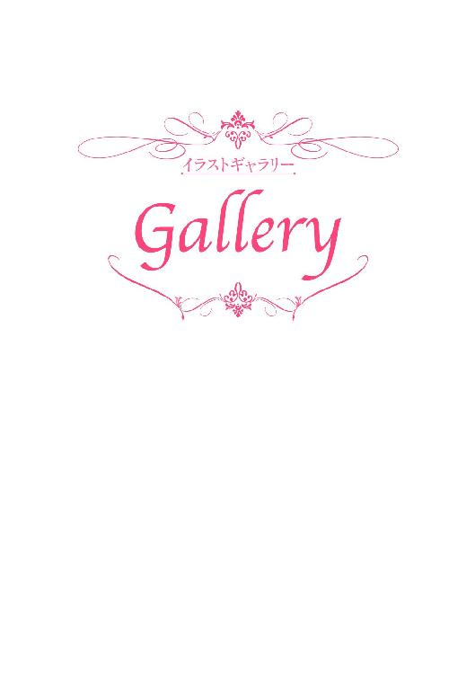

| あなたの胸で恋のレッスン (角川ルビー文庫) | |
| 水上 ルイ | |
| (2015) | |
あなたの胸で恋のレッスン
水上ルイ
角川ルビー文庫
本作品の全部または一部を無断で複製、転載、配信、送信したり、ホームページ上に転載することを禁止します。また、本作品の内容を無断で改変、改ざん等を行うことも禁止します。
本作品購入時にご承諾いただいた規約により、有償・無償にかかわらず本作品を第三者に譲渡することはできません。
本作品を示すサムネイルなどのイメージ画像は、再ダウンロード時に予告なく変更される場合があります。
本作品は縦書きでレイアウトされています。
また、ご覧になるリーディングシステムにより、表示の差が認められることがあります。
本文中に「>>>♥」が付されている箇所にはイラストがあります。その箇所を選択すると、ギャラリー中の該当するイラストが表示されます。読んでいた場所にもどるときは、イラスト直後の「このシーンはこちら♥」を選択してください。
あなたの胸で恋のレッスン
本宮広一郎
俺はずっと、自分を完璧主義の冷徹な人間だと思ってきた。
ヴァイオリニストとしても一流だと思うし、この私立聖邦学園の特別講師としての仕事も、完璧にこなしてきたつもりだ。
俺は自分の演奏と、そしてキャリアの妨げになりそうなことは、一切するまいと思ってきた。
......なのに、まさか、この俺が......、
俺は、呆然と思う。
......まさか、こんな気持ちになるなんて。
......しかも、相手は......？
俺は、ステージの上の華奢な少年から、目が離せない。
スーツ着用の必要はないと受験要項に書いてはあるが、たいていの受験生は、自分が格式のあるこの学園に相応しい、と言いたげに高価そうなスーツで受験に臨む。
しかし彼は、生成りのフィッシャーマンズセーターと、色あせたジーンズというシンプルな服装。
その飾り気のなさが、逆に彼の身体のラインのしなやかさを引き立てていた。
子鹿のようにすんなりとした首筋、ミルク色の頰を持つ小さな顔。
不格好な黒縁眼鏡が光を反射して表情は解らなかったが、その横顔のラインから、彼がそうとうの美形であることが知れた。
ステージに上がった彼は、受験生で埋め尽くされた広い会場を見回し、そして学園長を始めとする審査員席に目を留め、そしてカアッと赤くなった。
「......じゅ、受験番号二三一二番......さ、サギサワ・ミツルです......」
彼の声は、澄んで美しい響きを持っていたが......可哀想なほどに震えていた。
「どうぞ、演奏を始めて」と言われて、彼は目を閉じ、一瞬何かを考えるように動きを止め......そして唐突に、その大きな黒縁眼鏡を外した。
現れたのは、想像以上の......驚くほどに美しい顔だった。
小さく尖った顎、滑らかな頰。
緊張に震えている、花のような唇。
すんなりと通った、高貴な感じの鼻筋。
そして、閉じられたままの長い長い睫毛。
彼の唇が微かに開き、何かの言葉を形で紡ぎ出した。
『大丈夫、大丈夫だ』。彼は、そう自分に呟いたように見えた。
ステージ慣れした受験生ばかりのこの会場で、彼のその必死な反応はとても初々しく見えた。
そしてその怯えた様子は、俺の憐憫の情をどうしようもなくかき立てた。
彼は何度か深呼吸をし、それから覚悟を決めたようにその目をゆっくりと開いた。
「......あ......」
俺は、思わず小さく声を上げてしまった。
彼は、その華奢な身体と綺麗な顔で、どちらかといえば優しげな風情を漂わせていたが......その黒い瞳は、そこからは想像もつかないほどの強い光を発していた。
何かを追い求め、そしてストイックに美を追究する......それは、芸術家の目だった。
彼は虚空を見つめたまま、ヴァイオリンを持ち上げ、顎の下に挟み込んだ。
弓を持つ右手の肘はきっちりと締められ、手首は、柔らかく、そして深く折り曲げられていた。
彼は深呼吸をし、最初の音を空気の中に響かせる。
課題曲は、サラサーテ、『ツィゴイネルワイゼン』
彼の独得のフォームに、俺はウィーン・フィルの老齢のヴァイオリニストたちを思い出した。
それは、最近の奏者にしては珍しい、伝統的なウィーン風のボウイングだった。
手首を深く曲げるそのボウイングは、艶のある深い音色が期待できるかわりに、弓にかかる圧力が少なくなる。しかし彼はそのハンデも感じさせないほどの力強い音を響かせていた。
彼のヴァイオリンの音が、俺を包み込んでいる。
耳からするりと滑り込み、鼓膜を揺らし、俺の血管に入り込んで全身を駆けめぐる。
晩秋のウィーンの森を思わせるような、枯れた、しかし独特の深みと艶のあるその音色。
サラサーテの悲哀を含んだメロディーと、どこか格調の高さを感じさせる彼の音が相まって、派手ではないが、まるで熟成したワインのように味わい深い。
俺は、手元にあった受験生の資料に目を落とす。
名前は、『鷺沢美弦』。
音楽系の学校に通った経験はなく、通っていたのは都内近郊にある普通の公立中学。
コンクールの出場経験も、受賞経験もなし。
......技術的にも、経験的にも、ほかの受験生にはまだまだ及ばない。......だが。
俺は目を閉じて、彼の紡ぎ出す音に聴き惚れる。
......彼の音は、比類ないほど美しい。
......そして、心にあるすべての傷を癒してくれそうなほどにあたたかい......。
この実技試験は、長い入学試験の最後の関門だ。
私立聖邦学園に入学するためには、この試験をなんとかくぐり抜けなくてはならない。
鷺沢美弦が、激しい競争を突破して、聖邦学園の生徒になることを、俺は心から望んだ。
......彼がもし無事に入学していたら、俺の個人レッスンの生徒として指名しよう。
そして俺は、そう心に誓ったのだ。
鷺沢美弦
......ああ、まさか僕が、聖邦学園に入学できるなんて！
......しかも三年間、思いっきりヴァイオリンが弾ける！
そう思うだけで......胸がドキドキするんだ。
僕の名前は、鷺沢美弦。十五歳。
チビで、やせてて、スポーツは苦手。
みんなから、ガリ勉眼鏡くんとか、眼鏡を取ると美少女みたい、とかバカにされて、すっかりコンプレックスになってしまった黒縁眼鏡と女顔。
どこにでもいる、冴えない、地味で内向的な生徒......それが僕だ。
こんな僕にも、一つだけ熱中していることがある。
それは、小さい頃から続けていたヴァイオリン。
老齢で優しいヴァイオリンの先生が聴かせてくれたクラシック音楽は、地味で冴えない子供だった僕に日常を忘れさせてくれた。
煌めくシャンデリア。艶々と光を反射する大理石のダンスフロア。
晩餐会のために盛装した男女。
舞踏室に満ちているのは、人々のさざめきとバラの香り、そして......音楽。
人々の注目の中、大階段を下りてくるのは、白い燕尾服に身を包んだ、美しい王子様だろう。
華やかな音に彩られたクラシック音楽を聴く時、どこか童話にでも出てきそうな光景が、僕の目の奥に広がった。
そして僕は、クラシック音楽......そして自分でそれを奏でることに夢中になったんだ。
音楽雑誌で見た、私立聖邦学園のクラシカルな校舎。
有名な音楽家をたくさん輩出しているそこは、僕の憧れそのもので。
そこで思い切りヴァイオリンが弾けると思うと......僕は、これからの三年間が本当に楽しみで。
......今度の学校では『ガリ勉眼鏡くん』なんて呼ばれないように、コンタクトも作ったし！
......まあ、素顔をさらすのに抵抗があって、まだ眼鏡をしたままだけど......。
普通校の生徒だった今までは、学校で夕方まで勉強して、その後で走ってヴァイオリンのレッスンに向かってた。
......だって、一瞬でも早くヴァイオリンを弾きたくて。
でもこれからは、午前中が学科、そして午後が実技というカリキュラムになる。
......ということは、午後からはもう大好きなヴァイオリンが弾けるってことで。
全寮制の男子校だから、ほかのクラスメイトと接する機会も多いはず。
......だから自分からちゃんとアプローチして、友達も作らなきゃ！
......そして。
僕が聖邦学園への入学を希望したのには、がんばって一流校で音楽を学びたい、ってことのほかに......もう一つ理由があって。
......聖邦学園に行けば、ヴァイオリニストの、本宮広一郎に会えるんだ......。
その名前を思い出すだけで、僕の心臓がトクンと高鳴った。
本宮広一郎は、若くしてコンクールを総なめにした天才ヴァイオリニスト。
今は......ちょうど二十八歳のはず。
才能に溢れているだけじゃなくて、本人も、まるで俳優さんみたいなすごい美形らしい。だから女性ファンもものすごく多い、クラシック界の王子様だ。
二十歳でウィーン国立歌劇場管弦楽団の団員になり、同時にウィーン・フィルハーモニー管弦楽団でも実力を発揮している。
ソリストとしても世界中を公演しているんだけど、音楽教育の一環を担うために、春のこの時期、一カ月だけ、母校である聖邦学園に特別講師としてやってくるはずなんだ。
......そして。
彼は演奏技術の講義のほかに、一人生徒を選び、一カ月間個人レッスンをつけてくれるらしい。
毎年、一番優秀な生徒が選ばれると決まっているらしいから、僕にその機会がまわってくるわけは......もちろんないんだけど。
......一カ月間も本宮広一郎の特別レッスンが受けられたら、どんなに幸せだろうな......。
僕は思わず夢見てしまう。
本宮広一郎のＣＤなら、全部持ってる。
そのストイックなまでに完璧な演奏技術、そして重厚さと華やかさを兼ね備えたその音。僕は本宮広一郎というヴァイオリニストを心から尊敬している。
彼は、音楽雑誌や自分のＣＤジャケットに、顔写真を載せないので有名だ。
彼を見られるのは、すごい競争率を勝ち抜いてコンサートチケットを手に入れられた人。
そして、彼の母校であるこの聖邦学園の学生たち。
彼がデビューした時、世界的に有名な音楽批評家が、『あんなに美しい男に、まともな演奏ができるわけがないと思った。だが彼は、神から二物を与えられていた』と書いた。
コンサートに行った人が、自分のインターネットのサイトに、『本宮広一郎の演奏は夢のように素晴らしく、本人は神のように美しい』と書いていたのを読んだことがある。
宣伝効果とかファン心理の部分を差し引いたとしても、きっと彼本人も素敵な人なんだろう。
......個人レッスンなんて贅沢は言わない。せめて、彼と一言くらいお話してみたいな。
まだ見ぬ本宮広一郎と向かい合ったところを想像するだけで、鼓動が速くなってしまう。
......まったく。
......女の子じゃないんだから、男の人のことを想像してドキドキしてどうするんだ？
僕は一人で赤くなる。
......って、赤くなってる場合じゃなくて。
「......そろそろ、校舎が見えてもいい頃だよね......」
バス停から歩き出して、もう三十分にはなる。
両側を森に囲まれた道路は......だんだん細く、坂はだんだんきつくなる。
聖邦学園の入学試験には、全国から膨大な数の受験生が集まっていた。
学園の音楽堂では収容し切れないということで、入学試験の実技は、都内の大きな音楽ホールで行われたんだ（試験を受ける生徒が列になり、客席にびっしり詰まって、まるで本当のコンサートみたいだった。あまりにすごくて僕は緊張し切って自分の演奏の様子を憶えてないほどだ）。
だから、僕はこの学園に来るのは初めて。
唯一の頼みの綱の入学のしおりには、最寄りのバス停から徒歩十分って書いてあった。
いくら僕がチビで足が遅いといっても、そろそろ......。
「......この角を曲がったら、見えるかな？」
僕は呟きながら角を曲がり......、
「......あれ？」
そこにはまた延々と同じ様な道が続いているばかり。
遠くに見えてもいいはずの校舎と寮の明かりは......どこにもない。
いちおう街灯はついているんだけど、ひと気はまったくなく、車のライトすら見えない。
まだ寒さの残る四月、しかも山の上。冷たい風が吹き抜けて、薄いジャケットを羽織っただけの僕は、ヴァイオリンケースを抱きしめて思わず震える。
フクロウでも飛び立ったのか、すぐ頭上の木がザザッと激しく揺れて、僕は驚いてビクンと飛び上がる。
「......う......」
もしかして迷ったんじゃ？ という考えが、僕の脳裏をよぎる。
普段でも方向音痴な僕だけど、まさかバス停から真っ直ぐの道で間違えるわけはなくて。
「......そうだよね、いくら僕でもね」
僕は呟いて、また道を上り出す。
ふと、続いていた林がとぎれ、そこから視界が開ける。
眼下の遥か遠くに、街の明かりと黒い海を見渡すことができた。
「......わあ」
僕は思わず、その空き地のような展望台に足を踏み入れる。
夜露を含んだ草がキラキラと煌めいて、なんだか夢の中みたいに綺麗。
僕を照らすのは、まばゆいほどの満月。
見上げると、くっきりとした白い帯のように天を横切る、天の川。
そして、満天の星。
「......綺麗......」
東京郊外にある僕の部屋からは、ほとんど星なんか見えなかった。
それに、受験勉強に追われてた僕は、空を見上げることなんか忘れていたし。
「......星がこんなに明るいだなんて......」
誰もいないこの場所に立っていると、まるで星空を独り占めしているみたい。
少し冷たいけど、瑞々しい土と、芳しい緑の香りのする風。
......弾きたいな......。
僕は、心から思ってしまう。
......この風景に、僕のヴァイオリンの音を響かせてみたいな......。
僕の手が、勝手にボストンバッグを地面に置く。
もう片方の手に持っていたケースから、ヴァイオリンを出す。
ずっと受験のためのメソッドばかりを弾いていた。
入学したら、好きな曲を好きなように弾いてるばかりというわけにはいかないだろう。
......今夜くらいはいいよね......？
僕は弓を弦の上に滑らせ、ペグをまわして素早く調弦をする。
......何を弾こう？
思うけど、僕の弓は勝手に走り出して。
この静かな風景に合っているのは、ゆっくりとした優雅なメロディー。
澄んだ空気の中に、僕のヴァイオリンが響き出す。
僕の弓から勝手に流れ出したのは、バッハの『ヴァイオリン協奏曲第二番』。
「この曲は、優しく、愛情を持って弾きなさい」と言った、先生の言葉を思い出す。
僕の弓は滑らかに滑り、弦を押さえる左手はメロディーを忠実に再現してくれる。
......ああ、いいかも......。
目を閉じて、空気を震わせる自分のヴァイオリンの音に意識を集中する。
僕は気が小さくて、小さな発表会はもちろん、先生以外の人のいる前でだって、リラックスして弾くことができない。
聖邦学園の入学試験の時も、無理やりがんばったって感じで、本当に自分が満足のいく演奏はできていなかったと思う。
だから、入学試験に受かったのは本当に......ラッキーだったんだろうな。
......だけど、今なら、こんなふうに思いっきり弾ける。
......気持ちいい......。
......僕、やっぱりヴァイオリンが本当に好きだ......。
思いながら弾き終え、僕はため息をつく。
すごくよく弾けた気がする。
けど、その音は山間に消えて、もう戻ってこない。
......ああ、人前でもどこでも、こんなふうに楽しく弾くことができたらいいのに......。
思いながら、ヴァイオリンを下ろす。
ヴァイオリンケースを地面に置くと汚れてしまいそうなので、展望台のコンクリートの手すりの上に置き、弓とヴァイオリンをそこに入れる。
ケースの蓋を閉め、金具を締めた時......、
「......何をしているんだ、こんな場所で？」
後ろから、低い声が響いた。
誰もいないと思っていた場所でいきなり人の声が聞こえるのは、はっきり言ってすごく怖い。
僕は驚きのあまり慌てて振り向き、その拍子に僕の肘が手すりの上にあったヴァイオリンケースをかすめて......、
......あ！
弓の入ったヴァイオリンケースが、手すりから向こう側に滑り落ちる。
僕の脳裏に、深い谷底に落ちていくヴァイオリンケースの映像がよぎる。
......おじいさんにもらったヴァイオリンが......！
......そして、入学試験に備えて、と先生がプレゼントしてくださった、大切な弓が......！
僕は我を忘れて手すりの上から必死で身を乗り出す。
不安定な姿勢のまま、必死に手を振り回す。
身体が前に傾いて、ふわり、と浮くような感覚。
......え......？
暗がりから、草を踏んで駆け寄ってくる足音がした。
僕の腰が、男の人のものらしき逞しい腕にしっかりと抱きしめられる。
僕の脇から手が伸ばされ、僕のヴァイオリンケースがすんでのところで摑まれる。
......ああ......。
僕はホッとして膝から力が抜けてしまう。
かくんと座り込みそうになった僕を、その人は後ろからきゅっと抱きしめてくれる。
「......よかった......」
聞こえたのは、胸に直接響くような低い美声。思わず、というような小さな呟き。
その呟きは、本当にホッとしてくれたように聞こえて。
僕は、自分がヴァイオリンをどんなに大切にしているか解ってもらえたみたいな気がして、なんだか胸が熱くなる。
緑の香りの夜風に、ふわ、と彼の芳しいコロンの香りが混ざる。
密着している彼の体温をリアルに感じて、なぜか頰が熱くなる。
思わず身じろぎした僕を、彼はハッとしたように放す。
「......あの！」
僕は、お礼を言わなくちゃ、と思って勢いよく振り向き、彼の顔を見上げる。
そして......そのまま呆然と固まってしまう。
満天の星を背にして立っていたのは、背の高い男の人。
満月に照らされた彼は、僕がクラシックを聴きながら夢見てしまっていた王子様のような......見とれてしまうほどハンサムな男の人だった。
引きしまった頰、通った鼻筋、少し薄目の男っぽい唇。
きちんとカットされた、艶のある黒い髪。
凜々しい奥二重の下の、まるで宝石のように煌めく漆黒の瞳。
彼は、その美しい瞳で真っ直ぐに僕を見下ろしていた。
僕はまるで魅せられてしまったかのように、彼の瞳から目が離せない。
彼は、なんだかすごく優しい顔をして僕を見つめてくれている。 >>>♥
「......あ......あの......」
なんとか口を開くけど、その声は情けなくかすれてしまう。
「......は......初めまして。僕、鷺沢美弦といいます......」
やっとのことで言う。
「......僕のヴァイオリンと弓を助けてくださって、ありがとうございます......それ、すごく大切なモノなんです」
僕は、夢に見る王子様と同じように、彼がにっこりと微笑んでくれるのを想像する。
......ああ、こんなにハンサムな彼が微笑んでくれたら、本当にステキだろうな......。
けど。
彼はその形のいい眉を、いきなり不機嫌そうにキュッと寄せる。
......え......？
さっきまでの優しい光が噓みたいに、彼の目つきが鋭くなる。
完璧なほどに整った顔をしている彼がそんな目をすると......なんだかすごく......。
僕の背中に、怯えに似た冷たい戦慄が走る。
......こ......怖いかも......。
「今、その崖から落ちそうになったのは、ヴァイオリンと弓だけか？」
聞き惚れるような美声だけど、その口調は明らかに苛立っている。
「それだけではないだろう？」
強い口調で言われ、まるで尋問でもしているかのように睨まれて、僕は思わず後ずさる。
「......え......ええと......？」
「君は、自分もここから落ちそうになった。解っている？」
彼の言葉に、僕は、そういえば、と思い出す。
「......そういえば、あの時、ふわっと身体が浮いた気が......？」
彼は手で顔を覆い、深い深いため息をつく。
「君は身を乗り出しすぎて落ちかけていた。完全に足が浮いていたよ。......本当に驚いた」
本当にバカなお子様だな、って言われたような気がして、僕は悲しくなる。
「......す、すみません......大事なヴァイオリンと弓を取らなきゃって、夢中で......」
僕は、彼にあらためて頭を下げて、
「......あの。ヴァイオリンと弓と、そして僕を助けてくださってありがとうございました」
言うと、彼は難しい顔のままで僕を見下ろす。
「ヴァイオリンも大切だが、ケガでもしたら大変だろう」
「......は、はい......」
「そして......」
彼は、言いながら、ヴァイオリンケースを僕に差し出す。
「......どうして、こんな寒い場所でヴァイオリンを弾いているんだ？」
「......え？ あの......」
......たしかに、ちゃんと説明しないとすごくアヤしいかも、僕......？
「......あの、僕、聖邦学園に入学が決まって、今夜、寮に入るんです」
緊張のあまり声がかすれてしまう。彼は不審そうな顔で、
「聖邦学園の寮に向かうのに、なぜ、こんな場所に？」
「え？ あの、聖邦学園はこの道の先に......」
僕が坂の上の方向を指さすと、彼はあきれたような顔になる。
「聖邦学園のある道は、ここではないよ」
「えっ？」
「降りるバス停を間違えたんだろう。ちゃんと『聖邦学園前』で降りた？」
「え、いえ......たしか、『聖邦学園坂下』で......」
彼は深いため息をつく。
「『聖邦学園坂』は、あの山の下から頂上まで続く、五キロの道の通称だ。しかも君は進むべき方向を間違えたらしい。聖邦学園は......」
彼は手を上げ、隣の山の中腹を指さす。
「......あそこにある明かりがそうだ」
「えええっ？」
僕は思わず叫んでしまう。
そこまではライトアップされた道が続き、オレンジ色の、雰囲気のある明かりが灯っている。
さっき見た時は、豪華なリゾートホテルか何かがあるのかと思ったんだけど......。
「あれが......学校......？」
「そうだ。この山をいくら登っても君の目的地には到着できないよ」
......うわあ、僕、何やってるんだろう......？
全然違う山を一生懸命登って、山の上で浮かれてヴァイオリンを弾いちゃって。しかも崖から落ちそうになって......。
......僕って、本当に、何をやってもダメかも......。
僕は思いながらガックリと肩を落とす。
楽しかった気分がしぼみ、いつもの自己嫌悪が僕の心に重くのしかかってくる。
......ああ、がんばって生まれ変わろうと決心した矢先に......。
僕は暗いため息をつく。
......しかも、こんなに見とれるようなハンサムな人に、ご迷惑をおかけしちゃうなんて。
僕は、黙って見下ろしてくれている彼に、また見とれてしまう。
それから、しまった、彼に道を教えてもらったお礼も言わなきゃ、と思う。
「......あの。ご親切にありがとうございました」
僕は言って、彼に頭を下げる。
「......助けてくださったうえに、道まで教えていただいて。本当に助かりました」
僕はヴァイオリンを抱きしめ、もう片方の手でボストンバッグを持ち上げる。
「......それでは、僕は失礼します」
「え？」
少し驚いたような顔をする彼に、もう一度深く頭を下げてから、僕は彼に背を向ける。
「ちょ、ちょっと待ちなさい」
彼はなぜか慌てたような声で僕を呼び止める。振り向くと、彼は、
「ここから、あの山の上まで何キロあると思うんだ？ もうとっくにバスなどないよ」
「......う......」
僕はここまでの道のりを思い出し、そして向こうの明かりを見ながら青ざめる。
ここから麓まで下りて、それからあの山をあそこまで登って......？
考えるだけで、気が遠くなりそう。
......だけど、がんばるしかない！ 何もかも、ボケてる僕が悪いんだから......！
「......あ......歩きます。間違えたのは自分のせいなので......」
彼は、本当にあきれた、という感じで僕を見つめて、またため息をつく。
「こんな寒い夜に延々と歩いたら、風邪をひいてしまう。聖邦学園に進んだということは演奏家を目指しているんだろう？ きちんと自己管理をするのも演奏家の第一歩ではないのか？」
彼の言葉に、僕の心がツキンと痛んだ。
......そうなんだよね......。
声楽なんかは言わずもがなだけど、ヴァイオリンだって体調が悪いと音が濁ってくる。
鼻が詰まったりすると耳だって正確に機能しなくなるし。
だいいち、演奏家を目指して体調に本当に気を遣っている生徒ばかりであろうあの学校に、風邪を持ち込むことじたいが大迷惑って感じだし。
「仕方がない。乗りなさい」
「......乗る......？」
彼の言葉に、僕は一瞬なんのことだか解らずに呆然とする。
彼は、なんて鈍い子なんだ、という顔で、道路の方に目をやる。
街灯の下に、すごく綺麗な流線型をしたスポーツタイプの車が停まっていた。
僕がこの空き地に足を止めた時には、もちろんそんな車はなくて。
彼はきっと、変なお子様が崖の上で、一人きりでヴァイオリンを弾いているのを見かけて、心配して車を停めてくれたんだろう。
......車が停まったことにも気づかずに、ずっと弾いてたんだ......。
......なんか僕、めちゃくちゃ恥ずかしいかも......。
僕はヴァイオリンケースを抱きしめたまま、一人で赤くなる。
彼はさっさと歩いて車の助手席のドアを開き、僕を振り返る。
「ボーッとしていないで早く乗りなさい。俺にまで風邪をひかせる気か？」
「す、すみませんっ！」
僕は全速力で車まで走り、車の中に飛び込もうとして......、
ガツン！
「はうっ！」
ドアの上、天井のところにおでこを思い切りぶつけてしまう。
「だ、大丈夫か？」
ドアを押さえていてくれた彼がさすがに驚いたような声で聞いてくる。
「......だ、大丈夫です......っ！」
必死で答え、助手席に座るけど、目の前には星がキラキラと散ってしまっていて。
......ああ、僕、本当にバカみたいだ......！
痛いのと、恥ずかしいのとで、なんだか涙が滲んでくる。
「ちょっと待っていなさい」
彼が言い、外から助手席側のドアを閉める。
......い、た～......。
彼が背を向けたのを見て、僕は思わず額を両手で押さえる。
冷え切った手が、じんじん痛む額に心地いい。
ぶつけたところは熱を持っていて、このままじゃ明日には大きなたんこぶになりそう。
......ああ、たんこぶを作って入学式に出るなんて......。
......ルックスも冴えないし、実力も足りないのに、そのうえなんて格好悪いんだろう......。
思ったら、本気で泣きそうになる。
ガチャ。
運転席側のドアが外から開く音に、僕は慌てて額から手を離す。
......こんなハンサムな男の人に、これ以上格好悪いところは見せられないよ！
彼が、身軽な動作で運転席に滑り込んでくる。
車内に流れ込んでくる夜気、それに混じるフワリと芳しい彼のコロンの香り。
......ああ......。
僕は、またドキドキしてしまいながら思う。
......こんな王子様みたいに素敵な人と二人きりだなんて、なんか夢みたい。
だけど、ジンジンする額の痛みが、これが現実であることをしっかり思い知らせてくれる。
彼は本当に、夢に出てきた王子様みたいに素敵で。
だけど、僕はただの格好悪いマヌケなお子様で。
彼はさっさと僕を学園に送り、そのまま自分の世界に戻っていくのだろう。
偶然に会っただけの僕らは、もう二度と会うことはない。
......これが現実だよね......。
「こっちを向きなさい」
彼の低い声が車内に響いて、考え事に沈みそうになっていた僕は、慌てて彼を振り返る。
「はい、なんでしょうか......え......っ？」
いきなり、彼の手が、僕の眼鏡を外した。
「......あ......」
素顔を見られることに慣れていない僕は、意味もなく赤くなってしまう。
「今時、こんな眼鏡をしているのは珍しい。......コンタクトは？」
彼はなぜだか呆然とした声で呟く。
......あ、やっぱり小学校の頃から使ってるこの眼鏡って......格好悪いんだな......。
僕はますます赤くなってしまいながら、
「コンタクトも、作ったことは作ったんです。素顔を見られるのに慣れていないのできっかけが摑めなくて......入学したらコンタクトにしようかと思ってるんですけど......」
「いや。普段は眼鏡をしている方がいいかもしれない」
少し慌てたような声で言われた彼の言葉に、僕は落ち込んでしまう。
......そうだよね、眼鏡があっても冴えないけど、ないとますます情けないもんね。
......やっぱり、高校に行っても、この眼鏡のままにしようかな......？
「だが、今は少しだけ外していてくれ」
彼が言いながら、僕のシャツの胸ポケットに、眼鏡を入れてくれる。
いきなり、彼の大きな手が、僕の後頭部をそっと支えた。
額と目の上にかけてを、ひんやりと濡れた布の感触が覆う。
「水飲み場があったのでハンカチを濡らしてきた。......このままでは腫れてしまうだろう」
熱を持ってズキズキと痛んでいた額が冷やされて、すごく楽になる。
濡れた布地越しの、彼の大きな手の感触。
後頭部を優しく支えてくれるあたたかな手のひら。
額だけじゃなくて目まで覆われて、視界が奪われている。
「......す、すみません、僕......自分で......っ」
僕は慌ててハンカチに手を伸ばす。
だけど彼は手を離してはくれず......僕は彼の手の上に手のひらを重ねる格好になってしまう。
「......あ、あの......っ？」
手のひらに触れた、彼の手の感触。
男らしくしっかりと骨の張った手、驚くほど長い指、そして貴族的に滑らかな肌。
まるで彼の手を握りしめているようで、めちゃくちゃ恥ずかしくなり、僕は思わず手を引く。
「......おとなしくしていなさい」
思っていたより、彼の顔は近くにあるみたいだ。
耳元の産毛を揺らす、彼の息。
鼓膜を心地よく振動させた、彼の低い声。
僕の身体を、ツキンと痛い、そしてとても甘い何かが駆け抜けた。
「......あ......」
僕はその衝撃に、思わず震えてしまう。
......くすぐったい......のとも違う......？
......これは、いったい......？
「......動かないで。しばらく、このままで」
見えない分だけ感覚が鋭敏になったみたいな感じで、彼の体温と香りを、すごく近くに感じる。
......あ......どうしたんだろう......？
なぜか、鼓動が、どんどん速くなってしまうんだ。
＊
車は学園の門を入り、街路樹の植わった煉瓦敷きの道をゆっくりと進む。
さすがに歴史のある学園だけあって、街路樹は見上げるほど大きい。
木々の隙間から、黒くそびえ立つ建物がいくつも見えている。
どれも東京駅の駅舎みたいに凝った造りの建物。明るいところで見れば古さが解るんだろうけど、満月の下ではそれらはすごく綺麗に見え、まるでタイムスリップしてしまったみたいな感じがしてくる。
道の両端には、パリかどこかにありそうなアイアンワークの街灯が灯っている。
そのほかに特に表示が立っているわけでもないのに......彼は迷うことなく道を進んでいく。
......この学園のことを、よく知っている人なのかな？
僕は緊張のあまりヴァイオリンケースを抱きしめたまま、運転している彼の横顔を盗み見る。
彼の顔はまったくの無表情で、そして......。
......なんて美しい男の人なんだろう......。
僕はそのまま彼の横顔から目が離せなくなってしまう。
秀でた眉、高い鼻梁、少し薄目の男っぽい唇。
彼の横顔は、まるで彫刻みたいに完璧な美しさを保っている。
そのバランスをわずかに崩しているのは、まるで作り物みたいに長い睫毛。
冷淡に見えそうなその顔が、それだけでなんだかすごくセクシーに見える。
僕の心臓が、トクンと一つ跳ね上がる。
僕の頰が、なぜか勝手に赤くなる。
......ああ、本当にどうしたんだろう、僕......？
......すごいハンサムとはいえ、なんで男の人の横顔に、こんなに見とれちゃってるんだろう？
「......何か？」
彼の唇が微かに動いて、低い声を漏らす。
......ああ、彼はハンサムなだけじゃなくて、本当にすごい美声。
僕は呆然としたまま思い......それからハッと気がついて、
「......え？ あ？ はい？ なんでしょうか？」
彼は美しい眉間に微かに不愉快そうな皺を寄せる。
「用がないのなら、そんなふうに人の顔をじっと見るのはやめた方がいい」
「......あっ！」
......気づかれてた！
「......す、すみません！ すごいハンサムだから、つい見とれて......ああっ！」
僕はますます赤くなって、
「......すみません！ 不躾なこと！」
彼は肩をすくめ、そして車は建物の車寄せに停まる。
「本当にありがとうございました」
僕は外に出て、運転席の方にまわり、彼に頭を下げる。窓を開けてくれた彼に、
「あなたが乗せてくださらなかったら、僕は今頃、まだあっちの山をうろうろしてました」
「あの山は別荘が点々とあるだけの寂しい場所だ。一人でうろついたりしてはいけない。......解ったね？」
彼の口調は無感情で冷淡な感じだったけど、その声にはなんとなく優しい響き。
......この人は、見も知らぬ僕を助けてくれて。しかも学校まで送り届けてくれた。
真っ直ぐに見つめられて、鼓動が速くなる。
......きっと、優しい人なんだな。
「あの......よろしかったらお名前を......」
「名乗るほどのことはしていない。立ち話をすると冷えるから、すぐに屋内に入る方がいい。......おやすみ」
彼はあっさり言って、窓を閉めてしまう。
走り去る車を見送りながら、僕はなんだか心の中に風が吹くような気持ちを味わっていた。
......なんなんだろう、この気持ち......？
本宮広一郎
「......鷺沢美弦......」
俺は窓の外を見つめながら、彼の名前を口の中で呟く。
間近に見た彼の素顔は、想像していたよりも遥かに美しかった。まるで天使のように。
長い睫毛の下の潤んだ瞳。触れたくなるような滑らかな頰。果実のような無垢な唇。
この素顔をさらしたらどんな危険な目に遭うか解らないという考えが頭をよぎり、思わず、『眼鏡をしたままの方がいい』などと言ってしまった。
なぜか、この美しい少年の素顔を見るのは自分だけであって欲しい、と思ってしまったのだ。
額を冷やす時、わざと視界まで奪った。その時の、喘ぎにも似た彼の声を思い出す。
それだけで、胸が甘く痛む。
......ああ、本当にどうしたというのだろう......？
......どうして彼のことを思うだけで、こんな気持ちになるのだろう......？
俺は、本宮広一郎。二十八歳。ヴァイオリニスト。
聖邦学園に高等部まで通い、卒業後はオーストリアに渡ってウィーン音楽大学に入学した。
大学時代からウィーン国立歌劇場管弦楽団の第一ヴァイオリンを務め、同じく所属していたウィーン・フィルハーモニー管弦楽団では二十三歳でコンサートマスターになった。
楽団員のほかにソリストとしての活動もしているので、一年間のほとんどを演奏会とＣＤ制作に費やしているが、そのうちの一カ月だけを、母校の特別講師として過ごすことにしている。
多忙を極めるスケジュールの中で、自分の原点ともいえる母校で過ごす一カ月間は、俺にとってはまたとない充電期間でもあり、また生徒たちから何かを学ぶ貴重な機会でもある。
......そして。
俺が、あの鷺沢美弦という少年に会ったのは、今夜が初めてではない。
彼に初めて会ったのは、私立聖邦学園高等部の入学試験の試験会場。
私立聖邦学園は、日本で、いや、世界中にもその名を知られた音楽系名門校だ。初等部、中等部、高等部と分かれているその学園の、高等部の入学試験会場に、鷺沢美弦という少年はいた。
毎年、たくさんの受験生が詰めかけるこの学園の実技試験は、都内の大きなホールを貸し切って行われていた。
この学園の正式な教員ではなく特別講師の俺は、試験の合否に口を挟むことはできない。
だが、今後の教育の参考のために見ていかないか、と学園長から言われ、ちょうど演奏会のために日本に帰ってきていたこともあって、そのホールに足を運んだ。
必死で採点をしている教師たちや、鋭い目で彼らを判定する学園長を横目で見ながら、俺はあまり音響のよくない通路に立ち、ただ演奏を聴くことに専念していた。
演奏レベルはとても高く、コンテストの常連や、すでにセミプロの受験生たちも多かった。
しかし、その中で、ひときわ光を放っていたのが......あの、鷺沢美弦という少年だった。
......彼は、俺の望みどおり、聖邦学園に入学してくれた。
......明日になれば、また彼に会える。
さっき、彼に会えたのは運命ではないか......そう思えてしまうほど、心が熱くなる。
俺は、眼下に聖邦学園の明かりを見下ろせる、自分の別荘にいた。
ここは、俺が思い切り演奏をしたくなった時に来る、自分だけの隠れ家だ。
学園長を始め、教師も生徒も、誰もここには呼んだことがない。
ハードスケジュールを自分に課している俺には、一人になれる時間と場所はとても貴重だ。
この春休み。生徒たちは新学期の前のつかの間の休日を楽しんだだろうが、俺はその間にたまっていた作曲の仕事をこなし、芸術劇場でのリサイタルをし、レコーディングを終わらせた。
明日からは新学期、最後の一日を別荘で過ごすために山道を登っていた俺は......ヘッドライトに一瞬だけ浮かび上がった人影に驚いた。
頂上近い場所に別荘地があるだけのこちら側の山、しかもこんな遅い時間、徒歩で山を登る人を見かけることなど、ほとんどない。
展望台からの眺めはたしかにいいが、あそこの低い手すりの下はすぐに崖になっており、その遥か下には急流が流れている。落ちたとしたら、まずは無事ではすまない。
さっき人影を見かけた時、自殺願望者かと思い、俺は思わず車を停めた。
慌ててエンジンを切り......流れているヴァイオリンの調べに気づいた。
俺はそっとドアを開き、そして、あまりの偶然に思わず呆然としてしまった。
その華奢な後ろ姿には見憶えがあった。
そして何よりも、その音を、俺は忘れられなかった。
......彼だ......。
俺はその場に立ちすくみ、谷間に響き渡るそのヴァイオリンの音色に、我を忘れて聴き惚れてしまった。
そして、手すりから落ちた彼のヴァイオリンを受け止め、落ちそうになる彼を助け......。
俺は、今夜見た、彼の様子を思い出して、思わず微笑んでしまう。
......大変な夜だったが、彼の本当の姿を見ることができたような気がする。
あの、恐ろしいほど美しいヴァイオリンの音色を奏でるあの少年が、愛すべき人物であったことが......俺の心をあたためていた。
鷺沢美弦
大理石の張られた床。天井から点々と下げられた、鈍い金色に光る小型のシャンデリア。
シャンデリアは、時代を経た覆いガラスを持つ落ち着いた光を放つもので、なんとなく蠟燭が灯されていたであろう時代の面影を今に残している。
「......素敵だなあ......」
僕は天井を見上げながら、うっとりと呟く。
さすが、名門の聖邦学園。校舎もすごく綺麗だ。
「......あれ......？」
僕は煌びやかな廊下を見渡し、それからどっちに行けばいいのか解らないことに気づく。
「......ここって、どこだろう？」
入学のしおりに学園内の地図が載っていたのを思い出し、僕はボストンバッグを床に置く。
学校名と格好いい校章のマークがついた封筒を取り出し、中から入学案内を出す。
「......ええと......？」
サイズが合ってないせいでずり落ちてくる眼鏡をかけ直し、僕は小冊子の最終ページを開く。
「......う......」
そこに載っていたのは、本当に大まかな地図で、校舎の位置関係しか解らなかった。それに、今いるのは......？
案内表示を探してキョロキョロと見回した僕の耳に、
「君は、新入生だね？」
という、低くて渋い声が聞こえた。
慌てて振り返ると、そこに立っていたのは三十代前半くらいの男の人。
英国製っぽい落ち着いた色合いのスーツに、すごく趣味のいいネクタイ。
「......あ......！」
彼の顔は、入学案内の写真で見た。
「......東学園長先生......！」
そう、彼はこの学園の学園長・東良嗣さん。
学園を経営する東財閥の御曹司で、若くしてこの学園を継いだ教育界のホープと言われる人。たしか......、まだ独身のはず。
「私の顔を憶えてくれたんだね。嬉しいよ、鷺沢美弦くん」
「......え？」
僕は呆然とする。
......今、僕の名前......？
この学園は少数精鋭で知られているけど、今年の新入生はたしか四十人ぴったり。
......その全員の顔と名前を憶えているのかな......？
思いながら見上げると、彼はその渋い感じのハンサムな顔に優しい笑みを浮かべる。
「今年の新入生は四十人。その全員の顔と名前をもう憶えているのか、と聞きたそうだね」
いきなり図星を指されて、僕は赤くなってしまう。
学園長先生はいきなり手を伸ばし、僕の髪をクシャッと撫でてくれる。
「赤くなったりするとますます可愛らしいな。入学試験の時もそう思ったけれどね」
「......あ......」
家族にもそんなことをされたことのない僕は、ますます赤くなってしまう。
「新入生のうち、二十五人は附属中学からの持ち上がり組。顔も名前も知っている」
「そうなんですか？」
「憶えるべきはあと十五人だけなんだよ。しかもその中でも君は一番......」
彼は言いかけてふと言葉を切る。なんだか可笑しそうに笑ってまた僕の髪を撫でる。
「......いや、その先はヴァイオリン科の担任から聞いた方がいいね」
......なんだろう？ 僕が一番......その先は......？
僕は少し考えてから、ちょっと寂しい気分になる。
......僕がこんな立派な学校で褒め言葉をもらえるわけがない......。
僕は、学園長先生に気づかれないように、心の中でため息をつく。
......きっと、僕が一番ヘタクソだった、とか、瓶底眼鏡で一番ダサかった、とかだよね......。
＊
学園長先生が、一つのドアの前で立ち止まる。
ピアニストらしい綺麗な手を握り、ドアに軽く三回ノック。
「......はーいっ！」
ドアの向こうから声がして、軽やかな足音が近づいてくる。
「どうぞ！ 鍵、開いてるのに......！」
声と一緒にドアが開く。
中から出てきたのは、僕より十センチくらい背の高い男の子（子といっていいのかな？）。
僕よりも一つ二つ年上に見えるから......きっと上級生だろう。
「あれ？」
彼は学園長先生を見、それから僕に目を移す。
「ああ......やっと到着したんだね。遅いから心配しちゃった」
スポーツが得意そうな引きしまった身体に、ラフな黒のセーター、そしてジーンズ。
ちょっとバサバサした感じの黒い髪。
奥二重の下の黒い瞳は、いたずらそうな感じでキラキラ光ってる。
彼は、テレビに出てるアイドルみたいな......すごい美青年だった。
「君が鷺沢美弦くん？ オレ、ルームメイトになる小田瀬良！ ヴァイオリン科一年！」
......一年？
僕はちょっと驚いてしまう。
......同じ年なのか......。
......オトナっぽいなあ......。
自分が人並みはずれてチビで童顔なことを思い出して、ちょっと落ち込みそう。
「オレ、附属中学からの持ち上がり組なんだよ、よろしくね！」
彼は人なつこい顔で僕に笑いかけて、
「オレのこと、瀬良って呼んでいいよ！ オレも美弦って呼んでいい？」
いきなり言われて、僕は驚いてしまう。
今までいた中学校では、みんながなんとなく僕を遠巻きにしてた。
呼ぶ時だって、『鷺沢くん』としか呼ばれたことがなかったし。
......なんかちょっと恥ずかしくて......。
......そして、なんだかすごく嬉しいかも......。
「......う、うん。僕のことも、美弦って呼んで......」
言うと、瀬良くんはにっこり笑ってくれる。
「美弦！ どうぞ入って！ そろそろ着くかと思ってお茶の準備をしておいたんだ！」
彼はドアの前からどいて、僕を中に入れてくれる。
すっかり存在を忘れられていたような学園長先生が、瀬良くんに向かって、
「ルームメイトを案内してきたご褒美に、私もお茶をごちそうになっていいかな？」
と言って、親しげに笑いかける。瀬良くんは、なぜか急にカアッと赤くなって彼を睨む。
「......ダ、ダメ！ 図々しいぞ......っ！」
......え......っ？
その言葉に、僕は呆然としてしまう。それからちょっと青ざめる。
......こんな偉くて有名な、学園長先生に、そんなふうに言って平気なの......？
学園長先生はちょっと怒ったように眉をつり上げる。
「この音楽業界広しといえども、この私にそんな口を利けるのは......」
「いいから、さっさと自分の部屋に帰ればっ？」
睨み合う二人を見比べて、僕は一人でアセる。
......どうしよう......？
「......あ、あの！ あの......っ！」
なんとかしようと一人でバタバタするけど、何を言っていいのか解らなくて......。
瀬良くんと学園長先生は、二人揃って僕を振り返る。
「......あ、あの......ケンカとかはダメです......っ！ あ、ケンカじゃないかもしれませんけど......あの......あの......っ！」
精いっぱい思い切って言うけど、何を言っているのか意味不明だ。
......ああ、僕って、なんか本当にダメな感じだ......！
......何が原因か解らないけど、この二人がケンカをしちゃったら、僕のせいかも......？
また落ち込みそうになった時、怖い顔をしていた二人が、いきなりプウッと噴き出した。
......え......っ？
二人は、もう我慢できない、というように笑い出す。
......ええ......っ？
......どうしたんだろう......？
「可愛いなあ！ こんな外部生が入ってくるなんて、ラッキーだよー！」
瀬良くんがいきなり僕の肩を抱き寄せる。
......え......？
「彼は可愛いだけでなく、素晴らしい実力の持ち主なんだ」
「......そ......そんなこと......」
学園長先生の言葉に、僕は真っ赤になってしまう。 >>>♥
自分の実力を知ってるから、学園長先生がご親切で言ってくださっているのは解る。
......でも、なんだかすごく嬉しくて。
「へえ！ 美弦ってすごいんだあ！」
瀬良くんが素直に感心したように言ってくれて、僕はますます赤くなってしまう。
「本宮先生も、彼の実力は認めているんだよ。明日の歓迎パーティーでの演奏が楽しみだな」
学園長先生の言葉に、僕は一気に青ざめる。
......そういえば......！
この学校の入学のしおりに書いてあった学校行事を思い出す。
入学式の後、歓迎パーティーがあるってそこに書いてあった。
そこに小さな字で、『新入生によるミニコンサートがあります』って注意書きがあって。
......それって、もしかして全員が弾くとか......？
......プレッシャーに弱い僕が、急に弾けるわけがないよ......！
僕はものすごくアセってしまいながら、
「......あ、あの......学園長先生。歓迎パーティーでのミニコンサートって、新入生の代表の人が演奏する......だけですよね？」
「そうだよ。新入生のうち、各科の入学試験の上位者が三名ずつ演奏をする」
......なんだ......。
僕はホッとため息をつく。
もともと仕方なくやってたガリ勉が功を奏して、学科の成績はまあまあだったはず。
だけど、実技の演奏はもう何も憶えてないくらい緊張してたし......絶対に最下位ギリギリだ。
......成績の上位者に、この僕が入ってるわけがないよね......。
「だから、入学試験で優秀な成績を収めた君は、演奏者の中に入っているんだよ」
......え......？
学園長先生のその言葉に、僕は耳を疑う。
......優秀な成績を収めた......？
......演奏者の中に入ってる......？
「歓迎パーティーでの演奏、楽しみにしているよ、鷺沢美弦くん」
......噓......。
真っ青になる僕に、学園長先生はにっこりと微笑みかける。
「大袈裟に考えなくていい。五分程度の小品を軽く弾いて自己紹介をしてもらえれば」
......軽く弾いて......？
......僕には、軽く弾くような余裕なんか、全然......。
こんな綺麗な学校だから、パーティー会場もきっと豪華なんだろう。
すごく優秀で、すごくお金持ちのご子息ばかりの集まるこの学校のパーティーは、さぞかし煌びやかに違いない。
......そんなパーティーに、出席することでさえ、庶民の僕には場違いなのに......！
......そこで、演奏を......？
思っただけで、緊張のあまり気が遠くなりそう。
「学園長先生、オレは、オレは？」
瀬良くんが無邪気な声で言っているのが、すごく遠くに聞こえる。
「上位者に入っていないよ、と言いたいところだが......見事にベスト・スリーに入っている」
「やったっ！ そしたら約束どおりにご褒美......ああ、コホン！」
瀬良くんはなぜか不自然に言葉を切って咳払いをする。それから僕の顔を覗き込む。
「というわけで、オレも演奏するから！ 一緒にがんばろうっ！」
「......え？ あ、でも、僕......」
「緊張しなくて大丈夫だって！ 五分の小品ならすぐじゃん！ 一緒にほかの新入生の度肝を抜いてやろうなっ！」
瀬良くんは元気に言って、励ますように僕の肩をぽんぽん叩いてくれる。
......うわ、余裕なんだ、瀬良くん......。
僕は、なんだか瀬良くんがうらやましくなってしまう。
......僕も、もうちょっと自信が持てるようになれればいいのに......。
だって、僕なんか、今から膝がガクガクしてしまってるし。
「明日に備えて、早く寝よう！ ......あなたは、さっさと自分の部屋に戻れば？」
最後のところは、なぜかちょっと照れたように学園長先生に言われた言葉。
僕は、学園長先生にそんな言い方して大丈夫？ とまたちょっとアセる。
だけど、学園長先生は楽しそうに笑って、
「解ったよ。そろそろ退散することにしよう。いい夢をね、お姫様方」
「お姫様って言うのはやめろよっ！」
「そして。明日の演奏を楽しみにしているよ」
その言葉に、僕はまた青ざめてしまうんだ。
本宮広一郎
別荘に行きはしたが、美弦のことが気になって仕方がなかった。どうせ演奏もできはしないので、そのまま荷作りをし、俺は一日早く、聖邦学園に来ていた。
「......今夜は、別荘に泊まるのかと思ったよ」
後ろから聞こえた声に、教員寮に向かっていた俺は振り向いた。
「それとも、可愛い新入生が気になって、早々に来てくれたのかな？」
言って、彼はそのハンサムな顔に可笑しそうな笑みを浮かべてみせる。
「学園長。こんな遅い時間にどちらに？ ......また夜這いですか？」
「残念ながら違うんだな。......おまえの要望で、おまえの憧れの鷺沢美弦くんと私のハニーが同室になったおかげで、すっかりお預けだよ」
「そのくらいでちょうどいいのでは？ そうそう通われては、小田の身体が持ちませんよ」
「大丈夫。瀬良はそんなにヤワではないよ。それに彼も私に夢中だし、ね」
何かを思い出したように、にんまりと笑う。
「入学試験でヴァイオリン科のベスト・スリーに入れたらご褒美をあげると約束したのだが......彼はきちんとベスト・スリー入りを果たしてくれた。なんて健気なんだろう」
彼は、東良嗣、三十四歳。この学園を運営する東家の御曹司で、もとはこの学園の卒業生。
初等部から高等部まで、オーケストラ部で俺の先輩だった男。この学園の特別講師を引き受けるきっかけになったのは、彼の強引な誘いだったような憶えがある。
学園の運営を引き継いだために今は趣味程度にしかやっていないらしいが、なかなかの演奏技術を持つピアニスト。生徒の母親たちに大人気のハンサムな男だが......実はゲイで、高等部のヴァイオリン科に進学した小田瀬良という生徒と恋人関係にある。
小田がまだ中等部三年の頃、ちょうど三カ月ほど前につきあい始めたそうで......今はこちらが赤くなりそうなほどの新婚状態だ。
「おまえの憧れの鷺沢くん、近くで見たら本当に可憐だった。話もしたよ。うらやましいか？」
「話なら、俺もすでにしました」
それだけでなく、と言いかけるが、彼にネタを提供することもないだろう、と口をつぐむ。
彼は楽しそうに笑って、俺の肩をポンポンと叩く。
「それはけっこう。......明日から一カ月間の特別講師生活を、おおいに楽しんでくれ」
鷺沢美弦
「明日は、ヴァイオリンの特別講師の本宮広一郎先生も、学校に来るよ！」
寮の部屋。僕と並んでソファに座った瀬良くんが、楽しそうに笑う。
「ねえ。瀬良くんは、附属中学校からだから、彼本人に会ったことがあるよね？」
「あるある！ 驚くよ！ 評判どおりのものすごい美形だからね！」
美形、という言葉に反応して、僕の脳裏にさっき車に乗せてくれた男の人の顔がよぎる。
......彼、本当に美形だったな......。
思い出したら、またなぜかドキドキしてしまう。
......背が高くて、あんなに完璧に整った顔をしていて。やっぱり芸能人とかお忍びのモデルさんとかかな......？
「あのね。ねえ、瀬良くん」
「なあに、美弦？」
瀬良くんは人なつこく微笑みながら、僕の方に身を乗り出してくる。
呼ばれ慣れてない親しげな呼び捨て、それに至近距離から見つめてくる瀬良くんの顔があんまり綺麗だから、僕はちょっと赤くなってしまう。
「フフ、美弦ってすぐ赤くなってチョー可愛い！ どうしたの？」
「......あ、ええと......」
僕はコホンと咳払いをして、
「この学園のある山から、渓谷を隔てた向こう側に、もう一つ山があるでしょ？」
「うんうん、松毬山ね」
「あそこって何がある場所？ 僕、今夜、降りるバス停を間違えて、しかもあっちの山への道を歩いてたんだ」
「うそっ！ こっちに戻ってくるの、ものすごく大変だったでしょう？」
瀬良くんはものすごく驚いたように声を上げる。
「うん。迷っちゃって。バスもそれから来なくて」
「ええーっ？ こんな夜遅く？ こんな寒い日に？」
瀬良くんは心配そうに言ってから、いきなり僕をきゅうっと抱きしめる。
「可哀想に。寒かったでしょう？ もう大丈夫？」
育ち盛りの牡鹿みたいにしなやかな瀬良くんの身体と密着するのは、なんだかすごく心地よくて。彼の髪からはまるで日溜まりの猫みたいにあったかい香りがして。
スキンシップに慣れてない僕は、また赤くなってしまう。
「......だ、大丈夫。親切な人が、車で学校まで送り届けてくれたんだ」
「美弦は可愛いから、知らない人の車に乗ったら危ないよ！」
「......か、可愛くなんかないけど......。すごく親切な人だった」
「それならよかったけど......」
瀬良くんはホッとしたようにため息をつく。
......このそばに別荘があるなら......もしかして、また会うこともできるかも......？
思ったら、なんだか胸が甘く痛んでしまう。
たしかにものすごい美形だったし、送ってくれたということは親切な人だと思う。
だけど、ちょっと冷たそうな感じだったし、話し方もそんなに優しくなかった。
人見知り気味の僕が、本当なら怯えちゃいそうなタイプの男の人だったんだけど......。
だけど、僕の心はさっき会った、まるで王子様みたいな男の人でいっぱいになっている。
......なんで忘れられないんだろう？
「そういえばパーティーには何を着て出席する？ タキシード？ もしかして燕尾服？」
瀬良くんの楽しそうな言葉に、僕は現実に引き戻される。
......そうだ、ここはすごいお坊ちゃま学校で、僕は一人だけ、ただの庶民で......。
「......僕......制服しか持ってないから、制服で出るよ」
......そう。僕には王子様なんか来るわけがないんだよね......。
本宮広一郎
入学式の前。
会議室で行われた職員会議に、俺も参加させられていた。
連絡事項の伝達を終えた学園長が、これからが会議のメインイベントだ、という顔で、
「さて。今年、本宮先生の個人レッスン生に選ばれたラッキーな生徒は、誰かな？ もう決まっている？ それとも、今夜のパーティーで、成績上位者三名の演奏をもう一度聴いてみてから？」
「わたしの中ではもうすでに心は決まっています」
言うと、会議室の中が、おお、とどよめく。学年主任の半田が満足げにうなずいて、
「鹿島ですね？ ヴァイオリン科の一年、実力で言えばやはり鹿島がトップでしょうからね」
もともと、教師たちも学園長も、口を揃えて、今年の一番の実力者は附属から持ち上がりの鹿島誓という生徒だ、と言っていた。
個人レッスン生として選ぶのなら、彼がオススメだと。
俺は、附属中学のコンサートで、鹿島の演奏を聴いたことがあった。
鹿島はたしかに類まれなる実力の持ち主で、観衆の絶賛を浴びていたが......俺は何か大切なものが足りないような印象を受けた。
彼のヴァイオリンは、たしかに華麗で、巧みで、人々を魅了した。
指の動きも、ほかの生徒とは比べモノにならないくらい速く、正確だった。
現代風のボウイングは、彼のヴァイオリンから迫力のある音を紡ぎ出して。
しかし、それは演奏家というよりは......まるで完璧に弾きこなすマシンのようだった。
彼の恩師である、ニコラウス・ベルガーという今は引退した有名ヴァイオリニストも、それとよく似た演奏をしていた。
機械仕掛けのようにどこまでも正確で、ゴシック建築のようにキラキラと派手で。
たしかに美しいが、しかしどこか冷淡なその音色。
父親が有名な指揮者・鹿島豪。しかも世界屈指のヴァイオリニスト、ベルガーの愛弟子である鹿島は、附属中学ではまるでお姫様のようにあつかわれていたらしい。
鹿島に憧れる者が彼の演奏を真似るあまり、附属中学の生徒のほとんどが鹿島風、ひいてはベルガー風の音になっていて、顔を見なくてもすぐに附属中学からの生徒だと解るほどだった。
......鹿島を個人レッスン生に選べば、喜ぶ人間がたくさんいるだろうな。
......鹿島豪に媚を売りたいのであろう、この半田という教師を含めて。
「鹿島誓が今年の個人レッスン生、ということでよろしいですね？」
覗き込んでくる半田を、俺は真っ直ぐに見返す。
「いいえ。わたしが個人レッスンをつけたいと思っているのは別の生徒です」
その言葉に、会議室内の全員が驚いたように声を上げる。
半田は面食らったような顔で俺を見つめ、
「そ、それはどういう意味ですか？」
「言葉どおりの意味です」
言うと、半田はその顔を怒りに歪ませる。
「それじゃ、いったい誰を？ ......ああ、後は小田がいましたね。彼はあなたとは方向性が違うが、やはり才能に溢れる生徒で......」
「残念ながら小田でもありません」
「......では、いったい......」
「わたしが個人レッスンをつけたいのは......鷺沢美弦という生徒です」
「......鷺沢......？」
半田は美弦のことを思い出せなかったのか、一瞬呆然とした顔をし、それから、
「まさか、あの黒緑眼鏡の外部生ですか？ たまたま入試では一番の成績だったようですが、外部生を個人レッスンの生徒として選ぶなどと言うのは前代未聞です！」
俺は、顔を上げて学園長を見る。
彼だけは、まったく驚いていない顔で俺を見返してくる。
そのハンサムな顔には、面白がるような微かな笑み。
俺は、個人的な趣味で彼を選んだわけではない、という意味で眉をつり上げてみせる。
彼は、解っている、という顔で小さくうなずく。
彼は教育に関しては人一倍厳しい男で、もしも美弦にそれだけの実力がないと思っているのなら、ここで引き下がったりしないだろう。
......彼も、美弦の実力を認めている......。
「それでは、本年度の本宮先生の個人レッスン生は、一年の鷺沢美弦くんということで」
「ちょっと待ってください、学園長。それは......」
「本宮先生の個人レッスン生は、彼ご本人がお決めになります。......さて」
学園長は半田の言葉を遮って言い、そのまま立ち上がる。
「もうすぐ入学式が始まります。今年度もよろしくお願いいたします」
問答無用で会議を締めて、俺を振り向く。
「本宮先生、入学式には出席されますか？」
「いいえ。わたしがいてもすることがないでしょうから」
言うと、彼はにやりと微かに笑ってみせる。
「それでは。今夜の新入生歓迎パーティーで。上位三名の演奏、楽しみにしていてください」
鷺沢美弦
今日は入学式だけで、授業はナシ。
簡単なホームルームの後、すぐに解散になり、みんな寮の部屋に戻っていった。
歓迎パーティーが行われるのは、学園の敷地の端にある、旧音楽堂と呼ばれる建物だった。
最近のコンサートは、新しい方の音楽堂で行われているらしい。
そこは広いステージと階段状になった座席、新しい音響設備を持つ最新式のホール。
だけどこの旧音楽堂は、立派な緞帳の吊された舞台と高い丸天井を持つ古式ゆかしい建物。
音響を考えてか、低い位置には窓がなく、緩いカーブを描いた漆喰の壁が続いている。
高い場所に、アイアンワークの施された細長い窓。丸天井にあるのは大きな天窓。
どれも造りがすごく凝っていて、明治時代の建物っていうのがうなずける。
イスが取り払われた広いフロアには、保存状態のいいフカフカの赤い絨毯。
その上にはテーブルクロスをかけられた細長いテーブルが設置されていて、ビュッフェスタイルの食事が用意されている。
......す、すごい......。
瀬良くんに手を引かれるようにしてそこに足を踏み入れた僕は、呆然と立ちすくんでしまう。
......綺麗な建物......。
天井から吊された巨大なシャンデリア。そして壁に設置されたいくつものクリスタルの照明器具が、広々とした音楽堂の中を雰囲気よく照らし出している。
室内に溢れているのは、品のいいさざめきと、グラスや食器のぶつかる音。
ビュッフェテーブルにはちゃんとシェフがいて何かを切り分けてくれているし、生徒たちの間をジュースやソーダを載せたトレイを持ったウエイターが、軽やかに歩き抜けている。
......本物の高級ホテルのパーティーみたい......！
生徒たちのほとんどは、仕立てのいい黒のタキシードに身を包んでいる。
燕尾服に身を包んだオトナっぽい一団は、きっと指揮科の三年生だろう。
生徒たちはみんな、こういうパーティーに慣れているのか優雅な感じでリラックスして楽しんでいるように見える。
......それに引き替え、僕って......。
僕は、自分の制服を見下ろして、なんだか悲しくなってしまう。
この学校の制服は、襟に細い金で縁取りのあるダークグリーンのブレザー。胸ポケットには金色でこの学園の校章が刺繡されている。
スラックスはグリーンと色味の合ったダークグレイ。
学校指定の、胸にグレーの糸で校章の刺繡のある白いカッターシャツ。
そして手触りのいい、高級なシルクのネクタイ。
仕立ても生地もすごくいいみたいで、値段はものすごく高かった。
学校からもらった入学のしおりには、『できればパーティー・コンサート用のタキシードを持参のこと』って書いてあったんだけど、こんな高い制服を作ってもらって......そのうえ、タキシードが欲しいなんてとても言い出せるわけがなかった。
『できれば』って書いてあるし、みんなタキシードなんて持ってないよね、なんて自分を慰めてみたけど、やっぱり全員が盛装をしたパーティー会場は、圧巻で。
一人だけダークグリーンの制服を着た僕は、なんだかヘンに目立ってしまっていて。
『この子はどうしたんだろう？』って顔で僕を振り返っていく上級生たち、『あの子誰？ タキシードを忘れちゃったのかな？』って顔で、僕を見ながら肘でつつき合ってる新入生たち。
......べ、別に恥ずかしがることはないんだ！ 学生は制服が正装だっていうし......！
自分に言い聞かせるけど、やっぱりちょっと落ち込んできてしまう。
......ああ、なんだかすごく場違いな感じだ......。
「美弦！ 今夜は食堂が閉まってるはずだから、これが夕食がわりだよっ！」
瀬良くんが、僕にごちそうをたっぷり載せたお皿を差し出してくれる。
瀬良くんは、引きしまった身体で黒いタキシードを着こなしていて、すごく格好いい。
「......あ、ありがとう......」
ずっしり重いお皿を受け取った僕に、瀬良くんは楽しそうに笑いかけてくれる。
「ちゃんと食べるんだよ！ お腹が空いてたら、後で演奏する時に力が出ないよ！」
その言葉で、自分が演奏をしなきゃならないことを思い出し......ますます落ち込んでしまう。
......ああ、もうダメだ......。
本当なら、このままこの場所から逃げ帰って、寮のベッドで毛布を被って寝てしまいたい。
......こんな場所で演奏するなんて、僕には絶対にムリだ......。
本宮広一郎
美弦がドアから入ってきた瞬間から、旧音楽堂全体の空気が変わったような気がした。
彼はタキシードを持ってこなかったのか、学校指定の制服に身を包んでいる。
いかにも親が金をかけました、という風情の生徒たちの中で、彼はとても清楚に見えた。
度の強い、大きな黒縁眼鏡が顔を覆ってはいるが......それくらいで彼の容貌の美しさは、隠し切ることができない。
上級生たちは、美弦を振り返り、『あの可愛い子は誰だ？』と囁き合っている。
新入生たちは、美弦を遠巻きにしたまま、興味ありげな顔でつつき合っている。
美弦は、その飾り気のない服装と控えめな態度にも拘らず......誰よりも目を引いた。
「......ねえねえ、誰だよ、あれ？」
近くにいた新入生が言うのが聞こえた。
「......どうせ、外部から来た新入生だろ？」
「......あ、おれ、副学園長が話してるの聞いちゃった。今年の模範演奏の一人は、外部生で黒縁眼鏡の地味な感じの子だ、って。......あの子がそうじゃないの？」
生徒たちはひとしきり騒ぎ、それから視線を奪われたかのように、美弦を見つめる。
「......地味？ 地味っていうか......よく見ると、清楚で可愛いと思わない？」
「......ああ、よく見るとそうかも。あのダサい眼鏡を外したら、そうとうの美人なんじゃない？」
聞くともなしに聞いてしまった生徒たちの囁き合いに、俺の心がなぜかざわめいてしまう。
......あの眼鏡くらいでは、やはり彼の美しさは隠せないのか。
「美人かなあ？ そうは思えないけど！」
高らかに響き渡った声に、生徒たちは驚いたように振り向く。
「あ、鹿島くん！」
「遅かったね！ どこに行ったのかと思ったよ！」
ヴァイオリンケースを提げた姿でそこに立っていたのは、鹿島誓という生徒で今年の新入生。
付属中学からこの学園に通い、ヴァイオリン科トップの成績を取り続けてきた。
まるでお姫様のように尊大な態度の似合う、生意気な感じの美少年。
その才能とそのルックスで、信奉者も多く、ヴァイオリン科のアイドル的存在らしい。
今も、同じヴァイオリン科の政近信夫という身体の大きな生徒を護衛のように従えている。
「練習室で指慣らしをしてたんだ。僕、今日のパーティーで演奏するから！」
鹿島は、茶色の髪をかき上げて、得意げに言う。
その言葉にまわりの生徒が、おお、とどよめく。
「入学試験、鹿島くんが、やっぱりトップだったんだろうな！」
「すごい！ さすが鹿島くんだね！」
生徒たちの媚を含んだ言葉に、俺は小さくため息をついて踵を返す。
実は、今年の入学試験でトップの成績を取ったのは......あの鷺沢美弦だった。
......鷺沢美弦の演奏を聴いて、生徒たちはどんな反応をするだろうか？
俺の心に、ふと一抹の不安がよぎった。
この学園は、エリートを生み出すので有名だ。
だが、ワガママに育った良家の子息が多いことに加えて、人里離れた男子校ということで、どうしても人間関係が閉鎖的になる。
ここでは、才能のない者、もしくは才能のありすぎる者への風当たりは、とても強い。
それは、悲しむべきことだが、俺が在籍していた頃からの、伝統のようなもの。
......美弦は、その才能ゆえに、反感を買ったりしないだろうか？
鷺沢美弦
僕と瀬良くんは、出番を待つために舞台の裏の楽屋にいた。
今は新しい方の音楽堂に出番を譲ったとはいえ、この音楽堂も、昔から海外からのゲストも招いていた場所だ。
防音設備のある立派な楽屋がいくつもあって、僕らはそこの『ヴァイオリン科』と書かれた楽屋に、二人きりで籠もっている。
この学校のクラスは、ヴァイオリン科、ヴィオラ科、チェロ科、トランペット科、ピアノ科、指揮科......っていう感じで細かく分かれている。
一番人数が多いのはヴァイオリン科、そしてピアノ科、指揮科......と続くらしい（一番少ないのはハープ科の一人、かな？ 男性ハーピストは少ないんだよね）。
そのクラスごとに順番に行われるから、僕と瀬良くんの順番はまだのはずだけど......僕はめちゃくちゃ緊張してて。
......だけど。
ヴァイオリン科の生徒の演奏が始まったら、僕はもう緊張なんか忘れてしまって。
スピーカーから演奏が聴こえてくる。演奏が終わり、一瞬の沈黙の後、音楽堂に響く大喝采。
僕もついつい拍手をしながら、隣にいる瀬良くんに、
「......今のヴァイオリン、鹿島誓くん、だっけ？ ものすごく上手だよね！」
思わず聞いてしまう。瀬良くんは、なぜか言いにくそうな口調で、
「まあねえ～。鹿島はこの学園の中等部に入るまではウィーンで英才教育されてた天才だし、今だって週末は、東京の先生のところに通ってるからねえ～」
鹿島くんの演奏は、高校一年生のものとは、とても思えなかった。
「すごいね！ あんなすごい子とクラスメイトになれるなんて、信じられない！」
僕はちょっと感動してしまいながら言う。
......やっぱり聖邦学園は、すごいところだ......！
「でも、鹿島のヤツ、カオと、演奏の腕以外は、けっこう危険だよ」
「......え？」
「言いたくないけど、性格サイアクだぜ。中学の時も、気の弱い同級生を陰で虐めてたらしい。その子、鹿島とまた一緒になるのがイヤだって、別の音楽高校に進学したんだ」
見ると、瀬良くんは、珍しく怒ったような顔をしていた。
「すごく才能のある子だったのに。オレ、卒業式直前まで気づいてやれなくて、悔しくて！」
「......瀬良くん......？」
「鹿島の父さんは有名な指揮者だし、兄さんはここを主席で卒業して有名ヴァイオリニストになった。だから鹿島はここじゃ、アイドルだ。教師も生徒も、鹿島がそんなにワルいなんて思ってなかった。オレも虐められた本人に聞くまで、夢にも思わなかったしね！」
瀬良くんはなんだかつらそうにため息をつく。
「両方の言い分を聞いたんだけど、食い違ってて。鹿島は、そんなことはしないって言ってるし。どっちにしろ虐められた本人がほかの学校に行っちゃったからもう遅いんだけどね」
瀬良くんは悔しそうに言って、それから、ハッと我に返ったように僕を見つめる。
「あ、ついグチっちゃったみたい。ごめん、美弦。これから演奏なのにイヤな気持ちになった？」
「ううん。そんなことない。鹿島くんのことはよく知らないからなんとも言えないけど......瀬良くんがすごく正義感のある人だってことが解ったし」
言うと、瀬良くんはその端整な顔を、恥ずかしそうにちょっと赤くする。
「美弦って、よく見るとホント綺麗だよな。そんな優しい顔されるとドキドキしちゃうよ」
僕まで赤くなっちゃった時、唐突に楽屋のドアが開いた。
「そろそろ途中休憩が終わる。小田くん、ステージへ！」
パーティーの進行係らしき先生が瀬良くんに言う。それから僕に向かって、
「鷺沢くんもすぐに出番だから。袖で準備していてくれる？」
「......え、あ、はい！」
僕は慌てて立ち上がり、自分のヴァイオリンと弓をケースから取り出す。
でも、緊張のあまり手が震えて、うまく調弦すらできない。
僕の身体に、さっきまでの緊張が一気に甦ってくる。
......そうだ、瀬良くんがいろいろ話してくれてたからリラックスできてたけど......。
......僕、もうすぐ演奏しなきゃならないんだってば......！
「行ってくるよ、美弦！」
ヴァイオリンを持った瀬良くんが、ドアのところに立って言う。
「瀬良くん！」
不安のあまり思わずすがるように言ってしまった僕に、瀬良くんは優しい笑みを浮かべる。
「そんな不安な顔しないで。美弦だって成績ベスト・スリーに入ってるんだから。もっと自信を持って！」
「......う、うん......」
「よおし、緊張しないおまじないだ！」
瀬良くんは歩いてきて、いきなり僕の腰に手を回して引き寄せる。
すごく整った瀬良くんの顔が、くっつきそうなほど近づいてきて......、
チュッ！
......え......？
ほっぺたに、あたたかくて、柔らかくて、濡れた感触。
......これって、キス......っ？
......うわあ、瀬良くんみたいなすごい美青年に、ほっぺにキスされちゃった......！
僕が呆然としている間に、瀬良くんは唇を離して、僕の顔を間近から覗き込む。
「あはは、あんまり可愛いからついやっちゃった。学園長には秘密......」
言いかけた時、いきなり楽屋のドアが開いた。
そこに立っていたのは、まさに噂をすれば影......の、学園長先生だった。
彼は、抱き合ったままの僕たちを見て驚いた顔をし、それから横目で瀬良くんを睨む。
「こら。いくら彼が可愛らしいからと言っても、浮気をするとお仕置きだぞ？」
「なんだよ、それはっ！ もう、変なこと言うなっ！」
......この会話は、いったいなんだろう......？
......なんとなく、ラヴラヴのカップルみたいな......？
......いや、まさか、そんな......？
呆気に取られている僕に、学園長先生が笑いながら、
「君もすぐに出番だよ、鷺沢くん！ 緊張しないでがんばって！」
「あ、は、はい！」
僕は答えて、瀬良くんと一緒に楽屋を出る。
＊
......うわあ、でもやっぱりムリ......！
袖からステージの上を覗きながら、僕はあまりの緊張に卒倒しそうになっていた。
瀬良くんの演奏は、まるでプロみたいに上手で。
......どうしよう、どうしよう、どうしよう......？
ステージの向こうに見えるのは、きちんと盛装した、先生と、生徒たち。
パーティーの余興のような形は取っているけど、彼らの視線はすごく鋭い。
......これは、れっきとした、お披露目なんだ。
......僕みたいなヘタクソが成績ベスト・スリーに入れたのなんか、多分いや絶対にマグレだ。こんな僕が、あんなに上手な人々と同じステージに立つなんて......！
......ムリだよ......。
泣きそうになった僕の肩に、誰かの手が触れてくる。
そのまま袖の幕の間に引き込まれ、僕は驚いてしまう。
......え......？
誰だろう、と思って振り向いた僕の目に......、
「あっ！」
僕は思わず声を上げてしまう。
そこに立っていたのは、昨夜僕をここまで送ってくれた、王子様みたいな美形の男性だった。
......噓......！
......彼に、また会うことができるなんて......！
僕の心の中に、不思議なほどの喜びが湧き上がってくる。
「あ、あの......！」
思わず言ってしまうと、彼は昨夜みたいに不機嫌に眉を顰め、
「......演奏中だ、ステージに響くといけないので、大声を出さない」
僕は慌てて両手で口をふさぎ、ステージを透かし見る。
幸い、演奏はクライマックスに達していて、僕の声が響いた様子はなかった。
僕はホッとしてしまいながら、
「......す、すみません......あ、あの......あなたは、この学校の関係者の方だったんですね？」
......だけど、職員名簿に彼の写真はなかったはずで......？
「たまに来るだけだが。......ところで、次は君の番だそうだね。がんばりなさい」
「......あ......でも......」
「ほら。そうやって緊張しない」
「......で、でも僕......」
「昨夜の君の演奏はとてもよかった。あの感じでやればいい」
「......でも、あの時は、聴いている人が誰もいなくて......あ、あなたはいたのですが......」
「誰がいても関係ないだろう？」
「で、でも......！」
彼は手を伸ばし、僕の両肩をしっかりと摑む。その美しい瞳で僕の顔を真っ直ぐに見つめる。
「ここを、あの展望台だと思いなさい。君を照らしているのは月の光。あたりには、誰もいない。......ここまで送ったお礼に、俺だけは、聴かせてもらっていてもいいかな？」
彼の囁くような声に、心臓がトクンと一つ高鳴った。
彼の黒い瞳に見つめられていると、なんだかここが本当にあの展望台のような気がしてくる。
「君は、これから、俺のためにだけ弾く。ここにいるのは、二人だけだ。......いいね？」
「......は、はい......」
気がつくと、ステージの方からは拍手の音が鳴り響いていた。
「俺はステージの右手にいる。俺だけを見て弾きなさい。後は全部石ころだよ」
彼の言葉に、僕は思わず噴き出してしまう。
「解りました。あなたのために弾かせていただきます」
言うと、彼は満足げにうなずいて、楽屋口の方に姿を消した。
......ああ、また彼に会えるなんて......。
......もう、なんだか嬉しくて、緊張なんか忘れちゃうよ......。
＊
弾き終えた瀬良くんに贈られたのは、生徒たちの声援と、満場の拍手だった。
『次の演奏は、ヴァイオリン科の鷺沢美弦くん。実技試験でトップを取った実力の持ち主です』
マイクを通して響いた学園長先生の声に、僕はその場で失神しそうになる。
......試験で、トップ......？
成績上位三名に食い込めたとは聞いていたけど、まさか一位を取れてたなんて......？
僕の心に広がったのは、嬉しさというよりも怯えに近い感覚。
......絶対にマグレだ......。
『鷺沢くん？ ステージにどうぞ』
学園長先生の声に背中を押され、ステージによろめき出た僕を迎えてくれるのは、『あれ誰？』とでもいうようなざわめきと、あまり盛大でないとまどいがちな拍手。
......僕は、コンテスト経験もない、しかも外部の普通校から来た生徒で......。
僕はステージの真ん中に立って、ぎくしゃくとお辞儀をする。
顔を上げた時、ステージの真ん前にいる生徒たちの姿が目に入ってきてしまう。
一番真ん中で、まるでアイドルみたいにして生徒たちに囲まれているのは、さっき素晴らしい演奏を聴かせてくれた、あの鹿島誓くんだった。
彼らの、睨んでくるような冷淡な視線に、身体からスウッと血の気が引く。
......マグレでいい成績を取った僕がこの場にいるなんて、おこがましいんだろうな......。
......しかも......。
ヴァイオリンを持った手が、フルフルと震えてしまうのが解る。
......僕には、こんな晴れがましい場に出られるような実力もなくて......。
思っただけで、足がすくみそうになる。
......きっと失敗する......！
......そして、『ああ、やっぱりトップの成績はマグレだった』って言われちゃう......！
なんだか泣いてしまいそう。
......ああ、このまま回れ右をして逃げてしまいたい......！
「......コホン」
ステージの下、横手の方から、小さな咳払いの声がした。
思わずそっちに目をやると、そこには......。
「......あ......」
そこにいたのは、昨夜僕を助けてくれた、そして楽屋で僕を励ましてくれたあの男性だった。
彼は、その美しい漆黒の瞳で僕を真っ直ぐに見つめてくれる。
めちゃくちゃに乱れていた僕の心が、彼の静かな視線だけでスウッと落ち着いてくる。
彼の、低くて優しい美声が、僕の耳の奥に甦る。
『君は、これから、俺のためにだけ弾く。ここにいるのは、二人だけだ』
......そうだ、ここは彼と僕だけしかいない。
僕は、さっきの彼の言葉を思い出しながら、深呼吸をする。
......僕を照らしているのは、明るい月の光。
僕は彼の美しい顔を目に焼きつけ、それからそっと目を閉じる。
......今、僕は、あなたのためだけに弾きます。
僕はゆっくりとヴァイオリンと弓を構える。
......彼のために、いい演奏ができますように。
息を思い切り吐き、一気に吸って、呼吸を合わせて弓を弦の上に滑らせる。
静まり返った会場に、僕のヴァイオリンの音が広がっていく。
僕が選んだのは、モーツァルト『フィガロの結婚』序曲。
四分少しで終わるという曲の短さと、晴れやかなパーティーに相応しい曲だと思ったから。
モーツァルト独特の軽快なリズム、そしてきらきらと光るシャンデリアを思い起こさせるような、とても華やかなメロディー。
......ああ、これが聖邦学園の音楽堂の響き。
僕の心に、感動に似た熱いものがこみ上げてくる。
......なんて素晴らしい音響なんだろう。
音楽雑誌に、聖邦学園の旧音楽堂（ここのことだ）、そして新しい音楽堂の音響の素晴らしさが書いてあったのを読んだことがある。
......本当にすごい。僕のヴァイオリンですら、こんなに夢のように美しく聴こえるんだから。
僕の脳裏に、入学試験までの苦しかった日々がよぎる。
......ああ、でも、がんばってきてよかった。
僕は、自分のヴァイオリンの音に耳を傾けながら、この学園に入学できた実感を嚙みしめる。
......そして......。
......あんな素敵な人に出会えた。そして彼のためにこの音を贈れるなんて。
僕の脳裏に、クラシックを聴きながらいつも思い描いていた煌びやかな風景がよぎる。
あの逞しい身体と美しい顔の彼には、王子様みたいな白いタキシードが本当に似合うだろう。
......ああ、もしも僕が女の子で、彼と手をとって踊れたら......どんなに素敵だろう......。
......そんな想像、許されないかもしれないけど、でも、今だけ......。
演奏をしながら、包み込んでくれるような彼の視線を感じ、僕は幸せな演奏を続け......。
＊
彼のおかげで、僕の演奏はつつがなく終わった。
演奏が終わった瞬間、目を開けると、彼は、よし、というようにうなずいてくれて。
拍手の渦に包まれ、僕は自分が大勢の人の前で無事に曲を弾き終えたんだって気づいたんだ。
......彼は、どこに行ったんだろう......？
僕は、話しかけてくる人たちの言葉に上の空で答えながら、彼の姿を捜していた。
......お礼を言いたい......。
......彼の名前が知りたい......。
......もっと彼のことが知りたい......。
僕は人混みをかき分け、必死で彼のことを捜し......、
だけど、いきなり会場の電気が消え、僕はその場から動けなくなってしまう。
『演奏してくれた生徒の諸君、お疲れさまでした。とても素晴らしかったです』
マイクを通して響いてきたのは、学園長先生の声。
ステージの方を見ると、スポットライトに包まれた学園長先生がマイクを握っていた。
『無事に演奏が終わったところで、ご紹介したい人がいます。在校生はご存じかと思いますが......』
その言葉に、会場の生徒たちが、一斉にざわめいた。
「......本宮広一郎先生だよ、きっと......！」
「......ああ、今年もあの先生にお会いできるなんて......！」
近くにいた上級生たちが、嬉しそうに囁き合っている。
......本宮広一郎さん......？
僕は、思わずステージの方に目をやり......、
「......あっ！」
ステージの上、スポットライトに照らされた人物を見て、思わず声を上げてしまう。
まるで王子様みたいに優雅な物腰。
うっとりするようなハンサムな顔。
そこに現れたのは......僕をさっき助けてくれた、あの......、
......うそ......！ 彼が、まさか......？ >>>♥
『本宮広一郎です。これから一カ月間、この学園で特別講師を務めます。よろしく』
マイクを通して響くのは、さっき僕に囁きかけてくれたあの美声。
......彼が......本宮広一郎だなんて！
『本宮先生には、そのほかに、一カ月間だけ一人の生徒の個人レッスンを受け持ってもらいます』
学園長先生が言って、本宮先生の顔を見る。
『その生徒の名前を、ここで発表していただけませんか？』
僕の心臓が、なぜか、ズキリと痛んだ。
......あの人が、誰か一人の生徒に、個人レッスンをする？
......誰かと二人きりで、練習室に？
なぜか、全身から血の気が引いてしまう。
......僕、どうしてこんな気持ちになってるんだろう......？
......ああ、もしも何かの奇跡が起きて、僕が彼のレッスンを受けることができたら、そんな幸せなことはないのに......！
『個人レッスンする生徒の名前は......』
僕は、聞きたくない、という気分で思わず目を閉じる。
『......ヴァイオリン科一年、鷺沢美弦』
信じられない気分でゆっくりと目を開ける。
ステージを見上げると、彼は暗がりを透かすように目をすがめながら、僕を見ていた。
『......これから一カ月間、よろしく、鷺沢くん』
......信じられない。夢みたいだ......。
けれど呆然とする僕の耳に、後ろにいる誰かの囁き合いが聞こえてきた。
「......噓！ 入試でトップでも、外部生が個人レッスン生に選ばれるなんて許せない！」
「......信じられないよ！ 本宮先生のレッスンを受けたくてがんばってきたのに......！」
その言葉に、僕の身体からスッと血の気が引いた。
......そうだ、僕が選ばれたのは、きっとマグレ。よく思わない人もたくさんいるんだろう。
何かの冷たい予感が、僕の心をよぎった。
＊
......あ、本宮先生だ......。
僕の心臓がトクンと跳ね上がる。
人混みの向こうで、本宮先生、ピアノ科の......たしか梶尾先生、それに保健医の......青山先生が話をしているのが見えた。
本宮先生のいる場所は、華やかな会場の中でもひときわ輝いて見える。
見とれるようなハンサムの本宮先生はもちろんだけど、同席している梶尾先生と青山先生も本当にルックスがいい。
梶尾正隆先生は、本宮先生と並ぶくらい背が高い、ちょっとワイルドな感じのハンサム。髪の毛を短く切って、授業の時でも革ジャンとか着てる。ピアノ科の先生って言うよりは体育教師みたいって生徒たちに言われてるらしい。
保健医の青山成海先生は、ふんわりした雰囲気の美人。男の先生に向かって美人、なんて失礼かなと思うけど、白い肌と琥珀色の瞳の......本当に綺麗な人なんだ。
......本当に、別世界って感じだよね......。
僕は思わず見とれてしまいながら思う。
ドン！
その時、横から誰かが強くぶつかってきた。
「......あ、すみませ......」
振り返った時、いきなり何かが僕の胸のあたりに命中した。
そして......カッターシャツにびっしょりと濡れた感触。
「......え......？」
見下ろすと、僕のカッターシャツの胸に真っ赤な染みが広がっている。
......うわ......っ！ 何......？
「ああ、ごめんねっ！」
目を上げると、そこにいたのは、同じヴァイオリン科の......あの、鹿島くんだった。
彼の手には、ほとんど空のグラス。そこに少し残った赤い液体、そしてこの匂いは......？
......トマト......？
......鹿島くんとぶつかって、彼のトマトジュースが零れちゃったんだ......！
「ごめん、鹿島くん。僕がよそ見をしていたから、君のジュースが零れちゃって......」
「ううん、僕の方こそごめんね！」
鹿島くんは、可愛い顔に困ったような表情を浮かべて、
「トイレに行かない？ 早く洗わないと染みになっちゃうよ？」
僕は、真っ赤になってしまったカッターシャツを見下ろす。
この学園指定のカッターシャツは、学園の校章が刺繡されている高級なものだ。値段は庶民である僕の両親がちょっと驚いちゃうくらいの高さで。
だから、たくさん買って、とは言えずに、持ってきたのはたった三枚。
ちゃんと欠かさずに洗濯をして乾かせば、きっとそれだけで大丈夫だろうって思ってて。
この染みが落ちなかったら、二枚になってしまう。
二枚じゃ、雨で乾かなかったりしたらそれでもうアウト。
......すぐに洗わないとやばいかも......。
「ね？ 案内するから」
鹿島くんは言って、無邪気に僕の腕を摑む。
見上げてくるようなその顔は、すごく可愛く見えて。
僕は、この子がイジメをしてたなんて瀬良くんの思い違い？ とか思いながら、彼と一緒にトイレに向かったんだ。......けど。
トイレに入り、そこにひと気がないことをたしかめた鹿島くんは、いきなり別人のような顔で笑みを消し、握っていた僕の手を放した。
まるで品定めをするかのように、僕の靴先から頭の上まで、じっくりと視線を滑らせる。
「......フン」
彼は、バカにするように鼻で笑う。
......な、なんだろう......？
「僕の兄は、この学園に在学中に本宮先生の個人レッスンを受けたことがあるんだ。今はヴァイオリニストとして活躍してる。そして僕は、去年の日本音楽コンクール中学生の部で優勝してる」
「......そ、そうなんだ......」
僕は、どうしてその話をされるのかが解らないまま、答える。
「ええと、さっき聴いた鹿島くんの演奏、まるでプロの演奏家みたいにすごかった。そんな優秀な人と一緒に勉強できるなんて、光栄だよ」
「あのさぁ......それって、嫌味？」
きしるような声で呟かれた鹿島くんの言葉に、僕は驚いてしまう。
「こんな可愛い顔して、けっこう意地が悪いんだ」
またもや意味が解らずに呆然と見返す僕を、鹿島くんはキッと睨みつける。
「......本当なら、僕が本宮先生の生徒に選ばれるべきだったんだ」
鹿島くんは自信に満ちた声で言い放つ。
「コンテストの入賞経験どころか、出場したことすらない。しかも演奏はまだまだド素人。そんな君が、本宮先生のレッスン生に相応しいわけがない」
その言葉に、僕の顔から血の気が引く。
「......あ......」
......僕もそれは重々解ってる。
......いまだに、どうして本宮先生が僕をレッスン生に選んだのか解らないし。
「先生から直々に指名してもらったからって、いい気にならない方がいいよ」
鹿島くんは、僕に近づいてきて、至近距離から僕を見つめる。
「君は、先生のレッスンに相応しくない。先生の個人レッスン、辞退してくれない？」
「......ええっ？」
さっき見つめてくれた、本宮先生の目を思い出す。
......僕は、彼のレッスンを受けたい......。
僕は、強烈に思った。
......だから......、
「......ご、ごめん、それはできないよ」
言うと、鹿島くんの顔が、みるみる怒りに歪む。彼は、キッと僕を睨むと、
「僕の言葉を無視したこと、後悔させてやるから！」
叫んで、トイレを駆け出していく。
......ああ、大変なことになっちゃったかもしれない......。
本宮広一郎
「すみません。ＣＤのジャケットに写真をお載せにならないので、お顔を知らなくて。......あなたが、有名なヴァイオリニストの、本宮広一郎さんだったんですね」
美弦は、恥ずかしげに頰を紅潮させ、しかしとても熱心な口調で言う。
「ＣＤ、全部持ってます。あなたの演奏は、重厚で、煌びやかで。まるで作曲された当時の舞踏会に紛れ込んでしまったような気持ちになります。......あなたのヴァイオリン、僕は大好きです」
その真摯な視線と、素直な賞賛の言葉が、俺の心に染みてくる。
「......それはありがとう」
できるだけそっけなく聞こえるように言ったが、俺の心の中には喜びが広がっていた。
......美弦は、俺の演奏を聴いていてくれた。そして、好きだと言ってくれた。
そして俺は、彼と二人きりになれた幸せを、心の奥で嚙みしめる。
聖邦学園が俺のために用意してくれる部屋は、教員寮の南向きの部屋だった。
美弦は、入ってくるなり、部屋を見回して、すごい、と呟いた。
ここは、学校の教員寮とはとても思えないほど快適な空間だ。
重厚な腰板の張り巡らされた壁には、深い紅殻色の織布が張られている。
部屋に敷きつめられた分厚い絨毯はそれによく合った色合いで、テレビで見たことのあるペルシャ絨毯によく似た精緻な織り模様を描いている。全体を覆う艶と、靴がフワリと受け止められる感覚。これは高価な本物のペルシャ絨毯のものだ。
壁の一面には天井までの木の書棚が作りつけられて、そこには英語やドイツ語の書名が金で書かれた、古い革表紙の本がびっしりと並んでいる。
部屋の真ん中には、楽譜の置かれたクラシカルな木の譜面台。
部屋の奥、クラシカルなフランス窓の前には、スタンウェイ＆サンズのグランドピアノ。
窓の外には、教員寮の中庭が見渡せる。ラベンダーやローズマリーの花壇、トレリスに絡んだワイルドローズが、向こう側の窓からの視線を遮るようにしてたくさんの花を咲かせている。
その間を縫って続く、古びたライムストーンの小道。
そこを見渡せるピアノのイスに座り、俺は美弦を見上げる。
「まずは、君が一番好きな曲を聴かせてもらおう」
彼は、また緊張したような顔で声を震わせながら、
「......え、ええと......」
「受験勉強にあけくれていて、好きな曲もないのか？」
わざと意地悪に言ってみると、彼は少しむきになったように頰を赤くする。
「......そ、そうではないのですが......あの......」
「どうした？」
厳しい顔をして見つめてやると、彼は泣きそうになりながら、
「......あの......しばらく練習していないので、自信がないんです......」
......演奏技術云々よりも......、
俺は、心の中でため息をつく。
......まずは、少ししごいて度胸をつけさせた方がいいようだな。
「......練習をすれば、完璧に弾きこなせる自信があるのか？」
言うと、彼はあっさりと青くなってしまう。
「......そ、そんなことはないのですが......」
「それならいいだろう？ ......どうぞ」
言うと、彼は悲痛な顔で、ヴァイオリンと弓を構える。
緊張したままの彼の演奏は、本当にひどいものだった。
......度胸よりも何よりも......。
俺は、泣きそうになりながら弾く彼を見つめながら、心の中で思った。
......褒めて、可愛がって、自信をつけさせてくれる人間が、彼には必要なようだ。
＊
「......今日のレッスンはここまで」
言うと、彼は心からホッとしたように、ヴァイオリンと弓を下ろした。
曲が終わると、俺は、「次の曲を」とだけ言って、彼に次の曲を弾かせた。
永遠とも思える時間、彼は暗譜している限りの曲を弾き続けていた。
最初は、先生が怖いとか、疲れたとか、そんな顔をしながら弾いていた彼は......そのうちにすべてを忘れたようにうっとりとした顔になった。
最後には、俺と二人きりであの展望台にいるように、のびのびと弾き終えた。
「鷺沢」
楽器を下ろして息をついていた彼は、俺の声に、飛び上がる。
「はっ、はいっ！」
俺は、彼をもてなしてやらなければ、と少し緊張しながら、
「テ、アメリケーノ、エスプレッソ、カプチーノ、エスプレッソ・コン・パンナ。どれがいい？」
彼は、頭の中が真っ白になったような顔で俺を見返す。
「あっ、はいっ、ええと......っ！ ......それって......？」
「全部日本語にしないと解らないか？ 日本語だと......ああ......」
俺は、その言葉を真剣に翻訳しようとする。
海外生活が長すぎて、日本に帰ってきたばかりだと、なかなか日本語が出てこない。
「紅茶、アメリカン、濃いコーヒー、泡立てミルクコーヒー、濃いコーヒーに......」
俺は、音楽理論の方がまだ簡単だ、と思いながら、眉を寄せる。
「......パンナは日本語でなんだ？ ああ......あの、ショートケーキに塗る......」
「......生クリーム、ですか？」
「そうだ。濃いコーヒーの泡立て生クリームを載せたもの。生クリームは好きか？」
「......は、はいっ......甘いものは大好きでっ......生クリームも大好きですっ！」
「解った。そこで待っていなさい」
部屋の隅にあるソファを示すと、彼は慌ててそこに腰掛けた。
俺は、時間をかけて最高のエスプレッソ・コン・パンナをいれた。
彼はそれを心から美味しそうに飲みながら、本当に感動したように、美味しい、と呟いた。
「鷺沢。......ヴァイオリンを始めたきっかけは？」
俺の問いに、彼はふんわりとした湯気の向こうで、恥ずかしげに微笑んだ。
その美しく優しい笑みに、心臓が、なぜかトクンと高鳴ってしまう。
「ヴァイオリンの音を聴いていると、夢を見られるからです」
クラシック好きの親の勧めで、コンサートで見てヴァイオリンに憧れて、などという面接で返ってくるような答えを想像していた俺は、彼の言葉に少し驚いてしまう。
「僕の両親は共働きなんです。一人で家にいるのが寂しい僕は、よくご近所にあった広いお庭に探検に行ってたんです。草がボウボウだったけど、バラとかがたくさん咲いててすごく綺麗で」
彼は、昔を思い出すように遠くを見つめる。
「お庭があんまり荒れ果てているから、僕はてっきり空き家だと思ってたんです。でも、ある日、お屋敷の方から綺麗な音楽が聞こえてきて。僕は思わず窓からお屋敷の中を覗いて、中にいた人に見つかってしまって。......空き家ではなくて、外国人のおじいさんが一人で住んでいたんです」
「外国人の？」
「ええ。そのおじいさんが、僕にヴァイオリンを教えてくれたんです。本当かどうか定かではないのですが、昔、ウィーン・フィルで演奏をしていたって話してくれたことがありました」
俺は、彼の、最近の奏者にしては珍しい、伝統的なウィーン風のボウイングを思い出す。
艶のある深い音色、弓にかかる圧力が少ないというハンデも感じさせないほどの力強い音。
「両親は、『あの人は変わり者だから遊びに行ったらダメ』って言いました。でも彼は優しくて、僕はこっそり通ってヴァイオリンを教わっていたんです。......彼が亡くなるまで」
......ウィーン・フィルのヴァイオリニストで、日本に移り住み、日本で亡くなった？
俺の脳裏に、一人の高名な演奏家の名前がよぎる。
......マルコ・バルトゥーリ......？ まさか......？
彼はウィーン・フィルでコンサート・マスターを長年務めた後、日本に渡って没したはずだ。
「おじいさんが亡くなったら、外国から親戚みたいな人がたくさん来て。土地とお屋敷はすぐに売られて、マンションになってしまいました。共働きの両親にヴァイオリンを習わせてなんてとても言えなくて、ヴァイオリンをあきらめようと思っていたんですが......一人の男の人が僕のところを訪ねてきてくれて。彼は僕におじいさんの遺品のヴァイオリンを渡してくれて。それから、おじいさんから僕にヴァイオリンを教えてやって欲しいって頼まれたって」
「君の履歴には、『鈴木倖三郎氏に師事』と書いてあったが......では......？」
「はい。それが鈴木先生だったんです。それから、鈴木先生のところに通うことになりました」
鈴木倖三郎氏は、惜しまれつつ引退したヴァイオリニストで、ＣＤなどは出していないが、ウィーン・フィルの演奏会に日本人で初めてゲストとして招かれたこともある実力派だ。
「鈴木先生は、『私はほかに弟子がいるような身分じゃないからノンビリやろう』って言ってくださって。先生の授業は、熱心で、優しくて、僕、ヴァイオリンがますます好きになったんです」
無邪気な彼は、自分の師匠の経歴を探ったことなどないようで、楽しげに言う。
ほかに弟子がいない、のではなく、彼はどんなに頼まれても弟子を取らないので有名だった。
そのために、美弦の履歴を見た教師たちは、『同姓同名の別人に師事したに違いない』と言っていたのだが......？
鈴木倖三郎氏だけでなく、マルコ・バルトゥーリ氏も、生涯、一人の弟子も取らなかったと言われている伝説の人。
真実は定かではないが、もし美弦にヴァイオリンを教えたのが本当にバルトゥーリ氏だとすると......美弦は、マルコ・バルトゥーリ氏と、鈴木倖三郎氏の心を同時にとらえた、まさにクラシック界のシンデレラだ。
「僕みたいに普通の子供が、あんなに素敵な先生に出会えたなんて、本当に幸運でした」
......そして、このシンデレラは、自分がシンデレラである自覚がまったくないらしい。
「そして......今度は、ずっと憧れていた本宮広一郎さんに教わることができるなんて。信じられないほど、幸せです。ますますヴァイオリンが好きになれそうです。......あの......」
美弦は、俺の顔を憧れの眼差しで見つめてくれながら、
「......こんなことをいきなり聞くのは失礼かもしれませんけど......本宮先生は、どうしてヴァイオリンを始められたんですか？ あ、お父さまとお母さまも音楽家ですよね？ だからですか？」
俺の脳裏を、自分の子供時代のことがよぎる。
「そう。彼らに勧められて、ほぼ強制的にヴァイオリンを始めた。まるで弾くサイボーグのようだったよ。勝つために弾き、誰よりも美しい音を出すためにすべてを犠牲にした」
美弦は、俺の心の痛みを察したように顔を曇らせる。しかしすぐに晴れ晴れと笑って、
「でも、ヴァイオリンを大好きになったんですよね？ でなきゃあんな素敵な演奏はできません」
......ああ、彼の笑顔は、どうしてこんなに俺の心をあたためてくれるんだろう？
そしてその後、俺と美弦は、時も忘れて音楽についての話に没頭し......。
鷺沢美弦
......美味しかったなあ......。
僕は呆然と考えながら、廊下を歩いていた。
先生の部屋でレッスンを受けて。
コーヒー（じゃなくてエスプレッソ・コン・パンナだよね？）をごちそうになりながら、ウィーンやそこのオーケストラに関する話を聞いていたら、時間が飛ぶように過ぎてしまった。
気がついたら、学生用の食堂が閉まる八時をとっくに過ぎていて。
先生は、遅くなって悪かった、って言って、僕にスモークサーモンとケッパーをライ麦パンで挟んだサンドイッチを作ってくれたんだ。
......そして、楽しかったなあ......。
最初は緊張してどうしようかと思ったけど......本宮先生と二人きりのレッスンは、本当に楽しかったんだ。
「......鷺沢くん！」
いきなり後ろから聞こえた声に、僕は腰を抜かしそうになる。
慌てて振り向くと、そこに立っていたのは......、
「......鹿島くん......？」
常夜灯の明かりの下、そこに立っていたのはパジャマにガウン姿の鹿島くんだった。
「......どうしたの？ トイレ？」
思わず聞いてしまうと、鹿島くんはちょっと赤くなる。
「トイレくらい部屋にある！ そうじゃなくて君を待ってたんだ！」
「僕を？ どうして？」
鹿島くんは何かを言いかけ、それからなんだか悔しそうに唇を嚙む。僕を睨み上げて、
「こんな時間まで何してたんだよ？ 本宮先生と一緒だったの？」
「え？......あ......」
「食堂に来なかったでしょう？ もしかして、先生のお部屋でごちそうになったの？」
僕はさっきまでのことを思い出して赤くなってしまう。
本宮先生に、レッスンを受けていただけ。
先生のお部屋で食事をするのも、個人レッスンの生徒には許されていることで。
だから、堂々と、本宮先生と一緒に食事をしてただけだよ、って答えればいいはずで。
......だけど......。
本宮先生のことを思い出すだけで、僕の頰は勝手に熱くなっちゃって。
「ああっ！ なんで赤くなるんだよおっ？」
鹿島くんはものすごく悔しそうに叫び、それからちょっと青ざめて、
「まさか、本宮先生にセマったりしたんじゃないだろうね？」
「......え？」
「いくら本宮先生がハンサムだからって、無理やり誘ったとか......？」
「......ええっ？」
「本宮先生にセマったりしたら、許さないんだからっ！」
「......そんな......」
「個人レッスン生に選ばれたからって、それが彼の一番のお気に入りってことにはならないんだからね！ たまたま、教えがいがあるほどヘタだった、ってこともあるんだし！」
その言葉は、なぜか僕の心をズキンと痛ませる。
「いい気にならないでよ！ 本宮先生は、僕のモノなんだからね！」
思いっきり叫んで、鹿島くんは踵を返す。
ガウンの裾を翻して駆け去る彼の後ろ姿を、僕は呆然と見送る。
「本宮先生は、僕のモノなんだから！」という鹿島くんの言葉が、僕の心に引っかかっていた。
......僕の、モノ......？
......鹿島くんと、本宮先生は、いったい......？
心が、妙にざわめく。
......ああ、どうしてこんな気持ちになるんだろう......？
僕は暗いため息をついて、部屋に戻ろうとして踵を返す。
「......美弦！」
後ろから、聞き憶えのある声。そこにいたのは、瀬良くんだった。
瀬良くんはお風呂上がりなのか、濡れた髪を首に巻いたタオルで拭いている。
でも服装はセーターとジーンズ姿のままで、まだパジャマに着替えていない。
「あれ？」
瀬良くんは、廊下を向こうに走っていく後ろ姿に気づいて声を上げる。
「あの派手なガウンは......鹿島だ！ あの野郎、しょーこりもなくっ！」
怒ったように拳を握りしめる。
「もうちょっと早く来ればオレが言い返してやったのに！ どうせまた因縁つけてきたんだろ？」
僕は、さっきのことを思い出してちょっと落ち込みそうになる。
「ううん、そうじゃないから大丈夫。......ねえ、瀬良くん」
こんな話をされても瀬良くんだって困るよね、と思うけど、ついつい言葉が出てしまう。
「......鹿島くんと本宮先生って......恋人同士なのかな？」
「え？」
「......そうしたら、鹿島くんが僕にいろいろ言うのも当然だよね。だって自分の恋人と僕なんかが一緒に行動してるの......いやに決まってるもん......」
言葉の最後は、重いため息混じりになってしまう。
瀬良くんは、ハッとしたように顔を上げ、驚いたように僕を見つめる。
「......美弦？ もしかして......？」
「え？」
瀬良くんは、その整った顔に、なんだかすごく嬉しそうな微笑みを浮かべる。
「ねえ。美弦は本宮先生のことが好きなんでしょう？」
「......えっ？」
僕は一瞬何を言われたのか解らずに呆然とし、それからいきなりその意味を理解する。
「......僕が......本宮先生を......？」
瀬良くんは、楽しそうに笑いながらうなずく。
「うん。そうだよ、なんで今まで気がつかなかったんだろ？ 美弦を見てればバレバレなのに！」
「......えええっ？」
「だって、本宮先生のことを話す美弦って目が潤んでて、頰が赤くて......恋する乙女だもん！」
僕はいきなりカアッと赤くなってしまう。
......僕が、本宮先生を、好き......？
思っただけで心臓が跳ね上がり、今にも壊れそうなほどに鼓動が速くなる。
......そんな......！
「......そんなこと......」
僕はどんどん熱くなる頰を冷やそうとして、両手で自分の頰を包む。
「ごめん、混乱させちゃったみたいだね」
瀬良くんが言って、僕の髪の毛を優しい手つきで撫でてくれる。
「可愛いなあ、美弦。今までに、誰かに恋とかしたことは？」
「......恋......」
そんな単語は、僕の人生の中に一度も登場したことがなかった。
だって僕は、毎日ヴァイオリンのことばかり考えて。
レッスンと、ヴァイオリンを続けさせてもらうための学校の勉強だけで精いっぱいで。
「......恋、なんてしたことない......と思う。恋がどういうものかも、よく解らないし......」
言うと、瀬良くんは、僕の目を真っ直ぐに覗き込む。
「恋をするとどうなるか、知りたい？」
......恋をすると......？
僕はちょっと緊張しながら、うなずく。
「恋をすると、相手の姿を見かけただけでドキドキする。もしも相手と目が合ったりしたらそれだけで頰が燃えそうに熱くなる」
僕は、本宮先生と一緒にいる時の自分を、ついつい思い出してしまう。
先生の凜々しい姿を遠くから見かけると、めちゃくちゃドキドキする。
先生は本当にハンサムで、目が合ったりしたら、真っ赤になってしまう。
「話ができただけで天にも昇る気持ちで、二人きりだと失神しそうに緊張する」
先生と話せたら、つていうか低い美声を聞けるだけで、なんだかめちゃくちゃ幸せで。
でも、二人きりだと本当に失神しそうなくらいに緊張する。
「それから......」
瀬良くんはちょっと言葉を切り、僕の顔を見つめる。
それからいたずらっぽい微笑みを浮かべる。
「......相手が誰かほかの人と？ って思うだけで、悲しくて、つらくて、どうしようもなくなるんだ」
「......え......？」
......それはまるで......今の僕......？
心臓が、トクンと跳ね上がり、鼓動がどんどん速くなる。
......僕は......先生のことが好き......？
思うけど、僕は慌ててプルプル、とかぶりを振る。
......本宮先生は、あんなにハンサムで、素晴らしい指導者で、人間としても尊敬できる人だ。
......だから、僕みたいな冴えないヤツが憧れるのもおこがましいって感じで......。
......それに......。
僕は、なぜだか、今にも泣いてしまいそうになる。
......本宮先生も、僕も、同じ男で。
......だから、男の僕が、男のあの人を好きになることなんか......！
あるわけない、と思おうとするけど、心がなぜだか言うことをきかない。
「......あ......僕......」
......どうして......？
......どうして僕、こんなふうになっちゃうんだろう......？
「ああ、美弦が泣きそうになっちゃった！ ごめん、問いつめたりして。今夜はもういいよ！」
瀬良くんは言って、僕の身体をキュウッと抱きしめる。
「あ、そうだ！ ちょうどいいから、お詫びの印に、これを渡しちゃおう！」
彼は何かを思い出したように僕の身体を放し、ジーンズのポケットからカードを取り出す。
「この学校に、先生と、それから海外からのゲストしか入れない露天風呂があるの、知ってる？......でも、生徒でもこれがあれば入れるんだよ！」
上等そうなカードには、『鷺沢美弦くん あなたが露天風呂にて入浴することを許可します。学園長・東』と達筆な字で書いてあった。それは濡れてもいいようにか、プラスティックのケースに入れられている。
「......これって......？」
「君の！ ほかの先生に問いつめられたら、これを見せればいいから。まあ、どうせ学園長先生以外の先生方はほとんど入らないし、学園長は今夜は入った後だからもう来ないだろうし」
瀬良くんはそう言って、なぜかポッと赤くなる。
「ヘヘ、実はオレも持ってるんだよね、それ。実は今も入ってきたところなんだけど......」
なんだか恥ずかしそうに、タオルに顔を埋める。
......なんでこんなに照れてるんだろう、瀬良くん？
......もしかして、露天風呂で学園長先生と遭遇しちゃったのかな？
......それはちょっと恥ずかしいかも？
「学園長先生が、直々に、『鷺沢くんにも』ってくれたんだよ。遠慮せずに使った方がいいよ」
「......え？」
「露天風呂からは、向こう側の山と崖の下の渓谷も見える。今夜は月がめちゃくちゃ綺麗で、すんごくロマンティックだったよ！」
瀬良くんは言って、さらに照れたような顔になる。
僕は、最初にここに来た夜に見た、美しい夜の風景を思い出す。
「......なんか、すごくステキそう......」
「うん！ すんごくステキだよ！」
瀬良くんは言って、僕の肩を抱きしめる。
「そうと決まったら、今夜、露天風呂を試してみなよ！ 着替えを取りに部屋に戻ろう！」
そのまま廊下を走り出されて、僕は笑ってしまう。
......ここでの生活って、厳しいし、つらいことも多い。
......だけど、なんだか、すごく楽しいかも......！
本宮広一郎
......この時間なら、誰もいないはず。
......たまには、大きな風呂に浸かりながら、月を見上げるのもいいだろう。
教員寮の部屋にも広い浴室がついている。
しかし、今夜は、露天風呂に入りたい気分だ。
どうやら、俺は、柄にもなく浮かれているようだ。
さっきまで一緒だった、美弦の顔を思い出す。
いつも恥ずかしげにうつむいているイメージのある美弦が、今夜はとても楽しげに俺に笑いかけてくれた。
見つめると照れたように瞬きを速くし、その滑らかな頰を色っぽく染めた。
俺は、彼がコンタクトに変えずに眼鏡をしたままであることに、少なからずホッとしていた。
分厚いレンズの黒縁眼鏡が、彼の天使のような美貌を少しでも隠してくれていなかったら、俺には数知れないライバルができていただろう。
彼は自分の素顔が比類ないほど美しく、男たちを魅了してしまうことをまったく自覚していない。それどころか自分のルックスにコンプレックスを持っているようだ。
今まで彼の間近にいた人間なら、もちろん彼の素顔を正視した経験があるだろう。
なのに誰も彼が美しいことを指摘しなかったのだろうか、それはどうしてだろう、俺は最初そう思っていた。
しかし、今はその理由が解る気がする。
平然と指摘してやるには、彼は美しすぎる。
ある者は、彼の美しさに激しい嫉妬心を抱く。ライバルとみなした相手をわざわざ褒める人間はいないだろう。
そしてある者は、彼の美しさを自分だけのものにしてしまいたくなる。彼が自分の美しさを自覚してしまったらどこか遠くに行ってしまいそうな気がして、彼の美に知らないフリをする。
そして俺は後者の人間だ。
彼を、自分だけのものにしたい。
初めて彼に見とれ、彼の演奏に聴き惚れた瞬間から、俺の心は彼だけのものだ。......しかし。
美弦は、類まれなる才能を持ち合わせた演奏者だ。
まだ荒削りなせいで人々には認められていないが、美弦はあと数年......もしかしたらもう一年もしないうちに......その才能を開花させ、人々を瞠目させるだろう。
まるで、みにくいアヒルの子と呼ばれた白鳥の子供のように、美弦はきっと世界に羽ばたく。
そして、若く美しい天才ヴァイオリニストとしての名をほしいままにするだろう。
彼の指導者という名誉な役を担うことのできた俺の役目は、まだ原石でしかない彼のその才能を磨き上げること、そして宝石としての価値を人々に認めさせること。
......だが。
俺の心に、激しい嵐のような欲望が吹き荒れている。
......俺の本心は......。
今夜一晩だけで、何度、美弦を抱きしめそうになったことか。
暗がりで向き合った時、その唇を奪いたいという欲求を抑えるのに、どんなに苦労したか。
俺は深くため息をつき、部屋を横切ってドアを開く。
......露天風呂にでも浸かって、頭を冷やすべきだろう。
......このままでは、明日のレッスンにも支障が出そうだ。
＊
浴場のドアを開き、脱衣室に入る。
今夜も、ここに来たのは俺一人だ。
ここは特別な許可がない限り生徒は入れない規則だし、金持ちのお坊ちゃまばかりのこの学園の教師たちはこんなささやかな露天風呂などにはあまり興味を示さない。
学園長はよく入っているようだが、早寝の彼がここを使うのはたいてい夜の十時前後。
だからこんな遅い時間にこの風呂を使うのは、ほとんど俺一人だ。
俺が夜中に露天風呂に入るのが好きなことを知っている管理人さんが、気を利かせて、いつも湯を熱いままにし、明かりを点けたままにしてくれているのだ。
俺は服を脱ぎ捨て、着替えと一緒に脱衣カゴに放り込む。
脱衣室を横切り、浴場への木の引き戸を開く。
ひんやりとした夜の空気の中に、白い湯気が上がっている。
もともとは海外から招いた演奏家に日本情緒を味わってもらおうという趣旨で造られたこの露天風呂は、まるで高級旅館のそれのように凝った造りになっている。
昔からあったらしい天然の竹林が、風呂の敷地の周りを取り囲んでいる。
美しい苔の上に置かれた渡り石が、裸足の足の裏にひんやりと心地いい。
天然の石で作られた露天風呂は、六畳ほどの広さがある。
山の下から毎日運ばれてくる、天然温泉の湯。それを二十四時間循環させていつでも入れるように準備が整っている。
風呂は崖の上に造られていて、風呂に入りながら向こうにある山が見渡せる。
見下ろすと、遥か眼下に白く泡立つ渓谷が見える。
今夜のような月の美しい晩には、この風呂はとても風流だ。
俺は檜の手桶に湯をすくい、身体にそれを浴びる。
ざっと流して、それから風呂に入る。
少し熱めの豊かな湯が、身体にとても心地いい。
俺は見るともなしに渓谷の向こうに目をやり......ふと気づく。
ここから見渡せるあの山で......美弦と初めて言葉を交わすことができた。
俺が個人レッスンに鷺沢美弦という、華々しい受賞経験どころか、コンクールへの出場経験すらない無名な生徒を選んだことで、職員会議は荒れに荒れた。
俺の受け持つヴァイオリン科で一番の受賞経験者は鹿島誓という生徒だったし、その兄の鹿島耀はその昔、俺の個人レッスンの生徒だった。
有名指揮者である鹿島誓の父・鹿島豪に義理のある教師たちは、どうしても俺に鹿島誓を個人レッスンの生徒として選んで欲しかったようだ。
......しかし。
鹿島誓の兄・鹿島耀は在学中、そして卒業後の今でも有名なコンクールで優秀な成績を収め、ヴァイオリニストとしての地位を築きつつある。
だが、それは俺のおかげではない。彼の才能と、熱心さと、そして教えられたことを素直に受け入れるだけの彼の器があったせいだ。
附属中学の頃から知っている鹿島誓は、兄とは正反対の勝ち気で思い込みの激しい生徒だった。
彼の演奏はたしかに華やかで人目を引き、コンクールでの受賞経験も多い。
そして鹿島誓には、兄に負けないくらいの才能があると思う。
もしも、指導者としての名声を得たければ、有名指揮者の息子で、すでに名前の知られている鹿島誓を選ぶのが妥当だと思う。
彼は今も週末には長い時間をかけて有名ヴァイオリニストの許に通い、レッスンを受けている。それに彼のようなタイプは放っておいても自分の思うとおりのやり方で実力をつけていくだろう。
彼を選べば、鹿島誓の父・鹿島豪との揺るぎないコネと指導者としての名声が手に入っただろう。
しかし、俺はコネや名声などには興味がなかった。
入学試験の日、都内の音楽ホールで行われた最終実技試験を、俺はほかの教師とは少し離れた、一番後ろの通路に立ったままで聴いていた。
そのホールは、有名な演奏家たちがこぞって絶賛する音響のよさを誇っている。
だが、その中で、一カ所だけ音響の悪い場所がある。
実技試験の間、俺がいたホールの後ろの通路がそれで、そこで聴くと一番響きが悪く、演奏のごまかしがきかない。
俺はそこに立ち、目を閉じて、次々に始まる受験生たちの演奏を聴いていた。
さすがに、いくつもある厳しい実技試験を突破してきただけあって、受験生たちの演奏技術には目を見張るものがあり、戦いはとてもハイレベルなものだった。......しかし。
ほとんどの受験生は、教えられてきたテクニックが先走り、楽器を気持ちよく歌わせることができていなかった。
楽譜を再現するという点では完璧に近い彼らの演奏に、教師たちは惜しみない拍手を贈った。
だが、俺は次々に始まっては終わる彼らの演奏を聴きながら、ため息をついていた。
......ヴァイオリンを愛している、音楽を愛している、そういう気持ちの伝わってくる気迫のある演奏が、あまりにも少なすぎる......。
彼らの演奏を聴いていると、今までの指導者の『そこは強く！』だの、『そこは心を込めて！』だの言う声が聞こえてきそうな気がした。
いくら完璧に楽譜を再現しても、それは単なる聴かせ方のテクニックの誇示にしかならない。
教師から言われたまま再現しただけで、人を感動させる演奏をするのは......とても難しい。
たくさんの受験生のうち、さまざまな試験を経て最終実技試験に臨むことができるのは、その中で選ばれたわずか百名。
俺はずっと、俺を本当に感動させてくれる演奏者を育成することが夢だった。
俺は、そんな人間を探し続けてきた。
......だが。
今年もそんな生徒はいないだろうか、そうあきらめかけた時、黒縁眼鏡をかけたとても小柄な生徒がステージに上がった。
ステージは遠く、彼の細かな表情までを見ることはできなかった。
しかし、その顔立ち、そしてしなやかな立ち姿は本当に美しかった。
『......サギサワ・ミツルです』という声を、今でも耳の中に思い出すことができる。それは今にも消え入りそうで、激しい緊張のためにかすれ、可哀想なほどに震えていた。
最終実技試験まで残っている受験生のほとんどは、幼い頃から訓練を積み、コンクールに慣れた精鋭たちだ。彼らは緊張のために失敗することなどほとんどない。
こんなに緊張していては演奏に差し支えがあるかもしれない、と俺は心配になった。
......しかし。
......あの時の、彼の演奏は、本当に素晴らしかった。
俺は、歓迎パーティーの時の美弦の演奏、そして今夜の彼のヴァイオリンの音色を思い出す。
......ああ、あんなに心惹かれた彼と、同じ場所にいることができるなんて......。
俺は、彼に再会できた喜びを嚙みしめ......、
カラリ。
その時、軽い音を立てて、脱衣室からの引き戸が開いた。
俺は、今日に限って学園長が今頃来たのか、と思いながら目を上げる。
......え......？
そして、驚いて目を見開いてしまった。
もうもうたる湯気の向こう。引き戸の前に立っているのは、華奢な人影。
腰に巻かれたタオルがわずかに肌を隠しているだけで、眩い裸身をさらしている。
短いタオルの裾から伸びた、しなやかな脚。
キュッと引きしまった華奢な腰、平らな腹部。
女性のものとは違う、なだらかな胸。
すらりと上品に伸びた首筋。
小さな顎、柔らかそうな頰。
キスをねだるように少し開かれた、ピンク色の唇。
長い睫毛の下の潤んだ黒い瞳。
彼は、湯気の向こうの俺にまったく気づかないように、石の床を踏んで歩いてくる。
「......さ......鷺沢......」
呟いた声が、かすれてしまう。
そこにいたのは、あの野暮ったい黒緑眼鏡を外して天使のような素顔をさらした......それどころか服すらも脱ぎ捨て、タオル一枚でわずかに腰を隠しただけの美弦だった。 >>>♥
「......え？」
美弦は驚いたように顔を上げる。目をすがめ、湯気のこちら側を透かし見るようにする。
「......もしかして......本宮先生ですか？」
言って、その白い肌をみるみる紅潮させる。
「す、すみません！ どなたもいないと思い込んでいて！ お邪魔しましたっ！」
慌てて踵を返す。まるで飛び去る小鳥のような彼の後ろ姿に、俺の心が激しくざわめいた。
「待ちなさい！」
俺の唇が、勝手に彼を呼び止める言葉を発してしまう。
彼は驚いたように裸の肩を震わせ、その姿勢のままで硬直する。
「別に構わないよ。......そんな格好でうろうろしていて、風呂にも入らないのでは、風邪をひいてしまう」
彼は、覚悟を決めたようにゆっくりと振り返る。
「......あ、あの......はい......」
とても恥ずかしそうな声を、とても色っぽいと感じてしまう。
彼はぎくしゃくした動きで洗い場に近づき、そこにあった手桶を取る。
俺に背を向け、恥じらうような仕草で身体に湯をかける。
ゆっくりと俺の方に近づいてくる彼の姿に、俺の心臓がズキリと甘く痛んだ。
......ああ、どうしたんだろう......？
俺はなぜか、彼の姿を正視することができなくなる。
「......し、失礼します......」
恥ずかしそうな声がして、俺が浸かっている湯が微かに揺れる。
......ああ......。
俺の心臓が、ズキリと甘く痛んだ。
......彼は、俺の手の届く場所にいる。
「......ここからの景色、本当に綺麗ですね。山の上だから星も本当によく見えるし......」
美弦のうっとりした声に続き、チャプン、と湯の鳴る音。
「......気持ちいい......」
湯気の中に響く美弦の声は、本当に色っぽく聞こえた。
......しかも、彼は今、一糸まとわぬ無防備な姿だ。
そう思った瞬間、俺の全身を、目が眩みそうな欲望が駆け抜けた。
......どうしたというんだ......？
俺は、自分の身体を支配した、恐ろしいほどの欲求に驚いてしまう。
......俺は、彼の音と才能に心酔していただけのはずだ。
......しかし......。
俺は、美しすぎる彼の横顔に、見とれてしまいながら思う。
......それだけではなく、俺は、彼本人のことも欲しいのだろうか......？
鷺沢美弦
......先生と、一緒にお風呂に入ってしまうなんて......！
僕は歩きながら、真っ赤になってしまった。
しかも、準備をしていかなかった僕に、彼はシャンプーやボディーソープを貸してくれた。
僕の身体や髪からは、彼と同じボディーソープ、そしてシャンプーの香りが立ち上っていた。
それは彼のコロンとよく似た、少し苦みのある柑橘系と爽やかなグリーンとセクシーなムスクの混ざった......芳しい大人の香りで。
本宮先生は、方向音痴の僕を、寮の前まで送ってくれた。
『道に迷って風邪でもひかれたら、明日のレッスンに影響するから』って言って。
その言葉はそっけなかったけど、彼の声はなんだかいつもよりも優しく聞こえて。
『湯冷めするといけない』って肩を抱いてくれた彼の手は、大きくて、本当にあたたかくて。
彼に肩を抱かれて暗い廊下を歩いていると、学園であることを忘れそうになってしまった。
現実では、彼は僕の先生で、僕は単なる彼の生徒で。
なのに、なんだか美しい王子様に肩を抱かれて、誘われてるみたいな気持ちになりそうで。
そんなの先生に失礼だ、と思いながらも、ドキドキは止まらなくて。
初めて会った夜、僕を助けてくれた後に抱きしめてくれたことを思い出した。彼の逞しい腕の感じや、厚い胸の感触が身体に甦って、僕はますます赤くなった。
部屋の前で立ち止まり、先生は僕の身体から手を離した。
先生は、そのまま何も言わずに僕を真っ直ぐに見下ろしてきた。
「......あ......」
廊下の窓から差し込む月明かり。
それに照らされた、彼の彫刻みたいに端整な顔立ち。
煌めきを宿した漆黒の瞳に見つめられて、僕は言葉も忘れて彼に見とれた。
......ああ、彼は、なんて美しいんだろう......。
......本当に、夢に見ていた王子様みたい......。
彼の形のいい唇が、ゆっくりと動いて、
「......おやすみ......」
聞こえるか聞こえないかの低い囁きを漏らす。
それは、いつもの厳しい彼の声とは、なんだかまるで別人のものみたいで。
......ああ、もともと美声だけど、こんなふうに囁くと、先生は本当に甘い声をしてるんだ。
僕は呆然と彼の声に聞き惚れる。
......なんだか......すごくセクシーな......。
彼の唇がさらに動いて、息だけで何かを呟く。
僕の心臓が、トクンと何かに反応する。
......なんだろう......？
「......お......おやすみなさい、本宮先生」
やっとのことで答えるけど、僕はドキドキのあまり気が遠くなりそうで。
彼は少しハッとしたように目を見開き、なぜか微かにつらそうな顔をする。
......どうしたんだろう......？
「あたたかくしてすぐに寝なさい。寝坊をして明日のレッスンに遅れたりしないように」
彼はいつもの厳しい声に戻って言う。僕は思わず姿勢を正してしまう。
「は、はい！ すぐに寝ます！」
彼はうなずいて、そのまま踵を返す。
彼の後ろ姿を見た途端、僕の心になぜか寂しさに似た不思議な感情が湧き上がってしまう。
「......あ、あの！」
僕の唇が、勝手に叫んでしまう。彼は少し驚いたように肩を震わせ、僕を振り向く。
「......あ......！」
......ああ、僕、どうしたんだろう......？
......いったい、何を言おうとしたんだろう......？
何かを待つように見つめられて、ますます混乱してしまう。
どうしよう、と思いながら、眼鏡の上に落ちかかってきていた前髪をかき上げる。
ふわり、と立ち上る、彼のシャンプーの香り。
「......あ、あの......ええと！ シャンプーとか、ボディーソープとか、お借りしてしまってすみませんでした！ 僕、あんまりいい匂いだからたくさん使ってしまいました！」
思わず叫ぶと、彼は、そんなことで呼び止めたのか、という顔で眉をつり上げる。
......わ、そうじゃなくて。もっとほかに言うことがあったような......？
「......そうだ！ お、送ってくださってありがとうございました！ こんなに寒いのに！」
言ったら、途端に寒さを実感してしまって。
「......すみませんでし......くっ......クシュン！」
僕は盛大なくしゃみをしてしまう。彼はあきれたように僕を見つめ、ドアを指さす。
「いいから早く部屋に入りなさい。すぐにベッドに向かい、布団をきちんとかけて寝ること。風邪などをひいて俺のレッスンを台無しにしたいのか？」
「す、すみません！ すぐに寝ます！」
そしてその夜、僕はこれ以上ないほどの幸せな気分で眠りについたんだ。
本宮広一郎
「今日は、校外授業にしたい」
「校外授業？ ええと......外でヴァイオリンを弾くんですか？ それも楽しそうです！」
「そうじゃない。俺は知り合いのコンサートに行く予定がある。つきあって欲しいんだ」
言うと、美弦はとても嬉しそうに目を輝かせる。
「ほ、本当ですか？ コンサートなんて、久しぶりです！ 嬉しいです！」
本当にクラシックが好きなのか、頰を紅潮させて叫ぶ。
だが、ふと心配そうな顔になって俺を見上げ、
「あの......でも、僕、スーツとかないんです。制服でも大丈夫ですか？」
「ああ、それは心配しなくても大丈夫だよ」
言うと、彼はホッとしたように顔をほころばせる。
「嬉しいです！ 楽しみです！」
その花のような笑顔に、俺はまた鼓動を速くしてしまう。
「......あ......」
美弦は何かに気づいたように声を上げ、指先で眼鏡に触れる。
「あの......先生とコンサートに行くのに、こんな不格好な眼鏡じゃ......」
「そういえば、コンタクトも持っているのだったね」
言うと、彼は少し恥ずかしそうにうなずく。
「せっかく作ったのですから本当はつけたいのですが......学園ではなんだか恥ずかしくて」
......そうだ。今夜は俺と二人きりだし......、
「今夜はコンタクトにしてみたらどうかな？」
......そう、今夜は、ほかの狼に狙われなくてすむ。
......君の美しい素顔を堪能させて欲しい。
思いながら言うと、美弦は恥ずかしげに、しかし素直にうなずいた。
＊
「......せ、先生......」
美弦が、助けを求めるように俺を見る。
「......制服でも大丈夫って、さっきおっしゃったのに......」
「そうは言っていない。心配しなくても大丈夫と言ったんだ。彼がなんとかしてくれるからね」
美弦は、とても恥ずかしそうに頰を赤くしている。
俺と美弦は、市内にある高級ショッピングセンターに来ていた。
その中にあるイタリアの紳士服ブランドの店は俺のなじみの場所で、普段着から、コンサート用のタキシードまでを任せている。
普段はオーダーで服を仕立てているのだが、リクエストをしておけば、そのとおりの服を本社や倉庫から取り寄せてくれる。
美弦をコンサートに連れ出そうと思いついてすぐ、俺はこの店の店長に電話をしていた。
美弦のだいたいの身長と華奢な体型、そして優しげなイメージを伝えると、彼は、お似合いになりそうなスーツを取り寄せておきます、と約束してくれた。
......そして。
「思ったとおりです。禁欲的でクラシカルなラインがよくお似合いになる」
良家の執事という雰囲気の白髪の店長は、美弦を見つめながら、満足げにうなずく。
美弦のしなやかな身体を包んでいるのは、上等の黒のウールと黒ヴェルヴェットを使った乗馬服風のクラシカルなスーツ。
美弦は、眼鏡を取り、コンタクトをつけてその美しい素顔をさらしている。
完璧に整った顔、ミルクのような白い肌。艶のある黒い髪。
まるで宗教画の天使のような美弦の端整な美貌に、その黒いスーツはとてもよく似合っている。
「......こ、こんなに素敵な服......」
美弦が、可愛らしく頰を染めながら、自分の身体を見下ろしている。
「......僕みたいな冴えないヤツにはもったいないです......」
美弦の首にシルクのネクタイを結んでやっていた店長が、驚いたように眉をつり上げる。
「冴えない？ あなたがですか？」
店長は俺を振り返って、可笑しそうな声で、
「聖邦学園には鏡が一つもないようですね。こんなに美しいお客様が、そんなことを言うなんて」
「見とれてしまうとレッスンにならない。練習室からは鏡を外してあるんだよ」
俺が言うと店長は楽しそうに笑う。美弦は、意味が解らない、という顔できょとんとしている。
「......さて、完成です」
店長は一歩下がって、美弦の全身をじっくりと眺める。
「これからパリのオペラ座に行かれるとしても、劇場の全員が見とれること間違いなしです」
「......そんな......」
まだ鏡を見ていない美弦は、不安そうに俺を振り返る。
「......先生......僕、おかしくないですか......？」
「よく似合うよ」
俺が言うと、美弦はカアッと頰を赤くする。
「......ほ、本当ですか......？」
「俺の言葉を疑うのかな、鷺沢くん？」
わざと苛立ったように聞いてやると、美弦はプルプルと慌ててかぶりを振る。
「そ、そんなことはありませんっ！ ただ......」
「ただ、何？」
「僕みたいに地味な生徒が、先生とご一緒できるなんて夢みたいで......」
俺は彼に近づき、手を伸ばして彼の髪に触れる。
「......あ......」
スキンシップにまったく慣れていないらしい彼は、驚いたように身を硬くする。
彼の髪はまるで猫の被毛のように柔らかく、絹糸のように艶やかだった。
無頓着に乱れたままの髪を、丁寧に指先で梳いてやる。
「......せ......先生......」
美弦は照れたように頰を赤くして、俺を見上げている。
彼の髪はフワリと素直で、指先で整えただけで艶のある美しいウエーブを描いた。
彼の髪の感触をずっと味わいたい欲求を抑え、俺は彼の髪から手を離す。
「よし。これでいい」
美弦の照れた様子を微笑ましそうに見ていた店長が、大きな姿見を引いて戻ってくる。
「お鏡をごらんになって、ご自分でおたしかめになっては？」
「......あ、はい......」
美弦は怯えたように唇を嚙み、それから覚悟を決めたように顔を上げる。
店長が、姿見を動かして、美弦の方に向けてやる。
美弦は鏡を見つめて、信じられない、という顔で目を見開く。
「お気に召しましたか？」
店長の問いに、彼は何度もうなずいて、
「......は、はい、とても。なんだか、僕じゃないみたいで......」
俺は彼の後ろに立ち、鏡の中の彼の顔を見つめる。
後ろから両肩に手を置くと、彼はビクンと身体を震わせる。
「とてもよく似合う。君は綺麗だ。自信を持ちなさい」
言ってやると、彼はいきなりカアッと顔を真っ赤に染めた。
......ああ、君は本当に美しいよ、美弦。
鷺沢美弦
「......うわあ」
先生と僕が案内されたのは、一階席の上に突き出たバルコニー状のスペース。王侯貴族が座っていそうな......豪華なロイヤルボックスだった。
「......こんなすごい席で演奏会を聴くの、初めてです」
「ボックス席は音響がいいとは限らないのだが、この劇場はまあまあだし......何よりも面倒な知り合いや、うるさいマスコミの連中につかまりたくはないからね」
彼はさらりと言う。
さっきロビーを歩き抜けただけでも、たくさんの人が彼を振り向き、たくさんの知り合いらしき人が彼にこぞって話しかけ、マスコミらしき人たちはいきなりフラッシュまでたこうとした。
......さすが、有名な演奏家......。
彼みたいな人と一緒にいることが、あらためて夢のように感じられる。
僕は、彫刻の施された高い天井を見上げて思わずため息をつく。
ウィーンの国立歌劇場に似た、艶のある木をふんだんに使った落ち着いた内装。
天井からは、数え切れないほどのクリスタルを煌めかせた、巨大なシャンデリアが幾つも下がっている。
「......すごいですねえ。わっ！」
劇場に見とれていた僕は、ボックス席の段差でつまずいてしまう。
よろけてバランスを崩し、そのまま階段状の通路を転がりそうになる。
「......ああっ！」
僕の肘を、先生の大きな手がしっかりと摑んでくれる。
「まったく」
先生はあきれたようにため息をつく。僕をしっかり立たせてくれて、
「歩くくらい、一人でできないのか、君は？」
「......す、すみません......」
先生は僕を見つめたまま、深くうなずく。
「一番前の席だ。転ばないように足元に気をつけて」
言いながら、先生は僕の肘から手を離す。
彼の体温が消えたことが妙に寂しく感じられて、僕は少し驚いてしまう。
......なんでこんなふうに感じるんだろう？
しかも。
「またぼんやりして。本当に危なっかしいな、君は」
少し苛立ったような声。
「転んで指にケガでもしたら、演奏者として失格だよ？」
あきれた顔で見下ろされて、僕はちょっと青ざめる。
......そうだよ、ケガでもしてヴァイオリンが弾けなくなったら大変だ......！
一日でもヴァイオリンをサボったら、もともと才能のない僕なんかすぐにクラスのみんなから取り残されてしまう。
......それに......。
僕は先生の顔を呆然と見つめ返してしまいながら、思う。
......これ以上ヘタクソになったら、僕なんかすぐに先生から見捨てられてしまう。
思っただけで、全身から血の気が引いていく。
「ケガとかしないように、気をつけます」
言うと、彼は満足げにうなずいてくれる。そして、ごく自然に僕に手を差し出す。
「......え......？」
条件反射で上げてしまった僕の手を、彼の手のひらがそっと包み込む。
「おいで。気をつけて」
彼の手が、僕の手をキュッと握って引き寄せる。
......あ......！
まるで女の人にするように、彼は、僕をエスコートしてくれていたんだ。
僕は、なぜだか真っ赤になってしまう。
鼻孔に届くのは、初めて会った瞬間から忘れられなくなった彼の芳しいコロン。
鼓動がどんどん速くなる。
......うわ、僕、なんでこんなにドキドキしてるんだろう......？ >>>♥
先生は僕の肩を抱いたまま、一番前の席に僕を誘導する。
「ここだ。......どうぞ」
「......は、はい......」
ごく自然にエスコートされ、僕はフカフカのシートに腰を下ろす。
眼下の一階席には、華やかに盛装した男女が、楽しそうな顔で並んでいる。
......ああ、やっぱり演奏会って素敵だ。
僕は嬉しくなってしまいながら、思う。
このボックス席は、大きなホールのそれとは違ってあまり高さがない。
並んでいるイスがすごく近くに見えるってことは、演奏者の手元まで見ることができそう。
......早く始まらないかなあ......？
......あれ......？
......そういえば......今日って、誰が出るんだろう......？
先生は、コンサート、と言っただけで、誰が出演するとかは言ってくれなかった。
エントランスやロビーにはポスターがたくさん貼ってあったはずだけど、あまりに緊張していた僕は、そういうのを見るのをすっかり忘れていたんだ。
......僕まで呼んでくれたってことは、きっと当日券があったんだな。
......このホールの、常任オーケストラの定期公演とか......？
僕は思うけど、眼下のお客さんたちは、まるでパーティーにでも行くかのようにドレスアップしていて。
......誰か、有名なゲストでも来るんだろうか？
「......あの......今日は、どなたが出演する日なんですか？ 有名な方ですか......？」
「どの程度かは解らないが、まあ有名かな？ これを渡しておくよ」
先生は、受付で二部もらっていたプログラムを、一部渡してくれる。
黒地に金色で印刷されているのは、どこかで見たようなマークで......？
「ああっ！」
中を開いた僕は、思わず叫んでしまう。
マークを知っているのは当たり前、それは日本でも有数のオーケストラのシンボルマークで。
しかも、ゲストが......、
「......エーリヒ・ワルター？ うそ......っ！」
彼はまだ二十代後半だけれど、世界中のピアノコンクールで優勝した経験があるという天才ピアニストだ。
彼のピアノは、華やかだけど品があって、しかも重厚で......本当に素晴らしいんだ。
普通なら、情報雑誌をチェックして、絶対に行きたい！ と夢見ていたようなコンサート（学生だし、親が厳しいしで、たいてい夢見るだけで終わるんだけど）。
ここのところ、受験と、その後の入学準備で、情報誌をチェックする時間もなかった。
「......ラジオでしか聴いたことのなかったエーリヒ・ワルターを、生で見られるなんて......！」
僕は、プログラムから目を上げ、うっとりと眼下のステージを見る。
艶々と輝くグランドピアノが、すごく間近に見える。
......もうすぐ、あそこに、エーリヒ・ワルターが......！
「......しかも......こんなすごい席で見られるなんて......」
ただでさえドキドキしていた鼓動が、ますます速くなってしまう。
僕は、隣に座っていた先生を見上げ、
「ありがとうございます、先生。僕、すっごく幸せです！」
言うと、先生は見えるか見えないかくらい、本当に微かに口の端を上げてくれる。
......これって......？
......先生が、僕に向かって笑いかけてくれた......んだよね......？
思ったら、もう心臓が壊れそうになってしまう。
「彼が本番でドジをしないといいんだが。リハーサルではよくやるんだ」
......リハーサル......？
......そうだった......。
僕は、当日でもこのチケットが手に入ったわけがやっと解る。
「......そういえば......エーリヒ・ワルターと本宮先生は、同じ時期にウィーン国立歌劇場管弦楽団にいたことがあるんですよね」
「ああ。そして来月、ウィーンでも、久々に共演することになっている」
僕は、先生の顔を見ながら、あらためて驚いてしまう。
......こんなに身近に感じさせてもらってるけど......やっぱり本宮先生はすごい人なんだ。
......こんなすごい先生にいろいろ教えてもらえるなんて......本当にラッキーなことだよね。
本宮広一郎
「素敵でした、本当に！」
美弦は頰を紅潮させながら、熱っぽく語る。
「エーリヒ・ワルターさんのピアノをあんなに近くで聴けるなんて、夢みたいでした！」
いつも照れたように口数の少ない彼が、珍しく饒舌になっている。
俺は、連れてきてよかった、と思うと同時に、少しだけ嫉妬を憶えてしまう。
ここは、舞台の裏。
今日の主役のピアニスト、エーリヒ・ワルターの楽屋だ。
エーリヒは、ウィーン国立歌劇場管弦楽団に入団した頃からの同僚だが、ゲイで、しかもとても面食いだ。
『素敵だった。近くで聴けて夢のようだった、だそうだよ』
俺がドイツ語で言ってやると、さっきまで鹿爪らしい顔でピアノを弾いていたエーリヒが、別人のようにセクシーな顔になる。
『私こそ君のような美しい青年に出会えて夢みたいだよ。......ちゃんと通訳してくれよ、コウ。俺の恋路を邪魔するために省略しないように！』
エーリヒは睨んでくるが、俺は知らないフリで、
「どうもありがとう、そう言ってもらえて嬉しい、だそうだ」
無邪気な美弦は、可愛い顔でエーリヒに笑いかけてしまう。
......まったく、この男がどんなに遊び人かも知らないで。
『ああ、本当に天使のようだ。久々に胸がときめくよ。......もう、手はつけてしまったのか？』
エーリヒが、熱っぽい目で美弦を眺めながら聞いてくる。
『おまえと一緒にするな。彼は俺の生徒。浄く正しい関係だよ』
『なにいっ？ それなら、俺にもチャンスが......』
『......ない』
俺は言い捨てて、楽屋のイスから立ち上がる。
「鷺沢くん、そろそろ失礼しよう」
「は、はい！」
美弦は素直に答えて慌てて立ち上がる。そして、エーリヒに向かって丁寧に頭を下げる。
「お邪魔しました、お疲れのところ、本当に」
エーリヒは残念そうな顔をして、美弦に右手を差し出す。
『本当は押し倒したいところだが、我慢するよ。......せめて握手くらいはいいだろう？』
何を言われたのか解らないであろう美弦は、嬉しそうに彼の手を握り返す。
「エーリヒ・ワルターさんと握手できるなんて！ 光栄です！」
エーリヒは、美弦の手を握ったまま、おや、という顔をする。
『俺の生徒の手を、いつまでも握っているんじゃない』
エーリヒは、その言葉が耳に入らないかのように、美弦の手を引き寄せ、目の前にかざす。
「......え？」
美弦の手をジックリと観察し、指で触れる。驚いた顔をする美弦に、にっこりと笑いかけて、
『とてもよく練習しているようだ。いい手をしている。将来を期待するよ』
「とてもよく練習しているようだ。いい手をしている。将来を期待するよ......だそうだよ」
それだけはきちんと通訳すると、美弦は頰を赤くして、
「あ、ありがとうございます。僕、まだまだなので、たくさん練習をしないと」
俺が通訳をすると、エーリヒは、わざと大袈裟に驚いたように目を見開く。
『あの、エリートばかりが通うので有名な聖邦学園に、こんなピュアな子がいるとはね。......おまえがハニーにするのもムリはない』
『ハニーではない、生徒だと言っただろう？』
俺が睨むと、エーリヒは、降参、という顔で両手を上げる。
『解った、解った。......それじゃ、来月のウィーンでの共演、楽しみにしているよ』
俺はうなずいてみせながら、そうだった、とあらためて思い出していた。
......俺に与えられた時間は、あとわずか。
決められた期間が終われば、俺はまた演奏会のために世界中を駆けめぐらなくてはならない。
......それまでに......。
俺は、エーリヒに丁寧に頭を下げている美弦を見下ろしながら思う。
......彼の心を俺に向けなくては......きっと彼を恋人にできるチャンスは二度と来ない......。
鷺沢美弦
僕は、足音を忍ばせて、寮の中庭を歩いていた。
とても冷える夜で、足元からジワジワと冷たさが上ってくる。
しかも中庭はほとんど電気が消されていて、真っ暗に近い。
......なんだか、まるで泥棒みたい。
......しかも、なんだか後ろめたいし。
個人指導を受けることになった生徒は、指導教官と一緒の外出が許されている。
僕も学園長先生から夜十二時までに帰ればオッケーっていう許可をもらっているし。
だから、本当は何も悪いことをしてないはずなんだけど......。
堂々としていればいいって瀬良くんも言ってくれたし、気にすることはないと思うんだけど、やっぱり一人だけ特別扱いされてる感じはあって、それもなんだか後ろめたい。
だけど、僕の後ろめたさの原因になっているのは......きっとそれだけじゃなくて。
......ああ、なんでこんなにドキドキしちゃってるんだろう......？
今夜あったいろいろなことが、頭の中をぐるぐる回ってる。
先生の言葉、先生の体温、そして先生のコロンの香り。
......ああ、思い出すだけで、どうしてこんなに切なくなるんだろう......？
僕はまるで、初めてのデートから帰ってきた女の子みたいに恥ずかしくて。
先生は、勉強のために僕を演奏会に連れていってくれただけ。
もともとリッチで美食家だから、その後であんな素敵な店でディナーを食べさせてくれただけ。
......解ってる。解ってるのに！
......なんで静まらないんだろう、僕の心臓......？
僕は鞄を抱きしめて、深呼吸をする。
......どうしたっていうんだよ、本当に、デートをしてきた女の子じゃあるまいし！
僕は赤くなりながら、寮に入るドアのノブを回そうとし......。
ガチャ！
ノブは金属音を立てただけで、回ろうとはしなかった。
......え......？
間違いかな、と思って何度も回すけど、ドアは開かなくて。
......鍵がかかってる......？
この寮に入るドアは、この一カ所しかない。
一階の窓も、そこからの出入りを禁止するために、背が届かないような高い位置にある。
だから、このドアが開かないと、寮に戻ることは不可能で。
今夜出かけることは、瀬良くんにちゃんと言ってあった。
瀬良くんは、ちゃんと鍵を開けておくからごゆっくり、って笑って送り出してくれて。
......だから、ちゃんと開いてるはずで......？
僕は必死でノブを回そうとするけど、むなしく金属音が響くばかり。
......どうしよう......？
凍りつきそうに冷たいノブを回している指が、今にも凍えそうになってくる。
先生にご迷惑をかけるわけにはいかないし、でも、ここで夜明かしをしたら凍死しちゃいそう。
......どうしよう？ 瀬良くん......！
心の中で呼びながら、僕らの部屋の窓を見上げる。
瀬良くんが忘れて寝てしまったわけではないことを示すように、窓には明かりが点いている。
僕らの部屋は三階で。だから小石を投げても届きそうになくて。
一階は上級生の部屋だから、その窓を叩いて誰かを起こすことなんか、できない。
......どうしよう......？
山の空気で、身体がどんどん冷えてくる。朝までここにいたら......本当に凍死しそう。
......ああ、どうしよう......？
＊
次の日。四時間目の音楽理論の授業。
隣の席の瀬良くんが、ものすごく心配そうな声で囁いてくる。
「大丈夫、美弦？ やっぱり熱があるんじゃない？ 頰が赤いし、目もトロンとしてる！」
「......そ、そう？」
「昨夜、あんな寒いところでずっと立ってたから......！」
なんだか、悔しそうに言う。
「畜生、誰かが勝手に鍵をかけたりするから......！」
瀬良くんは、僕が寮に着くだいぶ前に、あのドアの鍵を開けておいてくれたらしい。
だけど、僕がいつまでも戻ってこないから、心配してもう一度見に来てくれて。
そして、ドアの外で凍えている僕を発見したんだ。
「......大丈夫だよ。待ったのはちょっとの間だし、あの後、すぐにお風呂に入ったし......」
本当は一時間くらい立ちすくんでいた。お風呂には入ったけど、一晩中震えが止まらなくて。
「......鷺沢くん。風邪をひいたの？」
瀬良くんの前の席の政近くんが振り向き、僕を睨むようにして言う。
彼は鹿島くんの一番のファンだって噂の人で、寮でも同室だし、彼のナイト的存在らしい。
「......ごめんなさい。自己管理不足だね。うつさないように薬を飲んですぐに治すから......」
「美弦だってひきたくてひいたんじゃないぞ。誰かが寮のドアの鍵をかけて締め出されたんだ！」
「寮の鍵を......？」
瀬良くんの言葉に、政近くんは何かを考えるように少し黙る。
「なんだよ、政近。犯人に心当たりでもあるのか？」
「......いや、だが......」
政近くんは言いかけ、だけどそのまま肩をすくめて、前を向いてしまう。
......しっかりしてさっさと治さなきゃ！ それに......。
教壇の前にいるのは、本宮先生。今は、本宮先生の、音楽理論の特別講義の時間だったんだ。
本宮先生の授業は、すごく厳しかった。
授業の合間に何度もいきなり質問されて、答えられないと、『音楽家を志す者として恥ずかしくないのか？』とか怒られちゃう。だから、みんなは緊張して姿勢を正してる。
本宮先生は、長い指でチョークを挟み、カッカッ、と心地いいリズムを響かせながら、黒板に字を書いていく。
本宮先生の声は、低くて、よく響いて、本当に声楽家みたいな美声だ。
講義の内容は難しいけど、その声の響きはまるで音楽みたいに心地いい。
先生はこっちを振り向き、手に持った教科書に目を落とし、それを読み上げる。
引きしまった表情の彼の顔は、すごく凜々しい。
彫りの深い顔。長い睫毛が陽に灼けた頰に影を落として......まるで完璧な彫刻みたい。
......本宮先生って......本当にハンサムだなあ。
僕は思いながら、彼の顔に思わず見とれてしまう。
彼は教室の中をゆっくりと見回す。
......あ......っ！
呆然と見とれていた僕は、彼と真正面から目が合ってしまう。
男らしい奥二重の目。深い漆黒の瞳。そしてまるで灼かれてしまいそうに強い、その視線。
僕の心臓が、トクンと跳ね上がる。
......本宮先生......。
魅せられたように目が離せない。なぜか、頰がどんどん熱くなる。
僕はそのまま彼に見とれてしまい......、
......あれ？
彼の顔が、なんだかふわりと傾いてしまう。
寝ぼけてるのかな？ と慌てて体勢を直すけど、今度はくらっと目眩がして。
......どうしたんだろう？ しっかり聞かなきゃいけないのに......！
......ああ、ちゃんと聞かなきゃ......！
そう思ったのを最後に、僕の意識はブラックアウトしたんだ。
本宮広一郎
俺は授業を自習にして美弦を抱き上げ、そのまま自分の寮の部屋に連れてきていた。
そして、保健医の青山くんを、俺の部屋まで往診させている。
「少しだけ痛いかもしれないけど、我慢してくださいね？」
優しく言いながら、美弦のカッターシャツをまくり上げているのは、青山成海くん。
学園の教師たちや生徒たちから、マリア様のようだと憧れられている、二十六歳。
白い肌と長目のうす茶色の髪。紅茶色の瞳と薄紅色の唇。
すらりとした身体にソフトスーツ。羽織った白衣が色っぽいと評判の美人教師だ。
「......は、はい......」
美弦の声が少し怯えたようにかすれている。
「怖かったら目を閉じて。痛いのは最初だけですよ？」
青山くんは囁くように言って、美弦の白い二の腕を脱脂綿で拭いて消毒する。
そして、注射針を美弦の滑らかな肌に当てる。
「......あ......」
美弦は長い睫毛を震わせて目を閉じ、顔を背けてその唇をキュッと嚙みしめる。
「......ん......んん......っ」
注射液が腕に吸い込まれる時、美弦の唇から、我慢し切れなかったような声が漏れた。
その、痛みをこらえるような声と、少し顰めた眉が、とても色っぽいと思ってしまった俺は......重症かもしれない。
「......はい、もうおしまいですよ？」
青山くんは言いながら、美弦の白い肌に微かに滲んだ紅い血を脱脂綿で拭いてやる。
「......あぁ......」
美弦は目を閉じたまま、震えるため息をつく。
そのため息のあまりの悩ましさに、俺の背中に甘い戦慄が走った。
自らもゲイで、しかもとても勘のいい青山くんが、俺の顔を横目で見上げる。
その美しい顔に、チラリと笑いをこらえているような表情がよぎる。
「......美弦くんは、本当に可愛いですね」
言って、俺に片目をつぶってみせる。美弦はハッとしたように目を開き、少し赤くなる。
「す、すみません......注射が怖いなんて、子供みたいで恥ずかしいです」
「嫌いな注射をしてしまって悪かったでしょうか？」
「いいえ。僕がお願いしたんですから。早く治して、早くレッスンを受けたいんです」
美弦は言って、どこかすがるような目で俺を見上げる。
青山くんは彼の視線を追って俺を見上げ、チラリと横目で睨む。
「レッスンのスケジュールがきつくて身体がつらいのなら、はっきり言った方がいいですよ。本宮先生はスパルタで有名なんですから」
「スパルタだなんて、そんなことありません！ 僕が熱を出したのは自分が不摂生だからです！」
美弦は驚いたように言う。それから少し頰を染めて視線を落とす。
「本宮先生からレッスンを受けられるなんて、僕には、夢のように光栄なことなんです」
「そうですか。本宮先生は本当に優秀な先生ですからね」
青山くんの声には、皮肉な響きが混ざっている。
......どうせ、性格は最悪ですが、と心の中で付け加えているのだろう。
「......美弦くん、解熱剤がよく効くように少し寝た方がいいです」
青山くんが言って、優しい手つきで美弦の眼鏡を取る。
それをベッドサイドのテーブルに置き、美弦をベッドにそっと横たえる。
「このまま寝て。今夜もおとなしくして。そうしたら、明日にはよくなりますよ」
白いカバーに包まれた羽布団を、美弦の身体にふわりとかけてやる。
「ありがとうございます、青山先生」
美弦は、熱に潤んだ色っぽい目で青山くんを見上げ、ふわりと笑う。
俺の心臓が、またズキリと甘く痛む。
「さて」
青山くんは診療鞄にいろいろな道具を戻し、それから俺を見上げる。
「美弦くんはこのまま休んでいただくとして......本宮先生、少しよろしいですか？」
「ああ」
俺は名残惜しく思いながら、青山くんの後についてベッドルームを出る。
ドアを閉める直前に振り向くと、注射が効いてきたのか美弦はそっと目を閉じるところだった。
「往診費用として、エスプレッソをごちそうになってもよろしいですか？」
青山くんは言って、俺のリビングのソファにさっさと腰を下ろしてしまう。
「保健室を空けっぱなしにして、こんなところで油を売っていてもいいのか？」
言うと、彼は平然と肩をすくめる。白衣の胸ポケットを叩く。
「ＰＨＳを持ってきていますから。緊急時には呼び出しがかかりますよ」
それから俺の顔を意味ありげな笑みを浮かべて見上げる。
「それに、可愛い美弦くんとあなたを二人きりにするのはちょっと心配ですし」
俺は肩をすくめてキッチンに入り、エスプレッソメーカーにイタリアンローストのコーヒー豆をセットする。
「何か話があるんだろう？ 早くしてくれ。おまえを部屋に入れたと知れたら、嫉妬をする男が何人もいるだろうからな」
「......嫉妬して欲しい男は一人いるのですが。でも彼はヘンに鈍くて嫌になりますよ」
冗談めかして言うが、その目は恋の憂いを帯びている。
「まあ、私のことはどうでもいいとして」
彼はふいに真面目な顔になる。
「美弦くんが風邪をひいた原因について、生徒たちの間に噂が流れています」
「噂？」
「ええ。昨夜、美弦くんはあなたのレッスンの後で部屋に帰ろうとして......寮のドアの鍵が開かずに、そのまま寒空の下で締め出されていたのだと」
「何？」
俺は信じられない気分で眉を寄せる。
「鷺沢は、そんなことは一言も......」
「我慢強い美弦くんが、『尊敬する本宮先生』にそんなことを言えるわけがないでしょう。しかもあなたはことあるごとに『風邪をひくな』だの、『ケガをしないように気をつけろ』だの生徒に言い聞かせているのでしょう？ 美弦くんでなくても萎縮してしまいますよ」
彼はとても深刻な顔になって俺を見つめ、
「レッスンが長引いて消灯時間に遅れるのは寮では日常茶飯事です。そういう時にはルームメイトが寮の入り口の鍵を開けておいてやるのが通例なんですよ」
「小田が、鍵を開け忘れたとか？」
「何時に帰るか解らないから、と瀬良くんは消灯してすぐに鍵を開けておいたらしいんです。しかし、誰かがそれを締めてしまった」
「誰かが？」
「そう。十二時になっても戻らないので、不審に思った瀬良くんが寮の入り口に行くと......ドアの鍵は締まっていて、凍え切った美弦くんが外にいたそうです」
「十一時には寮のそばまで送った。それからずっと外に......？」
昨夜は、春とはいえ真冬並みに寒い夜だった。
あんな気温の中、外にいたとしたら、風邪をひいても当然だ。
白い息を吐きながらドアの前で立ちすくむ美弦の姿が脳裏をよぎり、俺の心がズキリと痛む。
「......いったい、誰がそんなことを......」
呟いた声が、怒りのあまりかすれてしまう。青山くんは心配そうに眉を寄せて、
「私もそれを聞き出そうとしたのですが、生徒たちは口を閉ざしてしまいました。瀬良くんも何か考えているような顔で黙ってしまったし。......彼らは、鍵を締めてしまった犯人に、心当たりがあるんじゃないかな？」
「......なぜ、鷺沢がそんなことをされなくてはいけないんだ......？」
俺が呟くと、青山くんは、そんなことも解らないのか、という顔でため息をつく。
「その原因なら私にだって解りますよ」
「......え？」
「それは、あなたが美弦くんを個人レッスンの生徒として選んだからです」
＊
美弦は、俺のベッドで、安定したリズムの寝息を立てている。
『あなたが美弦くんを個人レッスンの生徒として選んだからです』という青山くんの言葉が、耳に甦る。
美弦がいわれのないイジメを受けているのは、俺のせいなのか......？
学園は、業界の縮図ではあるが、本当に小さな世界だ。
今、俺が美弦を守ってやることは簡単だ。だが、プロの演奏家としての生活は、そんなに甘いものではない。
言葉でも、態度でもなく......自分の演奏の実力だけで勝負し、相手を屈服させ、孤独に耐えながら歩んでいかなくてはいけない。
優しいこと、素直なこと、慈悲深いこと。それが美弦の性格の美点であり、俺が美弦を愛おしいと思う原因なのだろう。
しかし、演奏家としての面では、その性格は必ずしもプラスには働いていない。
今の美弦の演奏には、自分を表現するだけの迫力がない。
目立ちたくない、嫌われたくない、そんな気持ちが、彼の演奏から気迫を奪っている。
俺や学園長のような訓練された耳を持つ者には、美弦の演奏が類まれなるものであることがはっきり解る。しかし、それ以外の人々には、なかなか美弦の凄みが伝わらない。
このままでは、一般の大衆にその実力を認めてもらうのは無理だろう。
『音は綺麗だし、演奏は繊細だが、どこか弱々しい』、美弦の演奏は、そんな印象しか人々に与えないに違いない。
だが......美弦の音には、奥底に、恐ろしいほどの激しい炎が秘められている。
しかし彼は、群を抜いているであろうその迫力を無意識のうちに隠してしまっている。
俺が初めて美弦の演奏を聴いた、あの入学試験の日。彼の後ろには隠し切れなかった炎がチラチラと火花を散らしながら揺れていた。
彼の端整な顔は怖いほどに引きしまり、その黒い瞳はヴァイオリンを弾ける喜びにキラキラと煌めき......あの瞬間の彼は、まるで女神のように美しく見えた。
その演奏は迫力に満ち、その音は俺の心を揺さぶった。
そして。弓を下ろした瞬間、彼はその炎をふいに消し去り、気弱で地味な受験生にもどった。
ほかの受験生たちは、すぐ後に演奏した鹿島の迫力に注意を奪われたようだった。
それと同様に、耳が未熟な若い教師たちは鹿島に実技試験では最高得点を与えた。
しかし、ベテランの教師たちと、そして学園長は、外部生である鷺沢美弦に最高得点をつけた。
......彼の炎が見たい。
美弦はその炎で、すべての人を魅了するべきだ。
誰にも認められないことは美弦からさらに自信を奪い......最後には美弦は演奏家としてダメになってしまうかもしれない。
このままでは、美弦はいつまでも変わることができない。
......どうしたらいいんだろう......。
俺は思いながら、眠る美弦の顔を見つめる。
無防備な寝顔、熱でわずかに赤らんだ頰が、まるで日溜まりで眠る子供のようにあどけない。
「......せ......」
彼の唇から、微かな声が漏れた。
それは、いつも堅苦しい口調の彼にしては珍しい、どこか甘えを含んだ色っぽい声。
俺の心臓が、トクンと高鳴る。
......こんな声を出すと、本当に甘い声をしているんだな。
「......ん？ どうした、鷺沢？」
「......本宮先生......」
彼は小さく呻いて、また安らかな寝息を立て始める。
......え......？
俺は、今聞いたばかりの彼の寝言を、心の中で反芻する。
彼は、寝言で俺の名前を呼んだ。
あんなに幸せそうな顔で、あんなに甘い声で。
俺の心が、ズキリと甘く痛んだ。
それはただの寝言かもしれない。しかし、少なくとも自分が嫌われていないのではないかと思えるだけで、俺はこんなにも幸せな気持ちになる。
......ああ、どうしてこんな気持ちになるんだろう......？
俺は手を伸ばし、彼の頰に指先でそっと触れる。
彼の頰はきめ細かく、ふわりと柔らかかった。
その肌はすべすべと滑らかで、とてつもなく心地よい手触りを俺の指に伝えてくる。
ほんのりとあたたかな体温が、まるでできたばかりの菓子のようだ。
顎のラインに沿ってゆっくりと指を滑らせ、小さな耳たぶに触れてみる。
まるで精巧な作り物のように完璧な形をしたそれは、マシュマロのように柔らかだった。
......彼の身体は、美しいだけでなく、どこもかしこもこんなふうに柔らかいんだろうか？
「......あ、んん......」
彼はその艶のある唇を開き、微かに呻く。
その声は、まるで誘ってでもいるかのように甘く、そして俺の理性を吹き飛ばしそうに甘い。
......欲しい......。
俺の身体を、唐突に、激しい欲望が貫いた。
......このまま、布団をはぎ取り、服を奪い......、
......そして、彼のすべてを奪ってしまいたい......。
欲望は炎となって、俺の心と身体を一気に焼き尽くそうとする。
ため息のように甘く聞こえてしまう、彼の寝息。
部屋の空気にふわりと漂う清らかな白い花のそれに似た、彼の香り。
......欲しい......。
俺は手を握りしめ、その衝動に必死で耐える。
......ああ、君のすべてが欲しいよ、美弦......。
鷺沢美弦
次の日。
僕が瀬良くんと一緒に教室に行くと、そこは大騒ぎになっていた。
どうやら、寮のドアに中から鍵をかけたのは、鹿島くんだったらしい。
それを見ていたっていう上級生がいて、それをクラスの誰かに漏らしたって聞いた。
一番怒った顔をしていたのは、鹿島くんと同室で、ナイト的存在の政近くん。
「クラスにお姫様が二人になっちゃったんだ、ちょっとしたライバル意識くらいあるだろうって思って目をつぶってきた。嫌味を言うくらいならまだ許せる。けど......」
政近くんが、本気で怒ったように言う。
「演奏に支障が出るようなことまでするのは、許されないと思う。ぼくたちはライバルではあるけれど、立派な演奏家を目指してがんばっている仲間でもあるわけだろう、誓？」
僕に冷たかったクラスのみんなも、解る、という顔でうなずいている。
そんな場合じゃないと思いつつ、僕はその様子に、少しだけ感動してしまっていた。
......そうだ。みんな厳しいし、冷淡に見えるけど、それはお互いを磨き合うライバルだから。
......馴れ合うことはしなくても、僕らは意識の奥底では音楽を愛する仲間で。
「僕は大丈夫だよ、政近くん。だから......」
「いつまでも言わないでいるのは、誓のためにならないから」
僕の言葉に、彼は厳しい顔でかぶりを振る。
「......誓、これ以上は冗談じゃすまないよ」
今まで忠実だった政近くんのその言葉に、鹿島くんの綺麗な眉がみるみるつり上がる。
「政近、おまえだけは味方だと思ったのに！」
拳を握りしめて叫ぶ鹿島くんに、政近くんはなんだかちょっとつらそうな顔をする。
「ぼくは、いつでも誓の味方だ。だからこそ、誓が間違ったことをした時には指摘しないと」
「何が指摘だよ！ 偉そうなこと言うなよ、政近のくせに！」
鹿島くんが政近くんをキッと睨む。それからなんだか泣きそうな顔でクラスを見回す。
「ここにいるみんなが、僕のことを悪者だって思ってるわけ？」
鹿島くんが、いつも一緒にいる木田くんを睨む。木田くんは目をそらして、
「......そ、そうじゃないけど......でもあんまりやりすぎるのはちょっと......」
鹿島くんはキュッと唇を嚙んでから、僕を睨みつける。
「鷺沢くんのせいだ！ 君なんか、この学園に来なければよかったんだ！」
その言葉、そして鹿島くんのつらそうな目が、僕の心に突き刺さる。
「鷺沢くんなんか、ケガでもして、ヴァイオリンが弾けなくなっちゃえばいいんだ！」
その言葉に、クラスのみんなが息をのむ。
......それは、ヴァイオリンを心から愛する人間の前では、絶対に言ってはいけない一言で。
クラスの中に、鹿島くんを非難する冷たいざわめきが広がった。
政近くんの手が伸び、鹿島くんの頰を平手でパチンとはたいた。
「誓！ 言っていいことと悪いことがあるだろう！」
鹿島くんは、涙をこらえるような顔のまま、政近くん、そして僕を睨み、踵を返す。
「ばかっ！ みんな嫌いだっ！」
叫んで教室を飛び出していく。政近くんが一歩踏み出し、それから僕を振り返る。
「ごめん、誓も本気で言ったわけじゃない。ちゃんと話して謝らせる」
「......あ、うん......解ってる」
僕は無理やりに笑ってみせる。政近くんは、鹿島くんを追って廊下に飛び出していく。
......解ってる。鹿島くんは悪い子じゃない。
......その鹿島くんにあんなことを言わせ、そしてあんなふうにみんなと仲違いさせてしまったんだ。
僕の心が、棘でも刺さったかのようにズキズキと痛んだ。
......ああ、鹿島くんとなんとか仲良くなれたらいいのに。
本宮広一郎
特別講師とはいえ、授業も個人レッスンもない時間は、自由にしていいことになっている。
自室に籠もり、次の演奏会の曲を弾いていた俺は、乱暴にドアを叩く音に我に返った。
......いったい、誰だ、演奏の邪魔をするなんて......！
ヴァイオリンをケースに戻しながら、俺は腹立たしく思う。
完璧に演奏に集中するまでにはとても時間がかかる。せっかくいい状態になっていたのに。
生徒は教師の部屋を気軽に訪ねたりしてはいけないことになっているし、教師なら演奏中にドアを叩くわけがない。よほどの非常事態以外は......。
思ってから、俺はハッとする。
......まさか、また美弦が倒れたとか......？
俺は走るようにして一気に部屋を横切り、慌ててドアを開いた。
「青山くん？ まさか、鷺沢がまた......」
言いかけて、俺は言葉を切る。
そこにいたのはすらりとした青山くんではなく、背の小さな、華奢な生徒だった。
「......鹿島か。生徒が気軽に教師の寮に来てはいけないという規則を忘れたのか？」
俺は、彼の顔を見つめてため息をつく。鹿島はその少女のような眉をキリキリとつり上げる。
「鷺沢くんは来てるんでしょう？ そして先生と二人きりで......！」
鹿島は、附属中学校時代からことあるごとに俺に話しかけたがっていたが、高校に上がり、しかも鷺沢を個人レッスン生に選んでから、そのしつこさは度を超しており......。
「先生は、僕のことが嫌いなんですか？」
「鹿島。いい加減にしなさい。何度も言っているとおり......」
「僕のことは生徒としか思えない、ですか？」
鹿島は大きな目を怒りに光らせる。
「じゃあ、鷺沢美弦のことはどう思ってるんですか？ 彼も、先生にとってただの生徒ですよね？ 彼のこと好きだなんて言いませんよね？」
俺の顔に浮かんだ微かな動揺を見透かしたのか、鹿島の顔が怒りに歪む。
「先生のばかっ！ もう、鷺沢くんも、先生も、大嫌いだっ！」
叫んで走り去る彼の後ろ姿を、俺は呆然と見送った。
俺のことを嫌いになってくれれば、それが一番いいのかもしれない。
......だが、この嫌な予感は、いったいなんなんだろう......？
鷺沢美弦
名門校であるこの学園には、厳しい実技試験が何度もある。今日は入学して初めての、しかも学園長先生の前での試験。みんなものすごく緊張してピリピリしてる。
本当は試験の前に鹿島くんとのことをなんとかしたかったんだけど......なすすべもないまま、この日を迎えてしまった。
「......あれ？」
靴箱からヒラリと落ちた手紙に、僕は驚いてしまう。
......いったい、なんだろう......？
僕は可愛いピンクの封筒を拾い上げ、封を切る。便せんを開くとそこには可愛い感じの文字。
『鷺沢くんへ
本当は君のことが嫌いなワケじゃないよ。
今までのことをちゃんと謝ってから、試験に臨みたいんだ。
試験の前に旧音楽堂に来て。待ってるからね。
鹿島』
僕はその文面を何度も読み返す。
......鹿島くん......！
僕は目の前が、パアッと明るくなったような気がした。
僕にこんな手紙をくれるのにはすごく思い切りがいっただろう。
......こんな手紙をくれるなんて、鹿島くんは、やっぱり優しい子なんだ......！
心に、ジワリと嬉しさが広がってくる。
僕は手を上げて、腕時計を覗き込む。試験の開始まで、あと一時間。
試験直前には少し指慣らしはするだろうけど、鹿島くんと話す時間はまだある。
僕の脳裏に、旧音楽堂で待っている鹿島くんの姿がよぎる。
......あんな寂しいところで長い間待たせていたら可哀想だ！ 早く行かなくちゃ！
僕は手紙を大事に畳んで鞄に入れ、ヴァイオリンケースと一緒に抱えて走り出す。
＊
いつも鍵が締まっているはずの旧音楽堂のドアが、大きく開け放されていた。
「鹿島くん？ 鹿島くん！」
僕は、ドアから中を覗き、暗がりに向かって叫ぶ。
「......鷺沢くん」
予想に反して、答えた声は僕の背後から聞こえた。僕が慌てて振り返ると、そこには少し青ざめた顔の鹿島くんが立っていた。
「鹿島くん、手紙ありがとう。ちゃんと読んだよ」
僕は、やっと彼と仲よくなれるんだ、と嬉しくなりながら言う。
「僕、鹿島くんのヴァイオリン、すごく好きだし、才能のある君のこと、尊敬してる。だから、仲よくなれたら僕もすごく......」
「どうしてそんなに信じやすいわけ？ あんなことされたのに、どうして怒らないの？」
僕の言葉を、鹿島くんの声がいきなり遮った。
「本当に頭にくる！ もっと憎たらしいヤツなら、まだ我慢できるのに！ 君は、才能があって、本宮先生にも認められてて、顔だって綺麗で、しかも、天使みたいにいい子なんだ！」
鹿島くんは、なんだか半分泣きそうな顔で、僕に歩み寄ってくる。
「僕、本宮先生のことを、本気で好きなんだ！ だから、君のことなんか大嫌いだ！ 君なんか......」
彼が手を伸ばし、いきなり僕の肩のあたりを、ドン、と強く突いた。
ふいをつかれた僕は、ヴァイオリンケースをかばったまま、音楽堂の中に尻餅をつく。
重くて大きなドアが閉まり、音楽堂は闇に包まれる。外から鍵がかけられる音。
「......君なんか、試験に出られなくて、退学になっちゃえばいいんだ！」
鹿島くんの叫び声と、遠ざかる足音を、僕は呆然としたまま聞いていた。
本宮広一郎
......美弦はどこだろう？
俺は思いながら廊下を歩いていた。
ほかの生徒との格差をなくすため、試験の直前には、できるだけ個人レッスンの生徒に特別の指導を加えるのは避けるようにと言われている。
......だが、美弦の性格では、何か心配事があるとそれが素直に音に出てしまう。
試験で高い点数を取らせたいわけではない。
今の美弦の仕上がり具合では、よほど調子を狂わせない限り、もしくは試験に欠席でもしない限り、落第ということはないと思う。
美弦の音の信奉者として、彼には常に万全の心構えで演奏に臨んで欲しい。
......もうすぐ、美弦のあの音が聴ける。
自分に自信がないせいか、なかなか実力を出し切ることができない美弦が、何もかも忘れた時、その演奏は驚くべきものとなる。
一度目は、彼が緊張のあまり何も解らなくなってしまったという、あの入学試験の実技。
二度目は、道に迷った彼が一人きりだと思い込んで聴かせてくれた、あの演奏。
思い出すだけで、俺の心が、甘く痛む。
......今日も、あの演奏を聴かせてくれるだろうか？
レッスンで見た限りでは、美弦の演奏の完成度は文句なしだ。
......だが。
俺の心の底に、何か嫌な予感が渦巻いている。
学園長試験の前は、入学試験の前と同じくらい、生徒たちは緊張する。
一流の演奏家を目指すだけあって、この学校には気性の激しい生徒が多い。そして今朝は、彼らはいつにもましてピリピリしている。
......美弦の心を乱す事件が、起きたりしなければいいが。
「あ！ 本宮先生！」
廊下の角を曲がってきたのは、美弦と同室の小田瀬良だった。
彼は敏捷な仕草で俺に駆け寄ってきて、
「美弦はどこですか？ レッスン室？」
「鷺沢がどうかしたのか？ 何か様子がおかしかったとか？」
思わず聞くと、小田は少し驚いた顔で俺を見つめ、それからいきなりプッと噴き出す。
「......すんごい心配そうな顔！ そんな顔をしたら、美弦にメロメロなのがバレバレですよ？」
声をひそめて言われて、俺は思わず顔を引きしめ......それから笑い出した小田を睨む。
「小田」
「あははは、こわーい！ せっかくの色男が台無しですよ、本宮先生！」
小田はひとしきり笑ってから、
「もしかして、鹿島のことで心配してるんですか？ 美弦に意地悪しないかとか？」
図星をさされて、俺は一瞬たじろいでしまう。小田は俺を見上げて可笑しそうな顔をする。
「見慣れないと無表情に見えるけど、慣れると本宮先生ってホント解りやすーい！」
「小田、俺の質問に答えなさい」
教師の口調で言うと、彼は、安心しろ、という顔で肩をすくめる。
「大丈夫。今朝のレッスンでは、美弦の顔が前よりも明るかったでしょう？」
「それは気づいていた。だが、まだ完全に明るいとは......」
「実は。鹿島は、クラスのみんなにやりすぎだって怒られて、自分の意地悪っぷりを自覚したらしいんです。政近にまで本気で怒られて、改心したんです」
「......改心？」
「うん、もう美弦に意地悪したりしないって。しかも、さっき、完全に仲直りできそう、仲よくなれるかも、って美弦本人から聞いたし！ よかったよかった！」
美弦のことがとても気に入っているらしい小田は、本当に嬉しそうににっこり笑う。
「そうか。それはよかった......」
呟きながらも、俺の心は完全に晴れてはいなかった。
鹿島が美弦を攻撃していたのは、ただ性格の弱い美弦を虐めたかったからではない。
鹿島は、人並みはずれたその優れた耳で美弦の本当の実力を聴き分けたのだ。
鹿島の行動は、恐ろしいほどの実力を隠したライバルに対しての本能的な挑戦だ。
......そして。
鹿島の、悲しげな、そしてすがるような目を思い出す。
特別な感情はいっさいないとはいえ、鹿島も可愛い教え子のうちの一人だ。
生徒の全員に、厳しいが楽しいであろうここでの学園生活を堪能し、その実力を存分に発揮して欲しい。
才能を持った鹿島が、俺などのために貴重な時間を無駄にしているのを見るのは心が痛む。
鹿島には、俺を振り向かせるなどという考えを捨て、ヴァイオリンに専念して欲しい。
だが、鹿島に対するクラスメイトの行動は、美弦が実力だけでなく人々を魅了するカリスマ性もあることを裏付けてしまった。
一流の演奏者には、人を惹きつける独特のカリスマ性が欠かせない。
それはルックスの善し悪しではなく、行動の派手さとも関係はなく......もともとその人が発してしまう雰囲気のようなもの。
美弦は、その美しい顔を隠し、その行動は人目をはばかろうとするかのように控えめだ。
だが、美弦は、人々を知らず知らずのうちに惹きつける。
鹿島は美弦に激しく惹きつけられ、その反発として彼にあのような態度を取ってしまっている。
だが、今まで学園のアイドル的存在だった存在、そして才能のある演奏者の卵として......自分が美弦に惹かれていることはどうしても認めたくないだろう。
......プライドの高い鹿島が、クラスのメンバーに責められ、それで行動を改めるだろうか？
俺の心には、まだ不安な気持ちが渦巻いている。
俺は腕を上げて、時計を見る。
試験の開始まで、あと一時間。
......美弦はどこに行ったのだろう？
思わずまた見回してしまった俺の耳に、
「本宮先生！ よかった、ここにいらしたんですね？」
ピアノ科の遠藤先生の声。
振り向くと、彼は緊張したような表情を浮かべて駆け寄ってくる。
「本宮先生の模範演奏の伴奏をするのはとても光栄ですが......私には荷が重いですよ！」
彼は、演奏者を経て芸大で教えた後、この学園に来た超ベテランのピアニストだ。
「遠藤先生ともあろうお方が。わたしのような若輩者が伴奏していただけるなんて光栄です」
言うと、彼はまるで拝むようにして俺を見上げる。
「すみません、本宮先生！ もう一度、音合わせをお願いできないでしょうか？」
「......解りました」
俺は、美弦のことが気になりながらも、彼の後について歩き出す。
......鹿島にとっても、大切な試験だ。
......今日だけは、きっとおとなしくヴァイオリンに専念してくれるだろう。
その時の俺は、その考えが甘いとは......思ってもみなかった。
鷺沢美弦
「鹿島くん！ お願いだから、ここを開けて！」
僕は必死でドアを叩き、声をからして叫ぶ。
ドアに耳をつけてみるけど、鹿島くんがそこにいる気配はなくて。
......ってことは、誰かがこのあたりを通りすぎるのを期待するしかなくて......？
このへんは学園の敷地の端に当たるから、普段から生徒も先生もほとんど来ない場所のはず。
......だけど、あきらめちゃダメだ......！
......偶然、誰かが通るかもしれないし......！
「誰かっ！ 誰かいませんかっ？」
叫んでから、ハッとする。
ここに閉じ込められてから、だいぶ時間が経ってるはず。
......もしかして......？
僕は、ドアの隙間から差し込む明かりで、時計を読む。
時間は、午後二時三十五分。
試験は、二時半から開始の予定だった。
......試験が......始まってしまった......！
身体から、血の気が引いていく。
試験が始まったということは、生徒たちがこのあたりをうろうろしているわけがない。
先生方も、新しい方の音楽堂に全員集合しているはず。
......もう、誰にも、助けてもらえない......？
先生からもらったスケジュール表。僕の演奏予定は、三時ぴったりだった。
......あと、二十五分で、僕の番になってしまう......！
今日の実技試験は、点数がそのまま一学期の成績に響いてくる大切なものだ。
あまりに点数が低い場合は、この学園に在籍していること自体が難しくなる。
......その試験に、病気でもないのに欠席したとなったら......？
追試は認められていないから、みんな命がけで今日の試験に臨む。
日本でも屈指の名門校であるこの学園を卒業するのは、アメリカの大学を卒業するのと同じくらい難しいと聞いたことがある。
授業についていけずに、卒業までにたくさんの生徒が脱落する。
......このまま、ここから出られなかったら......、
僕は時計を見つめて呆然とする。
......僕は......このまま退学になってしまうかもしれない......。
この学園に来てからあったことが、僕の脳裏を駆けめぐる。
まだ来たばかりだけど、それはすごく鮮烈な日々で。
厳しいけど優しい先生方や、大好きになった瀬良くんや、クラスのみんな。
純粋に一途に先生のことを想い、それが高じてこんなことをしてしまった鹿島くん。
いろいろといたずらされたけど、僕は、鹿島くんのことが本当には嫌いになれない。
彼は僕にない情熱と、才能を持った素晴らしい演奏者だ。
......鹿島くん、こんなことをしたら、君はずっと後悔することになる......！
そして......。
僕の脳裏をよぎったのは、厳しいけど優しい本宮先生の顔。
忙しい彼がたくさんの時間を割いてレッスンをしてくれたのに......。
僕の心臓が、ズキリと痛む。
......個人レッスン生に選ばれた僕が試験をサボったりしたら、本宮先生は、きっと僕を許さないだろう......。
この学園を退学になったら、当然、彼のレッスンは二度と受けられなくなる。
そして、もう二度と彼に会うことはできなくなる。
......ああ、どうして......？
僕はカッターシャツの布地を摑んで、胸の痛みに喘いだ。
......どうしてこんなにつらいんだろう......？
奇跡のようにしなやかに動く、彼の長い指。
彫刻のように美しい、彼の横顔。
低く響く、その甘い声。
......本宮先生......。
僕は手を上げ、時計を覗き込む。
......試験開始まで、あと、五分しかない......。
......もう、ダメだ......。
鼻の奥がツンと痛んで、ふいに目の前の景色が歪んだ。
......あなたと会えなくなるなんて、考えるだけで......。
瞬きをした僕の頰を、涙の粒が転がり落ちた。
......もしかしたら、これは罰なのかもしれない。
彼は、先生で。僕は、彼に音楽を教わるべき生徒で。
きっと男である僕が、男である彼に恋をするなんて、イケナイことだ。
しかも、彼は有名な演奏家で、この学園の生徒たちの憧れの存在で。
......あなたみたいな素晴らしい人に、僕みたいな平凡な高校生が恋をするなんて許されない。
......だから、罰が当たったんだろうか......？
「......本宮先生......」
唇から、彼の名前が勝手に漏れた。
「......本宮先生......！」
それだけで、萎えそうな僕の心に光が差すような気がする。
力無く下ろされていた僕の拳が上がり、小さくドアを叩いた。
......このままでは、彼に二度と会えなくなってしまう......！
......そんなの......、
僕の拳が、もう一度、今度は力いっぱいドアを叩いた。
「本宮先生！ 本宮先生っ！」
僕の唇が、彼の名前を大声で叫ぶ。
「あなたと会えなくなるなんて、嫌ですっ！ 本宮先生ーっ！」
僕は両手で拳を作り、木のドアを思い切り叩き続ける。
「本宮先生っ！ 助けてくださいっ！ 本宮先生ーっ！」
拳に血が滲み、喉が痛む。
だけど、僕はドアを叩き、叫び続けた。 >>>♥
本宮広一郎
「鷺沢！ 鷺沢！ どこだっ？」
俺は叫びながら、校内を全速力で走っていた。
最初は、美弦はどこかの練習室で直前まで練習をしていて、そのまま時間を忘れているのだろうと思っていた。
だが、美弦は校内のどの練習室にもいなかった。
「先生！」
走ってきたのは、小田だった。
彼はくじ引きで早い順番を引き当て、すでに試験を終えている。
「美弦、まだ見つからないんですか？」
「ああ。どこか心当たりはないか？」
小田はつらそうな顔で眉をひそめる。
「......ないではないんです。そうは思いたくないけど......」
「教えてくれ。鷺沢の将来がかかっているんだ！」
俺が言うと、小田は心を決めたように俺を見上げて、
「......試験直前、美弦は、『鹿島くんとこれから会う』ってなんだか嬉しそうにしてたんです」
「鹿島と......会う......？」
俺の心に嫌な予感がよぎる。
「はい。だからオレ、鹿島に話を聞こうと思ってさっきから捜してるんだけど......」
鹿島も試験の順番が早く、すでに演奏を終えたはずだ。
「鹿島のヤツ、演奏の後すぐにどっかに行っちゃって。そのままどこにも見当たらないんです」
「鷺沢を捜して学内をだいぶ走ったが......俺も、鹿島の姿は見ていない」
「あ！ そういえば、政近が、鹿島は落ち込むと温室に籠もるって言ってた気する！」
俺はうなずいて、踵を返す。温室に向かって走る俺の後ろから、小田の軽い足音がついてくる。
走りながら俺は腕を上げて時計を覗き込む。
......二時五十分......。
美弦の演奏時間は、三時からと決まっている。
......あと、十分で美弦の番になってしまう......！
俺の全身から血の気が引く。
......もう、間に合わないかもしれない......！
鷺沢美弦
「先生っ！ 助けてください、本宮先生っ！」
僕は叫びながら、力いっぱいドアを叩いていた。
ドアを叩き続けていた拳が痺れて、感覚がなくなりそう。
......痛い......。
暗くて見えないけれど、手を撫でてみると微かに濡れた感触がある。
ささくれた古い木のドアは、僕の手にたくさんの傷をつけ、そこから血が滲んでいるのだろう。
ヴァイオリンを弾くために、いつも大切に大切にしてきた、この手。
僕は傷に唇を押し当て......それからドアの前にしゃがみ込んでしまう。
......もう、ダメだ......。
僕の頰を、涙が滑り落ちた。
僕は試験に出られなくて放校になり、そのままヴァイオリンもやめさせられるだろう。
......そして......彼とももう会えなくなる......。
......本宮先生......。
僕の心を、熱く、そして甘く締め上げているこの感情は......きっと、やっぱり、恋だ......。
ヴァイオリンのことばかりで占められていた、僕の心。
だけど、今は、本宮先生と一緒の時間が僕の心の中にいっぱいに詰まってて。
初めて出会った夜、僕を抱き留めてくれた彼の逞しい腕。
新入生歓迎パーティーで、励ましてくれた時の、彼の優しい瞳。
僕をコンサートに誘ってくれた夜、まるで夢の中の王子様のように美しかった彼の立ち姿。
僕に紳士的に触れる手。伝わってきた、彼の体温。
空気をふわりと動かす、彼の芳しいコロンの香り。
最高級のヴァイオリンの音色のように、深い響きを持ったその美声。
思い出すだけで、心が、甘く、切なく痛んで。
いつまでも一緒にいたい、彼が大好きなんだ、そう心が叫んでいるようで。
僕は、こんな感情を誰かに持つのは初めてで。
だから、きっとこれは、僕の初めての......恋。
......なのに。
......もうすぐ、彼に二度と会えなくなってしまうなんて......。
僕は血の滲んだ拳に額を押しつけ、声を殺して泣いた。
本宮広一郎
......あと、五分......！
俺と小田は、全速力で校内を走り続けていた。
だが、美弦の姿はおろか、美弦の行方を知っていそうな鹿島の姿すら見つからず。
......もう、ダメだろうか......？
「先生！ 美弦が試験放棄で退学になっちゃったらどうしよう？」
小田が、走りながら、今にも泣きそうな声で叫ぶ。
「オレ、美弦のことめちゃくちゃ好きなんだ！ 美弦がいなくなるなんてイヤだ！ 一緒に勉強して、一緒に有名なヴァイオリニストになりたいんだよおっ！」
「大丈夫だ、小田。そんなことは俺がさせな......あっ！」
視界の端に、制服の上着と同じグリーンが、チラリと映った。
その人影は、慌てたように温室のドアの向こうに隠れてしまう。
......今は、ほとんどの生徒が教室か音楽堂でテストを受けているはず。
なのに、こんなところをうろついているのは......？
俺はスピードを上げて、その人影を目指して走る。
「......先生！ いたんですかっ？」
小田の声と同時に、俺は温室に逃げ込もうとしていた鹿島の腕を摑んでいた。
鹿島は、後ろめたいことがある証拠に、泣きそうな顔をして俺の手を振りほどこうとする。
「鹿島！ どうしてこんな場所にいる？ 何か隠しているんじゃないのか？」
言うと、鹿島はその華奢な肩をギクンと大きく震わせる。
「......な、なんでもありません。試験が終わったから、ちょっと外の空気が吸いたいなって思って......」
言うが、その声は噓をついていることを表すように微かに震えていた。
俺は鹿島の腕を引き寄せ、彼の顔を真っ直ぐに覗き込む。
「......聞きたいことがある。鷺沢がいなくなったんだ。どこにいるか、心当たりはないか？」
鹿島は、苦しげに眉を寄せて、俺を睨み返してくる。
「......僕、本気で先生のことが好きだったのに！ だけど先生は、いつでも、鷺沢のことばっかり......」
「教えてくれ、鹿島！ お願いだ！」
鹿島の目にジワリと涙が盛り上がった。彼は悔しそうな口調で、
「......僕、知りません！ 鷺沢なんか、試験が受けられなくなっちゃえばいいんだ！」
......ああ、なんてことだ......。
鷺沢美弦
......あと、三分......！
僕は力を失ってその場に座り込む。
......もうダメだ......！
試験を受けられないことよりも、退学になってしまうかもしれないことよりも、本宮先生に見捨てられることの方が怖い。
「......本宮先生......」
呟いた時、それを合図にしたかのように、ドアの鍵が開けられる音がした。
......うそ......！
そしてドアが開き、そこに立っていたのは......、
「先生！」
信じられない気持ちで、僕は彼を見上げる。
「......鷺沢......」
本宮先生が、なんだかすごく優しい顔で見つめ返してくれて、僕はドキドキしてしまう。
「先生、あの......」
言いかけた時、いきなり先生の手が、僕の身体にまわる。
......え......？
先生は、そのまま僕を引き寄せ、キュッと抱きしめた。
......あ......！
「......鷺沢。無事でよかった......」
呟くような彼の声は、僕のことを本気で心配してくれていたことを表していて。
そう思ったら、嬉しくて鼓動が速くなってしまって。
......ああ、嬉しくてどうにかなりそう......！
彼の腕に抱かれながら、僕は今までの自分の感情の動きを、やっと本当に理解していた。
......僕、先生のことを愛してるんだ......。
先生の視線が、僕の手に落ちる。そして、驚いたようにその目が見開かれる。
「鷺沢！ 手をどうしたんだ？」
「......あ......これは、今、ドアを叩きすぎて......でも、痛くありません」
先生が、僕の手をそっと持ち上げる。
......え......？
まるでお姫様の手にするようにして、先生は僕の手の甲にそっと唇をつける。
「......あ......！」
彼の唇は、優しく、そして見た目よりも柔らかく、心地よく......。
「......んん......！」
僕の身体に、激しく、そしてとてつもなく甘い電流が走った。
彼の唇が離れた時には、僕の息は上がってしまっていた。
「......あ、あの......どうもありがとうございます、僕......」
「時間がない。礼は後だ。......行くぞ」
「はい！」
僕は、先生の後について、全力で走り出した。
......間に合わないかもしれない......。
......でも、あきらめるわけにはいかないんだ......！
＊
「遅れてすみません！ ヴァイオリン科、鷺沢美弦です！」
音楽堂のドアを開き、僕は思い切り叫んだ。
もう試験は終わっていて、学園長先生は沈痛な面もちで資料をまとめているところだった。
「......鷺沢くん！」
先生方や、試験の終わったばかりの生徒がみんな振り向いたけど、僕はもう構わなかった。
「お願いします！ 試験を受けさせてください！」
学園長先生は、普段のにこやかな彼とは別人みたいな厳しい顔で、
「試験への遅刻は認められないんだが......後で、正当な理由を、きちんと説明できるね？」
言われて、僕はきっちりとうなずいた。
......鹿島くんとのことも、きちんとしなきゃいけない。
僕はいい加減な気持ちでこの学園に来たわけじゃないこと、自分も誰にも負けないくらい、本宮先生のことが好きなこと。
ちゃんと話そう。
ちゃんと話さなきゃ、鹿島くんに伝わるわけがなかったんだ。
......僕は今まで逃げ続けていたんだな、きっと。
「解った。遅刻に関しては、後でしかるべき処分を考えよう」
学園長先生は言って、ステージの方を指さす。
「無理やりに私を引き留めたんだ、それだけの演奏を期待しているよ」
僕は深くうなずき、ステージに上る。
見下ろすと、僕を見上げてくれている、本宮先生の姿。
......僕はもう、怖くなんかない......。
思いながら呼吸を整え、ヴァイオリンを構える。
......僕には、本宮先生がついていてくれるんだ......。
＊
無我夢中の演奏が終わり、気がつくと、僕は喝采に包まれていた。
「今まで聴いた君の演奏の中で、最高の出来だったよ」
ステージを下りた僕を、学園長先生が、満面の笑みを浮かべながら迎えてくれた。
「あ......ありがとうございます......」
「さすが入学試験の時から本宮先生が褒めていただけのことはある」
......え......？
その言葉に、僕は呆然としてしまう。
......入学試験の時から......？
学園長先生は僕の方に身を屈めて、声をひそめて、
「......遅刻に関することは後日。今は、本宮先生と一緒に帰りなさい」
「......え？」
学園長先生は、ほかの先生に見えないように素早く僕に目配せをする。
「......早く君を帰さないと、君のダーリンに一生恨まれてしまうからね」
＊
本宮先生に手を引かれるようにして音楽堂を出た僕は、そのまま、彼の別荘に連れていかれた。
彼の別荘は、学園から渓谷を隔てた......あの山の上にあった。
僕が初めて彼に会った夜、彼は別荘に向かおうとして、僕を見つけたらしい。
山小屋風の彼の別荘は、広くて、そしてとても落ち着く空間だった。
英語やドイツ語のタイトルのある、膨大な本。
部屋の隅に置かれた、グランドピアノ。
そして先生が愛用しているらしい譜面台。
彼は僕をリビングのフカフカのソファに座らせてくれ、エスプレッソ・コン・パンナを作って前に置いてくれた。
部屋には、気持ちのいい木の香りと、そして先生の芳しいコロンの香りが漂っていて......僕は一人で赤くなってしまった。
「......入学試験の時、初めて君の演奏を聴いた」
向かい側に座った先生は、僕の顔を見つめて言う。
「もしも、この生徒が合格したら個人レッスンの生徒に選ぶ、と心に決めていたんだ」
「......先生......」
「入学式前夜、君と初めて話して、恋に墜ち、レッスンをするにつれますます好きになった」
その言葉に、僕の心臓が壊れそうなほどに高鳴った。
......先生が、僕のことを......？
僕の心に、不思議なほどの喜びが湧き上がる。
「君を愛している、美弦」
「......先生......」
「君の気持ちを、聞かせて欲しい」
彼の顔は、初めて見るほどに真剣で、どこかが痛むかのように苦しげだった。
彼は、天才ヴァイオリニストで、世界中のファンの憧れで。
その彼が、こんなに思いつめたような顔をしてくれるなんて。
僕の心が、蕩けそうなほどに熱くなる。
「......先生、僕......」
......恥ずかしい......。......でも......。
僕は勇気を出して顔を上げ、彼の目を真っ直ぐに見つめる。
「......僕、初めて会った時からあなたに見とれてしまって。レッスンを受けることになってからも、あなたを見るだけでいつもドキドキして。二人になれるとなんだかすごく幸せで」
先生は黙ったまま、僕の話を聞いてくれている。
「......この気持ちがなんなのか、ずっと解らなかったんです。でも、鹿島くんに閉じこめられた時、初めて解ったんです。僕......」
......ああ、今なら、本当の気持ちが言える......。
「......あなたのこと、愛してます......」
「......美弦......キスをしたことは？」
囁くように聞かれて、僕は赤くなってしまう。
「......あ、ありません......」
彼は、その美しい指先で僕の顎を持ち上げる。
「君にキスの仕方をレッスンしたい。......いい？」
その言葉に、僕の身体がトクンと甘く疼く。
「......はい......」
彼の優しい指がそっと僕の眼鏡を外し、ローテーブルの上に置く。
彼の端整な顔が近づいてきて、彼の唇が、唇に重なってきた。
「......ん......」
初めてのキスは、熱くて、甘くて、気絶しそうに気持ちよくて......。 >>>♥
「......ああ......」
彼の唇が離れた時、僕はもう失神しそうで。
力が抜けて倒れ込みそうな僕を、彼の逞しい腕がしっかりと支えた。
「......美弦......」
「......先生......」
「君に、もっと先までレッスンをしたくなってしまった。......君はそれを許してくれる？」
真剣な眼差しが、僕の目を貫く。
......もっと先......？
......先生は、僕に、何を教えてくれるんだろう......？
僕の身体が、少しの怯えと、そして圧倒的な甘さに、震えてしまう。
「......先生......」
「......ん？ 怖い？ 怖いのなら、機会を待つよ」
優しい問いに、僕はかぶりを振る。
「......あなたと一緒なら、何も怖くありません......」
「......美弦......」
彼の唇が、待ち切れない、というように僕の唇に重なってきた。
それは、さっき交わした甘いキスとは違う、まるで奪うような激しいキスで。
「......ん、んん......先生......！」
僕はもう我慢できなくなって、彼の胸にすがりつく。
「......先生、僕に、すべてを教えてください......」
本宮広一郎
俺は、美弦を抱き上げてベッドルームに運び、キングサイズのベッドにそっと押し倒した。
彼は少し怯えたように初々しく息をのみ、それから承諾の印に目を閉じた。
眼鏡のない彼の素顔は、本当に美しく、そして無防備で、俺の心を熱く震わせる。
「......ん、んん......先生......！」
繰り返すキスに、美弦の鼓動が速くなってくるのが解る。
彼の制服の上着のボタンを、ゆっくりと外す。
形よく締められたネクタイを、しゅっと音を立てて解く。
「......もう、止まらないよ？ いいね？」
囁くと、彼は小さく喘ぎ、それから甘いため息混じりの声で、
「......先生になら、何をされてもいいです......」
その言葉が、俺の理性をいきなり吹き飛ばしてしまう。
きっちりと上まで留められたカッターシャツのボタンを、一気に外していく。
布をそっと開き、俺はその下から現れた真っ白な肌に目眩を覚える。
露天風呂の暗がりで見た時も美しいと思ったが......明かりの下で見る彼の肌は、染み一つなく、まるで最上級のクリームのように、本当に滑らかだった。
「......あ......先生......」
美弦が、恥ずかしそうに身じろぎをする。
「綺麗だ、美弦」
彼のクリームのような肌、速い呼吸に上下する胸。
その頂上にあるのは、初々しいピンク色の小さな二つの胸の飾り。
「美弦、もう感じてくれている？」
「......えっ？」
「ここが......」
指先で、そっと乳首をつついてやると、美弦は驚いたように声を上げる。
「......ああっ！」
「......ここが、こんなふうに反応しているよ」
言って、先端に指を往復させてやると、美弦は悲鳴のような喘ぎを漏らし、身体を震わせる。
「......あ、やあっ！ 先生......っ！」
とても感じやすいらしい美弦は、胸への愛撫だけで、無意識に腰を揺らしてしまっている。
「......イケナイ子だね。初めてなのに、自分から腰を揺らしておねだりしてしまうなんて」
囁きながら乳首を摘み上げてやると、彼はたまらなげに喘いで、背中を反り返らせた。
「......イヤ、もうダメ、先生......っ！」
美弦は、恥ずかしげに頰を染め、シーツの上を逃げようとする。
「......止まらないと言っただろう？」
その身体を引き寄せると、彼の腰が、俺の腿に当たった。
「......ん？」
俺は、あることに気づいて、彼の身体をさらに強く抱きしめる。
「......やっ！ いや、あっ！」
美弦はそれだけで甘い声を上げ、手で顔を覆ってしまう。
「......イヤぁ......センセイのイジワル......」
彼の脚の間には、もうすでに硬さを持った欲望がしっかりと勃ち上がっていた。
「......可愛いよ、美弦。もうこんなに感じてしまったの？」
囁くと、彼は泣きそうな顔で、小さく喘ぐ。
「......あ、イヤ......あ......」
腿に押しつけられた彼の屹立が、ヒクリ、と小さく震える。
「......震えている。触れて欲しい？」
「......あ......」
口ごもる彼を陥落させようと、俺は彼の首筋に唇を埋める。
「......あ、先生......！」
「......愛してるよ、美弦......」
囁きながら、首筋にキスを繰り返す。
「......あ、ダメ、ダメです......」
恥ずかしげに肌を染めて、彼はかぶりを振る。
その初々しい仕草が、俺の欲望に火をつける。
ボタンを外した上着と、カッターシャツを、彼の肩から滑り落とす。
驚いたように硬直する身体の下からそれを引き抜いて、そのまま床に落とす。
「......あっ！」
肌を隠そうとして上げられた腕を、そっと摑んで押し戻す。
「隠さないで、こんなに美しいのに」
真っ白な肌の上のピンク色の乳首は、さらなる愛撫を待つように尖り、微かに震えている。
「君はもっともっと気持ちよくならなくてはいけない。ここに、キスをするよ。......いい？」
乳首に息を吹きかけてやると、彼は泣きそうな顔で腰を跳ね上げる。
「......先生......イジワル......しないで......」
「どうして欲しいか、言ってごらん」
囁くと、美弦はたまらなげに震え、消え入りそうな声で、
「......あ......キス、して欲しいんです......」
「......いい子だ」
俺はそっと顔を近づけ、わざとゆっくりと彼の乳首に唇を押しつける。
「......は、ああん......！」
唇で包み込み、たっぷりと唾液を含ませた舌で先端を舐め上げてやる。
チュッと吸い上げてやると、彼は今にも放ってしまいそうに、
「......あ、ああ！ ああん......！」
指でもう片方の乳首を探し当て、そっと摘み上げる。
指で揉み込むようにし、もう片方の乳首を舌で愛撫すると、彼はたまらなげに喘ぐ。
「......あ、ああ......っ！」
腿に押しつけられた彼の屹立が、スラックスの布地の下でヒクリと震えている。
「......イケナイ子だな。そんなに気持ちがいい？」
「......あ......」
「......ここを」
言いながら、彼の屹立をスラックスの布地ごと手のひらで包んでやる。
「......ああっ！」
「......こんなに硬くしているなんて」
そっと手を動かすと、彼は泣きそうな顔で喘ぎ、身体を震わせた。
「......愛しているよ、美弦」
囁いて、彼のスラックスのボタンを外す。
そのまま一気にファスナーを下ろし、彼の下着と肌の間に手を滑り込ませる。
「......あ、ああっ！」
彼の初々しい屹立は、熱を持って勃ち上がり、先端から先走りの透きとおった蜜を零していた。
「......ああ、こんなに濡らしてしまって。どうして欲しい？」
濡れた手をそっと揺らしてやると、美弦は息をのみ、快楽の涙を長い睫毛に滲ませる。
「......先生......僕......オカシクなってしまいそうです......」
彼は恥ずかしげに目を伏せる。涙が、目尻から煌めきながら伝ってシーツを濡らす。
「......ん？ どうして欲しいか言ってごらん？」
「......先生......僕......イキたい、です......」 >>>♥
甘いため息のようなその囁きが、俺の最後の理性を綺麗に吹き飛ばした。
鷺沢美弦
僕はすべての服をはぎ取られ、ベッドの上に横たえられている。
必死で懇願したから電気は消してもらえたけど......窓から差し込む夕暮れの光で、ベッドは容赦なく照らし出されている。
......ああ、恥ずかしい......。
「......君は、こんなところまで美しいんだな」
割り広げられた脚の間に容赦なく顔を近づけられて、僕は泣きそうになる。
......イキたいとは言ったけど......。
......彼になら、何をされてもいいけど......。
......でも、まさか、こんなことをされちゃうなんて......。
「......ダメです......僕......！」
「......ん？」
「......僕、こんなに濡れてしまって......汚いですから......！」
僕の屹立は恥ずかしいほどに濡れそぼり、とてもいやらしくフルフルと震えている。
「汚いわけがないだろう？ 君が感じてくれている証拠だよ？」
彼は言いながら、楽しむようにゆっくりと、僕を握り込んだ手を動かしてくる。
グチュ、プチュ、というどうしようもなく濡れた音が、ものすごく恥ずかしい。
「......あ......あ......先生......っ！」
そして、ヌルヌルとしたその感触は、もう我を忘れてしまいそうなほど......。
「......ああ......ああ、ん......！」
僕は思わず恥ずかしい声を上げてしまい、一人で真っ赤になる。
「......切なそうな顔をして。そんなに気持ちがいい？ もっとして欲しい？」
「......あ......いや......あ......」
......もっとされたら、感じすぎて、どうなっちゃうのか解らない......！
「......もう......許して、先生......」
彼はなんだかすごく意地悪な声で笑って、
「......意外に強情だな、美弦。君のここは......」
濡れた屹立の先端にフッと息を吹きかけられて、僕は声も出せずにのけぞってしまう。
「......く、ん......っ！」
「......こんなに素直なのにね」
先生の男らしい唇が、僕の屹立に何度もキスをする。
いきなり、屹立があたたかくて、どうしようもなく濡れたものに包まれる。
舌で先端を舐め上げられ、僕の背中に電流が走る。
「......あ、ああんっ......いや、ああ、先生っ......」
あまりの快感に、僕の唇から、女の子みたいな声が漏れてしまう。
......ああ、僕ったら、先生の前で、こんな......！
......でも......！
全身を駆け抜ける快感に、もう思考能力も吹き飛んでしまいそう。
......我慢できないよ......！
「......ダメ、先生、先生......っ！」
僕の屹立は、極限まで反り返り、蜜を溢れさせながら震え、今にも最後の時を迎えそうだ。
「......お願いです、口、はなし、て......！」
必死で懇願し、彼の髪に指を埋めるけど......彼は許してくれなくて......。
「......ダメです、先生......イッちゃいます......っ！」
彼は、いいよ、イッてごらん、というように、僕の敏感な部分をひときわ強く吸い上げる。
「......あぁっ......あああ、ん......っ！」
先生の大きな手で割り広げられた僕の内腿が、ヒクヒク、と痙攣をする。
熱い奔流が足先から駆け上り、脚の間で凝縮し、僕の屹立に流れ込み......、
「......あ、あああぁーっ！」
目の前が、真っ白な光に包まれる。
僕はもう我慢できずに、先端から、ドクン、と白い蜜を らせてしまう。
らせてしまう。
「......あぁ......くう、ん......っ！」
僕の蜜を飲み干してくれた証拠に、コクン、と彼の喉が鳴る。
全身を反り返らせた僕の腰を、彼の大きな手がしっかりと支える。
まるで腰を彼の方に突き出したような格好で抱きしめられ、容赦なく吸い上げられる。
「......あ、あ、あ......」
彼の濡れた口腔、雫を舐め上げる彼の舌の感触。
あまりに強烈な快感に、もうおかしくなってしまいそう。
「......あ......いや、あ......先生......っ！」
僕の屹立は快感に震え、搾り取られるようにして、最後の一滴までも蜜を吐き出した。
「......ん、んん！ ......ああ......っ」
先生はまるでワインでも味わうように僕を飲み干し、先端に滲んだ雫までも舐め取ってくれる。
僕の身体は放出のために硬直し......それからガックリとベッドの上に埋まり込む。
「......あ......はあ......はあ......」
心臓が壊れそうなほど、鼓動が速い。
まるでマラソンをした後のように、息が上がってしまっている。
「......大丈夫か、美弦？」
覗き込まれ、優しい声で囁かれて、胸が熱くなる。
「......先生......僕......」
「......どうした？ つらかったか？」
少し心配そうに眉を寄せられて、僕は慌ててかぶりを振る。
「......つ、つらくありません......あの......あの......」
「......ん？ どうした？」
「......あの......ごめんなさい......」
「え？」
彼はなぜかすごく驚いたように目を見開く。それからみるみる顔を曇らせる。
そして、僕を真っ直ぐに見つめ、とてもつらそうな声で、
「なぜ謝るんだ？ それは、やはり俺の求愛は受けられないという......？」
「ち、違います！ それで謝ったんじゃありません！」
「じゃあ、どうして謝るんだ？」
「......え、ええと......ええと......」
「はっきり言いなさい！」
レッスンの時と同じ厳しい声で言われて、僕は思わず、
「は、はい！ あの、僕、気持ちよくて、どうしようもなくて！」
真っ赤になってしまいながら、思い切り叫ぶ。
「ごめんなさい！ 先生の口で、イッてしまいましたっ！」
彼は一瞬目を見開き、それからプッと噴き出す。
......あ、笑われた......。
「あははは。本当に面白い子だな、君は」
彼がこんなふうに声を上げて笑うのを見るのは、初めてだった。
彼の笑顔は若々しく、なんだか眩いくらいに素敵で......。
......だけど......。
「......そ、そんなに笑わなくても......っ！」
......真剣に謝ったのに......っ！
......恥ずかしさが二倍になっちゃう......！
笑っていた彼が、ふいに真剣な顔になる。
僕の目を、その美しい黒い瞳で真っ直ぐに見つめて、
「愛しているよ、美弦。君に、セックスを最後まで教えたい。......いいね？」
僕の身体に、甘い欲望が走った。
......彼に奪われたい......。
......彼に、最後まで教えて欲しい......。
僕は、何もかも忘れて、彼の問いにうなずいて......。
本宮広一郎
「愛しているよ、美弦。君に、セックスを最後まで教えたい。......いいね？」
囁くと、彼の身体に、小刻みな震えが走った。
覗き込んだ彼の目が、たしかな欲望に甘く潤む。
そして彼は、小さく、だがしっかりと俺の問いにうなずいてくれる。
「......いい子だ。俺が、愛の行為を、最後まで教えてあげるよ」
彼の放った白い蜜でたっぷりと濡れた俺の手。
俺は彼のしなやかな脚を割り広げ、その間に濡れた手のひらを滑り込ませる。
そのまま双丘の谷間を辿り、ある一点を見つけ出す。
「......あ、何？ 先生？」
混乱したように見上げてくる彼に、
「......愛しているよ。美弦。怖がらないで」
濡れた指で、小さな蕾をそっと愛撫してやる。
彼の蕾はまだ硬く、その花弁はかたくなだった。
だが、根気よく解していくと、だんだんにその花は蕩けそうなほどに柔らかくなり......、
「......はあっ、はあっ、やあ......っ」
さっきまで怯えていた美弦の声が、だんだん甘く変わり始める。
「......そのまま、息を吐いて。力を抜いて」
俺は、彼を傷つけないように、ゆっくりと指先を滑り込ませてやる。
「......あっ、ああっ！」
「......大丈夫？ 痛い？」
囁くと、彼は健気にかぶりを振り、助けを求めるような顔で俺を見上げる。
「......い、いたくな......けど......何か......ヘンなんです......」
「......大丈夫、すぐに気持ちがよくなるはずだよ」
言って、柔らかな彼の内壁をそっと愛撫してやる。
「......な、いや、先生......？ ああ、んっ！」
俺の指がある一点をかすめた時、彼の唇から、どうしようもなく濡れた声が漏れた。
「......ん？ ここ？」
囁いて、その部分を刺激してやると、彼は我を忘れたようにかぶりを振りながら、
「......ダメ、ダメです......オカシクな......ああんっ！」
「オカシクなって構わない。もっと感じてごらん」
彼が一番感じる部分を、そのまま容赦なく愛撫する。
「......あっ、あっ、そこ......や、ああんっ！」
かたくなだった美弦の蕾は、俺の愛撫に感じて蕩け、俺の指をククッと締めつけてくる。
「......上手だ。その感じを忘れずに」
「......あ、ああっ......先生......もうっ！」
イッたばかりの彼の屹立が、また熱を持って中空でたまらなげに揺れている。
「......ん？ もう、何......？」
囁き、耳たぶにキスをしてやると、彼は俺を潤んだ目で見上げる。
「......もう、我慢できません......」
「......どうして欲しい？」
「......僕を......」
彼は覚悟を決めたように、そっと目を閉じる。
「......僕のすべてを、あなたのものにして欲しいんです......」
「......怖くない？」
美弦は、未知への怯えに顔をこわばらせながら、しかし健気にしっかりとうなずいた。
「......怖くありません、愛してます......」
その、とてつもなく色っぽい声は、俺の理性の最後の一片までも消し去ってしまう。
俺は、彼のしなやかな脚を押し広げ、彼の濡れそぼった蕾に欲望を押し当てる。
「......愛してる、美弦」
「......あ、先生......」
震える彼の蕾に、ゆっくりと屹立を埋め込んでいく。
「......力を抜いて、息を吐きなさい。......そう、上手だよ」
「......先生、先生......っ！」
彼は、健気に俺の言うとおりに身体から力を抜き、俺の欲望を最後まで受け止めた。
「......あ、ああ......ん......っ！」
痛み以外の何かを感じている証拠に、彼の内壁は、俺を甘く締め上げてくる。
「......動くよ、大丈夫？」
彼は俺の胸に額を押しつけ、何度もうなずいてくれる。
「......いい子だ。愛しているよ、美弦」
俺は囁いて、彼のすべてを奪った。
「......あ、ああっ......先生っ、先生......っ！」
愛する美弦との愛の行為は、熱く、そしてとても甘美だった。
美弦は、彼自身の奏でるヴァイオリンのように美しい響きの、甘い甘い声を上げた。
俺は、世界に二つとない貴重なヴァイオリンを奏でるように、彼の身体を丁寧に愛撫し、すべてを味わい尽くし......。
「......先生......先生......愛してます......！」
美弦は、その身体を快楽に蕩けさせ、俺にすがりつき、そしてその蕾で俺を甘く締め上げた。 >>>♥
「......愛しているよ、美弦。俺の名前を呼んでごらん」
後ろと同時に、前も愛撫して、俺は彼をクライマックスに追い上げる。
彼は、我を忘れたように喘ぎ、そしてその蕾で甘く俺を締め上げながら、
「......愛してます、広一郎......あ、イッチャう......っ！」
美弦の全身を、激しい震えが走り抜けた。
「......あああっ！ くう、んんっ！」
彼は息をのみ、その反り返った屹立から、ドクン、ドクン、と白い蜜を飛ばした。
「......ああ......ああ......広一郎......っ！」
彼はその内壁で俺を包み込み、キュウッとひときわ甘く締め上げて......。
「......愛してるよ、美弦......」
俺は囁いて、甘美な彼の蕾に、激しく欲望を撃ち込んだ。
彼は、快感の余韻に震えながら、そのあたたかな蕾ですべてを受け止めてくれた。
......ああ、すべての鎧を捨て去った、ありのままの彼は、なんて美しいんだろう......。
鷺沢美弦
その後。
僕は、鹿島くんときちんと一対一で話をした。
僕を捜すのにあんなに必死になっていた本宮先生を見て、鹿島くんは何かがふっきれたらしい。
僕がどんなにヴァイオリンが好きかという話をきちんと聞いてくれて、『それなら僕たちって仲間なんだね』って呟いてくれて。
『僕が本宮先生の個人レッスンを受けることにあんなに必死になったのは、先生のレッスン生になったことのある兄さんへのコンプレックスの裏返しだったかも。でも自分は自分なんだよね』って言われて、僕は深くうなずいてしまった。
あれから、鹿島くんは僕に妙に懐いてしまった。ことあるごとに、『鷺沢くんが好き！』って言って、目をきらきらさせて追いかけてくる。
どうやら鹿島くんのことが好きだったらしい政近くんから嫉妬をされないように、さりげなく逃げ回ってるけどね。
＊
そして、本宮先生から受けられる、最後の個人レッスンの日。
先生は、教員寮で真面目にレッスンをしてくれた後、僕を別荘に招いてくれた。
初めて結ばれた夜から今日まで、僕と彼は何度も何度もこの別荘に来た。
ある時は、放課後、屋外レッスンって偽って。
ある時は、消灯後、そっと寮の部屋を抜け出して。
だから、この別荘に来ると、僕はいつでもドキドキしてしまって。
......だけど。
......それも、今日でおしまいなんだな。
最初から、先生のレッスンを受けられるのは一カ月だけと決まってた。
だけど、僕の心には寂しさが押し寄せていて。
先生と向かい合うだけで、なんだか泣いてしまいそうで。
「あの学園で個人レッスンの生徒を取るのは、もう終わりにしようと思うんだ」
先生は、すっかり僕の定番になってしまった、エスプレッソ・コン・パンナを僕の前に置いてくれながら、真面目な口調で言う。
「どうしてですか？ あなたの個人レッスンが受けられることを楽しみにして入学してくる新入生も多いと思うんですけど......」
「学園長に頼まれていつのまにか恒例になっていたが、そろそろやめる潮時でもあるし。そして、何より......君は、平気なのかな？」
「え？」
「君が二年生になった時、俺が、別の一年生の個人レッスンをつけていても」
僕の心臓が、トクンと跳ね上がる。
先生が、誰か可愛い新入生と二人きりで寮の部屋に籠もったり、校外授業って言いながらどこかに出かけたりするのを見たら......、
「......もしかしたら僕、嫉妬してしまうかもしれません......」
言うと、彼はホッとしたようにため息をつく。
「よかった。君はどこか人とズレたところがあるから。『平気です』などと言われたらどうしようかと思ったよ」
「どこかズレたところってなんですか？」
「ズレてるのではなければ......ボケてる？」
「失礼です、先生！ 僕はごくごく普通の高校生なのに！」
僕が言うと、彼は可笑しそうに笑ってくれる。
ヴァイオリンのレッスン中は絶対に見られない彼のそんな笑顔に、胸がときめいてしまう。
「......美弦」
彼は、ソファの隣に座った僕の身体に、そっと腕をまわす。
「卒業したら、ウィーンに来ないか？」
先生は、僕の顔を間近で覗き込む。まるでプロポーズでもするかのように、真剣な顔をして、
「ウィーンで、一緒に暮らそう。一緒に住んで、一緒にヴァイオリンを弾いて......そして夜にはセックスをするんだ」
「先生ったら！」
真っ赤になった僕を、先生は真面目な顔のままキュッと抱きしめる。
「愛している、美弦。一時も離れたくないんだ」
「......先生......」
僕は、彼の背中に手をまわし、逞しい胸に顔を埋める。
「......僕、がんばってヴァイオリンを勉強します。いつか立派なヴァイオリニストになって、先生と並んで歩いていけるように」
先生は深くうなずいて、僕に優しいキスをしてくれる。
「君はよい生徒だ。きっと素晴らしいヴァイオリニストになるだろう。......だが、まず今夜のところは......」
僕の唇に、チュッと優しいキスをする。
「俺の胸の中で、朝まで恋のレッスンだよ、美弦！」
『あなたの胸で恋のレッスン』Fine.
Passionate ～情熱的に～
Passionate ～情熱的に～
......落ち着け、僕......！
都内にある一流ホテル、そのスイートルーム。リビングに置かれたソファに座った僕は、胸に手を当てて、何度も深呼吸をする。
......彼は大切な演奏会を控えていて、とても忙しい身。それに欧州からの長旅の後。今夜はほんの少しだけお話して、すぐに寝かせてあげなきゃ。
僕の恋人（なんて言うのはまだ恥ずかしいんだけど）の本宮先生は、明後日から東京の大きなコンサートホールで演奏会を行う。彼は「君にもぜひ聴いて欲しい」って言って、僕のためにとてもいい席を用意してくれた。それだけじゃなく当日までのホテルを予約し、さらに山奥にある聖邦学園まで、なんと黒塗りのハイヤーを寄越してくれたんだ。
学園は試験休みで今日から五日間の休み。僕は用意してあったボストンバッグを持ってドキドキしながらハイヤーに乗り込み......だけど車がホテルに近づくにつれてだんだん不安になってきてしまった。
本宮先生はもちろんとんでもない才能の持ち主だし、演奏会で何か失敗をするなんてことは絶対にあり得ない。だけど僕と会ったことで少しでも疲れさせてしまったら......。
考えるだけで、全身から血の気が引く。
......いや、僕がちゃんと気を引き締めれば大丈夫。
個人レッスンをしていた頃、彼のことをクールでとても厳しい先生だと思っていた。でも本当の彼は驚くほど情熱的で、毎晩のように電話をしてきては僕が真っ赤になるような愛の言葉を囁いてくる。昨夜も「早く抱きたい」って何度も囁かれて、身体が熱くなってしまった。そしてそんな自分が、気絶しそうに恥ずかしくなった。
......でも、コンサートは明後日。だからそれが終わるまで、彼はエッチなことなんか考えられないはずだ。
パーティーが開けそうなほど広々としたリビングを見渡しながら、僕は思う。音楽雑誌で見たけれど、このホテルは一流の音楽家が多く宿泊するから、スイートは完璧に防音されているらしい。その証拠に、リビングにはなんとグランドピアノがある。
......防音がされている部屋なら、本宮先生はきっと今夜もヴァイオリンを弾くはず。
彼が練習している間は、ロビーかどこかに行って勉強をしていよう。せっかく彼が日本に来たというのに、少しだけ寂しい気がするけれど......。
僕は思い、慌ててかぶりを振ってその考えを追い出す。
......ダメだ、本宮先生の邪魔になるようなこと、絶対にしないって心に誓ったはずで......。
その時、ドアにノックの音が響いた。僕は慌てて立ち上がり、ドアに駆け寄る。
「はい！」
「俺だ、美弦」
ドアの向こうから聞こえてきたのは、ずっとずっと待ち焦がれていた声。低くてよく響く、うっとりするような美声。
「すぐに開けます、ちょっと待ってください！」
鼓動が速くなって、胸が熱くなって、なんだか泣いてしまいそう。僕は慌てて部屋の鍵を開け、ドアを大きく開いて......。
そこに立っていたのは、ずっと会いたいと思っていた凜々しい彼の姿だった。
仕立てのいいスーツに包まれた、逞しい長身。手にはトランクとヴァイオリンケース。
僕を見下ろしてくるのは、見とれてしまうほどの端麗な美貌。強い光を浮かべた漆黒の瞳に見つめられるだけで、全身から力が抜けて今にも座り込んでしまいそう。
「......本宮先生......」
「......美弦。久しぶりだ」
彼の顔に浮かぶのは、とても愛おしげな笑み。ふわりと香るのは、とても芳しい彼のコロン。それだけでなんだか泣きそうになって、僕は慌てて言う。
「お久しぶりです。本宮先生。お元気そうでなによりです」
彼にお辞儀をしてから、部屋を横切ってリビングの隅に設置されているバーカウンターに向かう。だって、彼のそばにいるだけで頭がポーッとなって、「ずっと会いたかった」なんて、とんでもないことを口走りそうで......。
「喉が渇いていませんか？ お茶をいれますね。うわあ、すごい。こういう一流ホテルって、ティーバッグじゃなくて、ちゃんとティーポットとお茶の葉が......」
緊張をなんとか解そうとしてまくしたてていた僕は、後ろから抱き締められて息を吞む。
「......会いたかった、美弦」
耳元に響くのは、どこか苦しげなほど切羽つまった彼の囁き。
「......今すぐに抱きたい。我慢できない」
彼の甘い声だけで、愛の行為に不慣れな僕の身体は一気に熱を帯びてしまう。
「......でも......あの......」
僕はすべての理性を総動員して、かすれた声を振り絞る。
「......先生は、明後日、演奏会が......」
「そう。あまり時間がない。だから......」
彼が後ろから僕の耳たぶにそっとキスをする。
「......一秒でも長く、君を抱いていたい」
「......あ......」
熱い囁きに、僕の唇から震えるため息が漏れる。座り込みそうな僕の身体が回れ右させられ、そのまま唇が重なってくる。
「......んん......っ」
「......ずっと会いたかった......」
熱烈に奪うキスの合間に、彼が甘く囁く。
「......僕も......」
僕の唇から、かすれた囁きが漏れる。
「......ずっと、会いたかったんです......あっ......」
彼が僕の身体を軽々と抱き上げ、リビングを横切ってベッドルームに向かう。そのままキングサイズのベッドに押し倒され、眼鏡をそっと奪われる。
「愛している、美弦。......俺の心を、君だけで満たしてくれないか？」
欲望の炎を宿した瞳。情熱的な囁き。僕はすべてを忘れて、彼にそっと囁き返す。
「愛しています、広一郎。......あなたのすべてを、僕で満たしてあげたい......」
彼の唇が、そのまま深く重なってくる。それだけで、僕のすべてが甘く蕩けてしまう。
僕の恋人は、ハンサムで、才能に溢れ......そして、こんなにもセクシーなんだ。
『Passionate ～情熱的に～』 Fine.
あとがき
こんにちは、水上ルイです。今回の『あなたの胸で恋のレッスン』は、ヴァイオリニストの卵の美弦と、彼に個人レッスンをつけることになった天才ヴァイオリニスト本宮のお話です。私はヴァイオリンは弾けないのですが、クラシックは好きで仕事中にもよく聴いています（あまり詳しくないんですが・汗）。なので「弾ける人がうらやましい」と思いつつ楽しく書かせていただいた覚えがあります。実は。この『あなたの～』は二〇〇二年にハイランドのラキアノベルズより出版され、絶版となっていたものです。思い入れのある作品が、こうして文庫として復刊されてとても感激しています。
街子マドカ先生。お忙しい中、麗しいイラストをどうもありがとうございました。ハンサムな本宮と可愛い美弦にうっとりでした。これからもよろしくお願いできれば嬉しいです。
編集担当Ｔさん、Ａさん、ルビー文庫編集部の皆様。文庫化のお話をありがとうございます。そして今回もお世話になりました。これからもよろしくお願いできれば幸いです。
そしてこの本を読んでくれたあなたへ。どうもありがとうございました。また次の本でお会いできるのを楽しみにしています。
二〇一一年 秋 水上 ルイ


カバー・口絵・本文イラスト／街子マドカ
カバーデザイン／BELL'S
あなたの胸で恋のレッスン
水上ルイ
平成27年3月1日 発行
(C) Rui Minakami 2002, 2011
本電子書籍は下記にもとづいて制作しました
角川ルビー文庫『あなたの胸で恋のレッスン』
平成23年10月1日初版発行
発行者 堀内大示
発行所 株式会社ＫＡＤＯＫＡＷＡ
〒102-8177 東京都千代田区富士見2-13-3
03-3238-8745（営業）
編集 角川書店
〒102-8078 東京都千代田区富士見1-8-19
03-3238-8697（編集部）
http://www.kadokawa.co.jp/